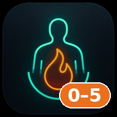

<!doctype html>
<html lang="de">
<head>
<meta charset="utf-8">
<meta name="viewport" content="width=device-width, initial-scale=1, viewport-fit=cover">
<title>BurnStart — Verbrennung Tag 0–5</title>
<meta name="description" content="Aufnahme und Tag 0–5 bei Verbrennung ≥ 20 % VKOF: Checkliste mit Kontext und Volumentherapie nach SOP der V1. Gekoppelt mit BurnICU.">
<meta name="theme-color" content="#f3f6f9">
<link rel="manifest" href="manifest.webmanifest">
<link rel="icon" type="image/png" sizes="32x32" href="icons/favicon-32.png">
<link rel="apple-touch-icon" href="icons/apple-touch-icon.png">
<style>
:root{
  --bg:#f3f6f9;--surf:#fff;--raise:#eef2f6;--raise2:#e1e8f0;--line:#d6dee7;--line2:#b4c2d2;
  --txt:#16294a;--mut:#4f6482;--dim:#8394aa;--navy:#1d4268;--teal:#1f8f9b;
  --ok:#17707a;--ok-bg:#e3f2f3;--ok-bd:#9fd0d4;
  --amb:#8a5300;--amb-bg:#fdf0d9;--amb-bd:#e8be77;
  --red:#b42330;--red-bg:#fbeaec;--red-bd:#e3a3a9;
  --inf:#1d4268;--inf-bg:#e8eef5;--inf-bd:#b4c2d2;
  --p-sr:#2f6fb3;--p-auf:#c62f38;--p-iv:#7b3fa0;--p-h0:#d9730d;--p-h8:#a8860a;--p-h24:#2f8f4e;--p-t3:#1f8f9b;--p-t4:#2f6fb3;--p-t5:#6b5bb3;
  --r:12px
}
*{box-sizing:border-box}
html,body{margin:0;background:var(--bg);color:var(--txt);font:15px/1.42 -apple-system,BlinkMacSystemFont,"Segoe UI",Roboto,"Helvetica Neue",Arial,sans-serif;font-variant-numeric:tabular-nums;-webkit-text-size-adjust:100%}
button,input,select,textarea{font:inherit;color:inherit}
button{cursor:pointer;background:none;border:0;padding:0}
input,select,textarea{background:#fff;border:1px solid var(--line2);border-radius:8px;padding:6px 8px;min-height:34px}
input:focus,select:focus,textarea:focus{outline:2px solid var(--teal);outline-offset:0;border-color:var(--teal)}
textarea{width:100%;min-height:60px;resize:vertical}
b{font-weight:650}
.wrap{max-width:1500px;margin:0 auto;padding:0 20px}
.top{position:sticky;top:0;z-index:30;background:rgba(243,246,249,.96);backdrop-filter:blur(6px);border-bottom:1px solid var(--line)}
.toprow{display:flex;align-items:center;gap:14px;min-height:58px;padding-top:6px;padding-bottom:6px}
.brand{display:flex;align-items:center;gap:10px;flex:none}
.brand img{width:34px;height:34px;border-radius:8px}
.brand b{display:block;font-size:17px;color:var(--navy);letter-spacing:.2px}
.brand span{display:block;font-size:12px;color:var(--mut)}
.pats{display:flex;gap:6px;flex-wrap:wrap;flex:1;align-items:center}
.pchip{border:1px solid var(--line2);background:#fff;border-radius:999px;padding:5px 12px;display:flex;gap:6px;align-items:center;font-size:14px;white-space:nowrap}
.pchip span{color:var(--mut);font-size:12.5px}
.pchip.on{background:var(--navy);border-color:var(--navy);color:#fff}
.pchip.on span{color:#d6e2ef}
.pchip.dim{opacity:.6}
.dot{width:8px;height:8px;border-radius:50%;display:inline-block;background:var(--red)}
.dot.a{background:#d99a1c}
.tright{display:flex;align-items:center;gap:8px;flex:none}
.clock{color:var(--mut);font-size:13px;margin-right:4px}
.btn{border:1px solid var(--line2);background:#fff;border-radius:9px;padding:6px 12px;font-size:14px;white-space:nowrap}
.btn:hover{background:var(--raise)}
.btn.pri{background:var(--navy);border-color:var(--navy);color:#fff}
.btn.pri:hover{background:#163454}
.btn.ok{background:var(--ok);border-color:var(--ok);color:#fff}
.btn.sm{padding:3px 9px;font-size:13px;border-radius:7px}
.btn.lnk{border:0;background:none;color:var(--teal);padding:2px 4px;text-decoration:underline}
.btn.danger{color:var(--red)}
.iconbtn{width:36px;height:36px;border-radius:9px;border:1px solid var(--line2);background:#fff;font-size:20px;line-height:1;text-align:center}
main{padding-top:14px;padding-bottom:60px}
.card{background:var(--surf);border:1px solid var(--line);border-radius:var(--r);padding:12px 16px;margin-bottom:12px}
.card h2{font-size:16px;margin:0 0 8px;color:var(--navy)}
.card h3{font-size:14.5px;margin:0 0 6px}
.pbar{display:flex;flex-wrap:wrap;gap:6px 14px;align-items:center;padding:10px 16px}
.pbar .nm{font-size:19px;font-weight:700;color:var(--navy);margin-right:4px}
.kv{display:flex;flex-direction:column;line-height:1.15}
.kv small{font-size:11.5px;color:var(--mut);text-transform:uppercase;letter-spacing:.3px}
.kv b{font-size:15px}
.kv b.miss{color:var(--red)}
.kv.big b{font-size:17px}
.flag{border-radius:999px;padding:2px 9px;font-size:12.5px;font-weight:600;background:var(--raise2);color:var(--navy)}
.flag.r{background:var(--red-bg);color:var(--red)}
.flag.a{background:var(--amb-bg);color:var(--amb)}
.flag.o{background:var(--ok-bg);color:var(--ok)}
.sep{width:1px;align-self:stretch;background:var(--line)}
.now{display:grid;grid-template-columns:1fr auto;gap:8px 16px;align-items:center;border-left:5px solid var(--ok)}
.now.w{border-left-color:#d99a1c}.now.e{border-left-color:var(--red)}.now.i{border-left-color:var(--navy)}
.now .nh{font-size:16.5px;font-weight:700}
.now .ntx{color:var(--mut);font-size:14px}
.now .nx{display:flex;flex-wrap:wrap;gap:6px;margin-top:6px}
.nxc{font-size:13px;background:var(--raise);border-radius:7px;padding:2px 8px}
.nxc.d{background:var(--amb-bg);color:var(--amb)}.nxc.o{background:var(--red-bg);color:var(--red)}
.tabs{display:inline-flex;border:1px solid var(--line2);border-radius:10px;overflow:hidden;margin:2px 0 12px;background:#fff}
.tabs button{padding:8px 18px;font-weight:600;color:var(--mut)}
.tabs button.on{background:var(--navy);color:#fff}
.tabs button .cnt{display:inline-block;min-width:20px;padding:0 6px;border-radius:10px;background:var(--red);color:#fff;font-size:12px;margin-left:6px;text-align:center}
.cols{display:grid;grid-template-columns:minmax(0,1fr) 360px;gap:14px;align-items:start}
.side{position:sticky;top:76px}
@media (max-width:1100px){.cols{grid-template-columns:1fr}.side{position:static}}
.banner{border-radius:10px;padding:8px 12px;margin-bottom:10px;font-size:14px}
.banner.w{background:var(--amb-bg);border:1px solid var(--amb-bd);color:#5c3900}
.banner.e{background:var(--red-bg);border:1px solid var(--red-bd);color:#7d1720}
.banner.i{background:var(--inf-bg);border:1px solid var(--inf-bd)}
.ph{border-left:5px solid var(--pc,#999);padding:10px 14px 8px}
.ph-h{display:flex;align-items:center;gap:10px;cursor:pointer;user-select:none}
.ph-h h3{margin:0;font-size:15px}
.ph-h .tm{color:var(--mut);font-size:13px}
.ph-h .cnt{margin-left:auto;font-size:12.5px;color:var(--mut)}
.ph-h .cnt b.o{color:var(--red)}
.ph-h .fold{color:var(--dim);font-size:12px;width:14px}
.ph.cur{box-shadow:0 0 0 2px var(--pc) inset}
.ph-b{margin-top:6px}
.it{display:grid;grid-template-columns:26px minmax(0,1fr) auto 24px 22px;gap:8px;align-items:start;padding:6px 0;border-top:1px solid var(--raise)}
.it:first-child{border-top:0}
.cb{width:22px;height:22px;border:2px solid var(--line2);border-radius:6px;background:#fff;color:#fff;font-size:14px;line-height:18px;text-align:center;margin-top:1px}
.cb.on{background:var(--ok);border-color:var(--ok)}
.it.st-due .cb{border-color:#d99a1c}
.it.st-over .cb{border-color:var(--red)}
.itx{min-width:0}
.it.st-done .itx{color:var(--mut)}
.it.st-na .itx{color:var(--dim);text-decoration:line-through}
.itx .sub{display:block;color:var(--mut);font-size:13px}
.itx .dt{display:inline-block;margin-left:8px;font-size:12px;color:var(--ok)}
.itx .run{display:inline-block;margin-left:6px;font-size:12px;background:var(--ok-bg);color:var(--ok);border-radius:6px;padding:0 6px}
.due{font-size:12.5px;white-space:nowrap;padding:1px 8px;border-radius:7px;color:var(--mut);background:var(--raise);margin-top:2px}
.due.d-due{background:var(--amb-bg);color:var(--amb);font-weight:600}
.due.d-over{background:var(--red-bg);color:var(--red);font-weight:600}
.due.d-done{background:var(--ok-bg);color:var(--ok)}
.due.d-na{background:none;color:var(--dim)}
.ib{width:22px;height:22px;border-radius:50%;border:1.5px solid var(--teal);color:var(--teal);font:italic 700 13px/19px Georgia,serif;text-align:center;margin-top:1px}
.ib.on{background:var(--teal);color:#fff}
.na{color:var(--dim);font-size:15px;width:22px;height:22px;border-radius:6px;margin-top:1px}
.na:hover{background:var(--raise)}
.info{grid-column:1/-1;background:#f6fafb;border:1px solid var(--ok-bd);border-left:4px solid var(--teal);border-radius:8px;padding:8px 12px;margin:2px 0 6px 34px;font-size:13.5px}
.info p{margin:3px 0}
.info p b{display:inline-block;min-width:68px;color:var(--teal)}
.side .info{margin-left:0}
.inl{display:flex;flex-wrap:wrap;gap:6px 12px;margin-top:4px}
.inl label{display:flex;align-items:center;gap:5px;font-size:13px;color:var(--mut)}
.inl input{width:76px;min-height:28px;padding:3px 6px;font-size:13.5px}
.inl .lv{font-size:12px;color:var(--dim)}
.grid-f{display:grid;grid-template-columns:repeat(auto-fill,minmax(150px,1fr));gap:8px 12px}
.fl{display:flex;flex-direction:column;gap:2px;font-size:12.5px;color:var(--mut)}
.fl input,.fl select{width:100%;color:var(--txt)}
.fl.w2{grid-column:span 2}
.fl.miss input{border-color:var(--red);background:var(--red-bg)}
.cks{display:flex;flex-wrap:wrap;gap:4px 12px;align-items:center;font-size:14px}
.cks label{display:flex;align-items:center;gap:5px;cursor:pointer}
.cks input[type=checkbox]{min-height:0;width:17px;height:17px;accent-color:var(--teal)}
.seg{display:inline-flex;border:1px solid var(--line2);border-radius:8px;overflow:hidden;background:#fff}
.seg button{padding:4px 10px;font-size:13px;border-left:1px solid var(--line)}
.seg button:first-child{border-left:0}
.seg button.on{background:var(--teal);color:#fff}
.row{display:flex;flex-wrap:wrap;gap:8px 14px;align-items:center}
.lbl{font-size:12.5px;color:var(--mut)}
.side .card{padding:10px 14px}
.side h3{font-size:14px;margin:0 0 6px;color:var(--navy);display:flex;align-items:center;gap:6px}
.sl{display:grid;grid-template-columns:1fr auto;gap:2px 8px;padding:5px 0;border-top:1px solid var(--raise);font-size:13.5px;align-items:center}
.sl:first-of-type{border-top:0}
.sl .t2{color:var(--mut);font-size:12.5px}
.sl.o .t1{color:var(--red);font-weight:600}
.sl.d .t1{color:var(--amb);font-weight:600}
.nt{display:grid;grid-template-columns:18px 1fr 24px;gap:6px;padding:4px 0;font-size:13.5px;align-items:start}
.nt .x{color:var(--red);font-weight:700}
.tiles{display:grid;grid-template-columns:repeat(6,minmax(0,1fr));gap:10px;margin-bottom:12px}
@media (max-width:1250px){.tiles{grid-template-columns:repeat(3,minmax(0,1fr))}}
.tile{background:#fff;border:1px solid var(--line);border-radius:var(--r);padding:9px 12px;display:flex;flex-direction:column;gap:2px;min-width:0}
.tile .tl{font-size:12px;color:var(--mut);text-transform:uppercase;letter-spacing:.3px;display:flex;align-items:center;gap:6px}
.tile .tv{font-size:22px;font-weight:700;color:var(--navy)}
.tile .tv small{font-size:13px;font-weight:500;color:var(--mut)}
.tile .tk{font-size:12.5px;color:var(--mut)}
.tile input{width:100%;min-height:30px;margin-top:3px}
.tile.low{border-color:var(--red-bd);background:var(--red-bg)}
.tile.okk{border-color:var(--ok-bd);background:var(--ok-bg)}
.tile.hi{border-color:var(--amb-bd);background:var(--amb-bg)}
.box{border-radius:10px;padding:9px 12px;margin-bottom:8px;border:1px solid}
.box.ok{background:var(--ok-bg);border-color:var(--ok-bd)}
.box.w{background:var(--amb-bg);border-color:var(--amb-bd)}
.box.e{background:var(--red-bg);border-color:var(--red-bd)}
.box.i{background:var(--inf-bg);border-color:var(--inf-bd)}
.box .bh{display:flex;align-items:center;gap:10px;flex-wrap:wrap;font-weight:700;font-size:15px}
.box .bt{font-size:13.5px;margin-top:2px}
.crit{display:flex;flex-wrap:wrap;gap:6px;margin:6px 0 2px;align-items:center}
.cc{display:inline-flex;align-items:center;gap:5px;border-radius:8px;padding:3px 8px;font-size:13px;border:1px solid var(--line2);background:#fff}
.cc.y{background:var(--ok-bg);border-color:var(--ok-bd);color:var(--ok)}
.cc.n{background:var(--red-bg);border-color:var(--red-bd);color:var(--red)}
.cc.u{background:#fff;color:var(--mut)}
.cc.x{background:var(--raise);color:var(--dim)}
.cc input{width:56px;min-height:24px;padding:1px 5px;font-size:13px}
.vgrid{display:grid;grid-template-columns:minmax(0,1.25fr) minmax(0,1fr);gap:12px;align-items:start}
@media (max-width:1100px){.vgrid{grid-template-columns:1fr}}
.hl{margin:0;padding-left:18px;font-size:13.5px}
.hl li{margin:3px 0}
.hl li.w{color:#7a4a00}.hl li.e{color:var(--red);font-weight:600}
.nform{display:grid;grid-template-columns:150px 1fr;gap:6px 10px;align-items:center;font-size:13.5px}
.nform .ins{display:flex;flex-wrap:wrap;gap:6px;align-items:center}
.nform input,.nform select{min-height:30px;padding:3px 7px}
.nform input.t{width:74px}.nform input.n{width:90px}
.tblw{overflow:auto;border:1px solid var(--line);border-radius:var(--r);background:#fff;max-height:75vh}
table.vt{border-collapse:separate;border-spacing:0;width:100%;font-size:13px}
.vt th{position:sticky;top:0;background:var(--raise);z-index:2;font-weight:600;text-align:left;padding:6px 6px;border-bottom:1px solid var(--line2);white-space:nowrap;font-size:12px;color:var(--mut)}
.vt td{padding:2px 5px;border-bottom:1px solid var(--raise);white-space:nowrap;vertical-align:middle}
.vt td.num{text-align:right}
.vt input,.vt select{width:66px;min-height:26px;padding:1px 5px;font-size:13px;border-radius:6px}
.vt input.w4{width:52px}
.vt tr.cur td{background:#fffbea}
.vt tr.b8 td{border-top:2px solid var(--p-h0)}
.vt tr.b24 td{border-top:2px solid var(--p-h24)}
.vt tr.pre td{color:var(--dim)}
.vt .ok{color:var(--ok);font-weight:600}.vt .low{color:var(--red);font-weight:700}.vt .hi{color:var(--amb);font-weight:600}
.vt td.diu-low{background:var(--red-bg)}.vt td.diu-ok{background:var(--ok-bg)}.vt td.diu-hi{background:var(--amb-bg)}
.vt .grey{color:var(--dim)}
.vt .avg{color:var(--mut);font-style:italic}
.dec{display:inline-block;border-radius:6px;padding:0 6px;font-weight:700;font-size:12.5px}
.dec.up{background:var(--red-bg);color:var(--red)}.dec.dn{background:var(--ok-bg);color:var(--ok)}.dec.eq{background:var(--raise);color:var(--mut)}
.ex{display:inline-flex;align-items:center;gap:2px;background:var(--raise);border-radius:6px;padding:0 5px;margin-right:3px;font-size:12px}
.ex button{color:var(--dim);font-size:12px;padding:0 2px}
.dlt{color:var(--dim);font-size:12px;padding:0 3px}
.dlt:hover{color:var(--red)}
.tb2{border-collapse:collapse;width:100%;font-size:13.5px}
.tb2 th,.tb2 td{padding:4px 8px;border-bottom:1px solid var(--raise);text-align:right}
.tb2 th:first-child,.tb2 td:first-child{text-align:left}
.tb2 th{font-size:12px;color:var(--mut);font-weight:600}
.dlgbg{position:fixed;inset:0;background:rgba(22,41,74,.38);z-index:50;display:flex;align-items:flex-start;justify-content:center;padding:6vh 16px;overflow:auto}
.dlg{background:#fff;border-radius:14px;box-shadow:0 20px 60px rgba(22,41,74,.3);width:min(720px,100%);padding:16px 20px}
.dlg h2{margin:0 0 10px;color:var(--navy);font-size:18px}
.dlg .acts{display:flex;gap:8px;justify-content:flex-end;margin-top:14px}
.menu{position:fixed;top:56px;right:20px;z-index:60;background:#fff;border:1px solid var(--line2);border-radius:12px;box-shadow:0 12px 40px rgba(22,41,74,.2);min-width:280px;padding:6px}
.menu button,.menu a{display:block;width:100%;text-align:left;padding:8px 12px;border-radius:8px;color:var(--txt);text-decoration:none;font-size:14px}
.menu button:hover,.menu a:hover{background:var(--raise)}
.menu .ft{font-size:12px;color:var(--dim);padding:6px 12px}
.toast{position:fixed;bottom:22px;left:50%;transform:translateX(-50%);background:var(--navy);color:#fff;border-radius:10px;padding:8px 16px;z-index:70;font-size:14px}
.empty{text-align:center;padding:60px 20px;color:var(--mut)}
.leg{font-size:12px;color:var(--mut);margin-top:6px}
.mut{color:var(--mut)}
.small{font-size:12.5px}
#print{display:none}
@media print{
  @page{size:A4 portrait;margin:9mm 9mm 10mm}
  html,body{background:#fff;font-size:8.6pt}
  #app{display:none!important}
  #print{display:block}
}
.pp{color:#000;font-size:8.6pt;line-height:1.3}
.pp .pg{page-break-after:always;break-after:page}
.pp .pg:last-child{page-break-after:auto;break-after:auto}
.pp h1{font-size:13pt;margin:0;color:#1d4268}
.pp .ph1{display:flex;justify-content:space-between;align-items:flex-end;border-bottom:1.5pt solid #1d4268;padding-bottom:3pt;margin-bottom:4pt}
.pp .meta{font-size:8.4pt}
.pp .tl{display:flex;gap:10pt;flex-wrap:wrap;font-size:8.2pt;margin:2pt 0 5pt}
.pp .tl span b{color:#1d4268}
.pp .sec{border:0.8pt solid #9aa7b4;border-left:3.5pt solid var(--pc,#555);border-radius:3pt;padding:3pt 6pt;margin-bottom:4pt;break-inside:avoid}
.pp .sec h3{font-size:9.4pt;margin:0 0 2pt;display:flex;justify-content:space-between}
.pp .sec h3 span{font-weight:400;font-size:8pt;color:#333}
.pp .ci{display:grid;grid-template-columns:11pt 1fr auto;gap:3pt;padding:1pt 0}
.pp .ci .w{font-size:7.6pt;color:#333;white-space:nowrap}
.pp .ci.dn{color:#555}
.pp .cbx{font-size:10pt;line-height:9pt}
.pp .two{display:grid;grid-template-columns:1fr 1fr;gap:4pt}
.pp .three{display:grid;grid-template-columns:1fr 1fr 1fr;gap:4pt}
.pp .fl2{display:grid;grid-template-columns:1fr 1fr;gap:1pt 10pt}
.pp .ln{display:inline-block;border-bottom:0.6pt solid #000;min-width:38pt;height:9pt;vertical-align:bottom}
.pp .fill{font-weight:700}
.pp table{border-collapse:collapse;width:100%}
.pp td,.pp th{border:0.5pt solid #777;padding:1pt 2.5pt;font-size:7.8pt;text-align:center;height:12.5pt}
.pp th{background:#e8eef5;font-size:7.2pt}
.pp td.l{text-align:left}
.pp tr.g td{color:#555}
.pp tr.bl td{border-top:1.4pt solid #000}
.pp .boxes{display:grid;grid-template-columns:repeat(5,1fr);gap:4pt;margin-bottom:4pt}
.pp .bx{border:0.8pt solid #777;border-radius:3pt;padding:2pt 4pt}
.pp .bx small{display:block;font-size:7pt;color:#333;text-transform:uppercase}
.pp .bx b{font-size:10pt}
.pp .note{border:0.8pt solid #b8730a;background:#fff8e8;border-radius:3pt;padding:2pt 5pt;margin-bottom:4pt;font-size:8.2pt}
.pp .leg{font-size:6.8pt;color:#222;margin-top:4pt;line-height:1.25}
.pp .ft{font-size:6.8pt;color:#444;margin-top:2pt}
.pp .stp td{height:auto;font-size:7.4pt}
.pp .pc{font-size:7.5pt;line-height:1.22}
.pp .sub{display:block;color:#333}
.pp .run,.pp .flag{font-size:7pt;border:0.5pt solid #999;border-radius:2pt;padding:0 2pt;margin-left:3pt}
.pp .pc .sec{padding:2pt 5pt;margin-bottom:3pt}
.pp .pc .sec h3{font-size:8.6pt;margin-bottom:1pt}
.pp .pc .ci{padding:0.4pt 0}
.pp .pc .ci .w{font-size:7pt}
.pp .cur{background:#fff2b3}
.pp .r10{outline:1.2pt solid #1d4268}
</style>
</head>
<body>
<div id="app"></div>
<div id="print" class="pp" aria-hidden="true"></div>
<script>
"use strict";
(() => {
/* =====================================================================
   BurnStart — Verbrennung ≥ 20 % VKOF, Aufnahme und Tag 0–5
   Gekoppelt mit BurnICU: liest und schreibt direkt den BurnICU-Speicher
   (gleiche Domain). Eigener Speicher nur für den Verlaufsspiegel und die
   Bedienung. Hausstandard: SOPs der V1 gehen vor Literatur.
   ===================================================================== */
const APP_VERSION = "1.0.0";
const BKEY = "burnicu_v3";
const SKEY = "burnstart_v1";
const H = 36e5, MIN = 6e4, EPOCH = "1970-01-01T00:00:00.000Z";

/* ---------- Hilfsfunktionen ---------- */
const uid = () => Date.now().toString(36) + Math.random().toString(36).slice(2, 7);
const nowISO = () => new Date().toISOString();
const pad = (n) => String(n).padStart(2, "0");
const tMs = (x) => x == null || x === "" ? null : typeof x === "number" ? x : new Date(x).getTime();
const isoOf = (ms) => new Date(ms).toISOString();
const WD = ["So", "Mo", "Di", "Mi", "Do", "Fr", "Sa"];
const fT = (x) => { const d = new Date(tMs(x)); return pad(d.getHours()) + ":" + pad(d.getMinutes()); };
const fHH = (x) => pad(new Date(tMs(x)).getHours());
const fD = (x) => { const d = new Date(tMs(x)); return pad(d.getDate()) + "." + pad(d.getMonth() + 1) + "."; };
const fDT = (x) => fD(x) + " " + fT(x);
const fWDT = (x) => WD[new Date(tMs(x)).getDay()] + " " + fDT(x);
const sameDay = (a, b) => new Date(a).toDateString() === new Date(b).toDateString();
const fRel = (ms) => sameDay(ms, Date.now()) ? fT(ms) : WD[new Date(ms).getDay()] + " " + fT(ms);
const numDE = (v) => {
  if (v == null || v === "") return null;
  const n = parseFloat(String(v).replace(",", ".").replace(/[^0-9.\-]/g, ""));
  return Number.isFinite(n) ? n : null;
};
const fN = (v, d = 1) => v == null || !Number.isFinite(v) ? "" : (Math.round(v * Math.pow(10, d)) / Math.pow(10, d)).toLocaleString("de-DE", { maximumFractionDigits: d });
const r0 = (n) => Math.round(n).toLocaleString("de-DE");
const tsd = (v) => v == null || !Number.isFinite(v) ? "" : (v < 0 ? "−" : "") + String(Math.round(Math.abs(v))).replace(/\B(?=(\d{3})+(?!\d))/g, ".");
const r10 = (v) => Math.round(v / 10) * 10;
const byT = (a, b) => a.t < b.t ? -1 : a.t > b.t ? 1 : 0;
const last = (a) => a && a.length ? a[a.length - 1] : null;
const esc = (s) => String(s == null ? "" : s).replace(/[&<>"']/g, (c) => ({ "&": "&amp;", "<": "&lt;", ">": "&gt;", '"': "&quot;", "'": "&#39;" }[c]));
const hourFloor = (ms) => { const d = new Date(ms); d.setMinutes(0, 0, 0); return d.getTime(); };
const hourRound = (x) => { const d = new Date(tMs(x)); d.setMinutes(d.getMinutes() + 30, 0, 0); d.setMinutes(0, 0, 0); return d.getTime(); };
const clone = (o) => JSON.parse(JSON.stringify(o));
const dtLocal = (ms) => { if (ms == null || !Number.isFinite(ms)) return ""; const d = new Date(ms); return `${d.getFullYear()}-${pad(d.getMonth() + 1)}-${pad(d.getDate())}T${pad(d.getHours())}:${pad(d.getMinutes())}`; };
const todayYMD = () => { const d = new Date(); return `${d.getFullYear()}-${pad(d.getMonth() + 1)}-${pad(d.getDate())}`; };
/* hh:mm → Zeitpunkt in der jüngsten Vergangenheit (max. 30 min Zukunft) relativ zu ref */
function hhmmVor(s, ref) {
  const m = String(s || "").match(/^\s*(\d{1,2})\s*[:.,]?\s*(\d{2})\s*$/);
  if (!m) return null;
  const h = +m[1], mi = +m[2];
  if (h > 23 || mi > 59) return null;
  const d = new Date(ref);
  d.setHours(h, mi, 0, 0);
  let t = d.getTime();
  if (t > ref + 30 * MIN) t -= 864e5;
  return t;
}
const normHHMM = (s) => { const t = hhmmVor(s, Date.now()); return t == null ? "" : fT(t); };

/* ---------- Speicher ---------- */
const DEF_B = () => ({ version: 1, shiftStart: null, shiftNote: "", patients: {}, archive: [] });
let storageOk = true;
let hasBicu = false;
function readB() {
  try {
    const r = localStorage.getItem(BKEY);
    if (r) {
      const s = JSON.parse(r);
      if (s && s.patients) { hasBicu = true; return s; }
    }
  } catch (e) {}
  hasBicu = false;
  return DEF_B();
}
function writeB(s) {
  try { localStorage.setItem(BKEY, JSON.stringify(s)); storageOk = true; hasBicu = true; } catch (e) { storageOk = false; }
}
function readS() { try { const r = localStorage.getItem(SKEY); if (r) return JSON.parse(r) || {}; } catch (e) {} return {}; }
function writeS(o) { try { localStorage.setItem(SKEY, JSON.stringify(o)); } catch (e) {} }

const S0 = readS();
const UI = { sel: S0.sel || null, tab: S0.tab || "check", open: {}, fold: {}, showNA: false, notif: !!S0.notif, dlg: null, menu: false, toast: "", focusNext: null, hist: false, upd: null };
function saveUI() { const s = readS(); s.sel = UI.sel; s.tab = UI.tab; s.notif = UI.notif; writeS(s); }

/* ---------- Patientendaten (Struktur wie BurnICU) ---------- */
const BURN_DX_RE = /verbrenn|verbrüh|brandverletz|\bVKOF\b|stromunfall|hochspannung|elektrounfall|blitzunfall|inhalationstrauma|flammen|explosionstrauma/i;
const VKOF_RE = /(\d{1,2}(?:[,.]\d)?)\s*%\s*(?:VKOF|KOF)/i;
const emptyBurn = () => ({ unfall: "", vkof: "", tief: "", alter: "", gegeben: "", gegebenT: "", rate: "", inhal: false, strom: false, myo: false });
const burnOf = (p) => ({ ...emptyBurn(), ...(p.burn || {}) });
const c48Of = (p) => p.c48 || {};
const isDone = (p, k) => !!((c48Of(p).done || {})[k]);
const bsOf = (p) => ({ alb: [], extra: [], rekap: [], na: {}, doneT: {}, hd: "auto", lsg: "ra", ...(p.bs || {}) });
const hasBurn = (p) => { const b = burnOf(p); return !!(b.unfall || b.vkof); };
const isBurnPat = (p) => hasBurn(p) || BURN_DX_RE.test(p.diagnose || "") || !!p.unterwegs;
function patKg(p) {
  const g = parseFloat(String(p.gewicht || "").replace(",", "."));
  if (Number.isFinite(g) && g > 0) return g;
  const m = String(p.info || "").match(/(\d{2,3})\s*kg/i);
  return m ? Number(m[1]) : null;
}
function patAlter(p) {
  const a = numDE(burnOf(p).alter);
  if (a != null) return a;
  const m = String(p.info || "").match(/(\d{1,3})\s*(?:J\b|J\.|Jahre|jährig)/i);
  return m ? Number(m[1]) : null;
}
function patSex(p) {
  if (p.sex === "m" || p.sex === "w") return p.sex;
  const s = " " + String(p.info || "").toLowerCase() + " ";
  if (/[\s,;(]w[\s,;.)]|weibl/.test(s)) return "w";
  if (/[\s,;(]m[\s,;.)]|männl/.test(s)) return "m";
  return null;
}
function patVk(p) {
  const v = numDE(burnOf(p).vkof);
  if (v != null) return v;
  const m = String(p.diagnose || "").match(VKOF_RE);
  return m ? numDE(m[1]) : null;
}
const piccoAktiv = (p) => !!p && !p.piccoAus && (!!p.piccoAn || (p.picco || []).length > 0);
const devAct = (p, typ) => (p.devices || []).find((d) => !d.ende && d.typ === typ);
function newPatient(o) {
  return { id: uid(), name: "", zimmer: 1, platz: "", mine: true, aufnahme: todayYMD(), info: "", gewicht: "", diagnose: "", vorerkrankungen: [], verlauf: [], todos: [], systeme: {}, labs: {}, volumen: { status: "", pulm: "", note: "", b24: [], bkum: [], ziel: "", zielMenge: "" }, infekt: { foki: [], erreger: [], therapie: [] }, status: {}, orga: [], notiz: "", uebPunkte: [], burn: emptyBurn(), diurese: [], picco: [], meds: [], eingriffe: [], created: nowISO(), ...o };
}

/* ---------- Verlaufsspiegel: BurnICU kürzt Diurese (72 h), Labor (48 h) und einige Listen — hier bleibt der Verlauf bis Tag 5 erhalten ---------- */
const VLABS = ["Laktat", "ScvO2", "Na+", "K+", "Albumin", "COHb", "CK", "Myoglobin", "Hb", "MAP", "Anti-Xa"];
const SERCFG = { diurese: { ret: 72, cap: 96 }, infRate: { cap: 80 }, iap: { cap: 60 }, picco: { cap: 40 }, lab: { ret: 48 } };
const skey = (x) => x.id || (x.t + "|" + x.v);
function mergeSer(mir, cur, cfg) {
  cur = (cur || []).filter((x) => x && x.t);
  if (!cur.length) return [];
  const ids = new Set(cur.map(skey));
  const minT = cur.reduce((m, x) => x.t < m ? x.t : m, cur[0].t);
  const horizon = cfg && cfg.ret ? isoOf(Date.now() - (cfg.ret - 1) * H) : null;
  const atCap = cfg && cfg.cap ? cur.length >= cfg.cap : false;
  const keep = (mir || []).filter((x) => !ids.has(skey(x)) && x.t < minT && ((horizon && x.t < horizon) || atCap));
  return keep.concat(cur).sort(byT);
}
let MIR = readS().mirror || {};
function serOf(p, key) {
  const m = MIR[p.id] || {};
  if (key.indexOf("lab:") === 0) {
    const n = key.slice(4);
    return mergeSer((m.labs || {})[n], ((p.labs || {})[n] || {}).vals, SERCFG.lab);
  }
  return mergeSer(m[key], p[key], SERCFG[key]);
}
function syncMirror(B) {
  const s = readS();
  const M = s.mirror || {};
  const now = Date.now();
  Object.values(B.patients || {}).forEach((p) => {
    if (!isBurnPat(p)) return;
    const o = M[p.id] || {};
    const n = { seen: now, labs: {} };
    ["diurese", "infRate", "iap", "picco"].forEach((k) => { const v = mergeSer(o[k], p[k], SERCFG[k]); if (v.length) n[k] = v.slice(-400); });
    VLABS.forEach((l) => { const v = mergeSer((o.labs || {})[l], ((p.labs || {})[l] || {}).vals, SERCFG.lab); if (v.length) n.labs[l] = v.slice(-200); });
    M[p.id] = n;
  });
  Object.keys(M).forEach((id) => { if (!(B.patients || {})[id] && now - (M[id].seen || 0) > 7 * 864e5) delete M[id]; });
  s.mirror = M;
  MIR = M;
  writeS(s);
}
function mirDrop(pid, key, id) {
  const s = readS();
  const m = (s.mirror || {})[pid];
  if (!m) return;
  if (key.indexOf("lab:") === 0) { const n = key.slice(4); if (m.labs && m.labs[n]) m.labs[n] = m.labs[n].filter((x) => skey(x) !== id); }
  else if (m[key]) m[key] = m[key].filter((x) => skey(x) !== id);
  writeS(s);
  MIR = s.mirror;
}

/* ---------- Schreiben in den BurnICU-Speicher ---------- */
function upd(pid, fn) {
  const B = readB();
  const p = B.patients[pid];
  if (!p) { toast("Patient nicht gefunden — in BurnICU entlassen?"); render(); return; }
  const q = clone(p);
  fn(q);
  B.patients[pid] = q;
  writeB(B);
  refresh();
}
const setBurn = (q, patch) => { q.burn = { ...burnOf(q), ...patch }; };
const setC48 = (q, k, v) => { q.c48 = { ...(q.c48 || {}), [k]: v }; };
const bsMut = (q) => { q.bs = bsOf(q); return q.bs; };
function toggleDone(q, k, force) {
  const c = q.c48 = { ...(q.c48 || {}) };
  c.done = { ...(c.done || {}) };
  const on = force != null ? force : !c.done[k];
  c.done[k] = on;
  const bs = bsMut(q);
  bs.doneT = { ...bs.doneT };
  if (on) bs.doneT[k] = nowISO(); else delete bs.doneT[k];
  if (on && bs.na[k]) { bs.na = { ...bs.na }; delete bs.na[k]; }
}
const insSorted = (arr, e) => (arr || []).concat([e]).sort(byT);
const LABMETA = { Laktat: ["bga", "mmol/l"], ScvO2: ["bga", "%"], COHb: ["bga", "%"], Hb: ["blut", "g/dl"], "Anti-Xa": ["blut", "IE/ml"], "Na+": ["niere", "mmol/l"], "K+": ["niere", "mmol/l"], CK: ["niere", "U/l"], Myoglobin: ["niere", "µg/l"], Albumin: ["leber", "g/dl"], MAP: ["", "mmHg"] };
function labSet(q, n, t, v, id) {
  const L = q.labs = { ...(q.labs || {}) };
  const m = LABMETA[n] || ["", ""];
  const cur = L[n] ? { ...L[n] } : { grp: m[0], unit: m[1], imp: false, ueb: false, vals: [] };
  let vals = (cur.vals || []).slice();
  if (id) vals = vals.filter((x) => x.id !== id);
  if (v !== "" && v != null) vals = insSorted(vals, { id: id || uid(), t: isoOf(t), v: String(v).trim().replace(".", ",") });
  cur.vals = vals;
  L[n] = cur;
}
function devUpsert(q, typ, lage, burnFlag) {
  const ds = (q.devices || []).slice();
  const i = ds.findIndex((y) => !y.ende && y.typ === typ);
  if (i >= 0) { ds[i] = { ...ds[i], ...(lage != null ? { lage } : {}), ...(burnFlag != null ? { burn: burnFlag } : {}) }; q.devices = ds; return; }
  if (!lage && !burnFlag) return;
  ds.push({ id: uid(), typ, lage: lage || "", seit: todayYMD(), burn: !!burnFlag });
  q.devices = ds;
}

/* ---------- Berechnungen ---------- */
function calc(p, now) {
  now = now || Date.now();
  const b = burnOf(p), d = c48Of(p), bs = bsOf(p);
  const kg = patKg(p), cm = numDE(p.groesse), sex = patSex(p), age = patAlter(p);
  const vk = patVk(p), tief = numDE(b.tief);
  let u = b.unfall ? tMs(b.unfall) : null;
  if (u != null && !Number.isFinite(u)) u = null;
  const h = u != null ? (now - u) / H : null;
  const o = { p, b, d, bs, kg, cm, sex, age, vk, tief, u, h, now };
  o.spec = vk != null ? vk >= 20 : true;
  o.tag = h != null && h >= 0 ? Math.floor(h / 24) + 1 : null;
  o.schock = o.spec && h != null && h >= 0 && h < 48;
  o.child = age != null ? age < 16 : kg != null && kg < 30;
  o.inhal = !!b.inhal;
  o.strom = !!b.strom || (d.mech || []).indexOf("strom") >= 0;
  o.myo = !!b.myo;
  o.intub = !!d.intub;
  o.russ = !!b.inhal || isDone(p, "rg_russ");
  o.gesicht = (d.lok || []).indexOf("gesicht") >= 0;
  if (kg && vk) {
    if (kg >= 40) {
      o.vk10 = Math.max(10, Math.ceil(vk / 10) * 10);
      o.rotKg = kg > 80 ? Math.ceil((kg - 80) / 10) * 100 : 0;
      o.rotIht = b.inhal ? 100 : 0;
      o.rot = o.vk10 * 10 + o.rotKg + o.rotIht;
    } else o.rotNA = true;
    o.ivy = 250 * kg;
    o.rescue = 6 * kg * vk;
  }
  if (o.schock || h == null || h < 48) {
    o.uoLo = o.myo ? 1.5 : o.child ? 1 : 0.3;
    o.uoHi = o.myo ? 2 : o.child ? 1.5 : null;
    o.uoMode = o.myo ? "Myoglobinurie (SOP Crush)" : o.child ? "Kind" : "SOP";
  } else {
    o.uoLo = o.myo ? 1 : 0.5;
    o.uoHi = o.myo ? 2 : null;
    o.uoMode = o.myo ? "Myoglobinurie" : "nach Schockphase";
  }
  if (cm && kg) { o.bmi = kg / Math.pow(cm / 100, 2); o.kof = Math.sqrt(cm * kg / 3600); }
  if (cm && sex) o.ibw = (cm - 100) * (sex === "w" ? 0.85 : 0.9);
  if (age != null && vk != null && sex) {
    let a = sex === "w" ? 1 : 0;
    a += age <= 20 ? 1 : age <= 40 ? 2 : age <= 60 ? 3 : age <= 80 ? 4 : 5;
    a += b.inhal ? 1 : 0;
    a += (tief || 0) > 0 ? 1 : 0;
    a += Math.min(10, Math.max(1, Math.ceil(vk / 10)));
    o.absi = a;
    o.absiTxt = a <= 3 ? "≥ 99 %" : a <= 5 ? "98 %" : a <= 7 ? "80–90 %" : a <= 9 ? "50–70 %" : a <= 11 ? "20–40 %" : a <= 13 ? "~10 %" : "< 10 %";
  }
  o.hiAvail = bs.hd === "ja" ? true : bs.hd === "nein" ? false : piccoAktiv(p);
  o.scvAvail = bs.hd === "ja" ? true : bs.hd === "nein" ? false : !!devAct(p, "ZVK") || piccoAktiv(p) || serOf(p, "lab:ScvO2").length > 0;
  o.aufH = u != null && p.created ? Math.max(0, (tMs(p.created) - u) / H) : 0;
  return o;
}
const zielTxt = (c) => {
  if (c.myo) return "200–300 ml/h bzw. 1,5–2 ml/kg/h";
  if (c.kg) return `> ${r0(c.uoLo * c.kg)} ml/h (${fN(c.uoLo, 1)} ml/kg/h)` + (c.uoHi ? `, bis ${r0(c.uoHi * c.kg)} ml/h` : "");
  return `> ${fN(c.uoLo, 1)} ml/kg/h`;
};
const atMs = (c, hh) => c.u != null ? c.u + hh * H : null;
/* Ziel-Diurese zu einem Zeitpunkt: Schockphase (h 0–48) nach SOP, danach Intensiv-Standard wie BurnICU */
const loAt = (c, T) => c.u != null && (T - c.u) / H >= 48.5 ? (c.myo ? 1 : 0.5) : (c.myo ? 1.5 : c.child ? 1 : 0.3);

/* Diurese: Eintrag = ml seit letztem Eintrag (wie BurnICU); Lücken werden gemittelt */
function diuHours(list) {
  const Hs = [];
  let prev = null;
  list.forEach((e) => {
    const tr = hourRound(e.t);
    const v = numDE(e.v) || 0;
    let n = prev == null ? 1 : Math.round((tr - prev) / H);
    if (n <= 0) {
      const lb = last(Hs);
      if (lb) { lb.v += v; lb.ids = lb.ids.concat([e.id]); lb.multi = true; } else Hs.push({ h: tr, v, n: 1, ids: [e.id], src: v });
      return;
    }
    if (n > 12) n = 1;
    for (let k = n - 1; k >= 0; k--) Hs.push({ h: tr - k * H, v: v / n, n, ids: [e.id], src: v, end: tr });
    prev = tr;
  });
  return Hs;
}
function diuInfo(p) {
  const list = serOf(p, "diurese");
  const Hs = diuHours(list);
  const map = new Map();
  Hs.forEach((x) => map.set(x.h, x));
  return { list, Hs, map, lastE: last(list), lastB: last(Hs) };
}
function rateHist(p) {
  const h = serOf(p, "infRate");
  if (h.length) return h;
  const r = numDE(burnOf(p).rate);
  return r != null ? [{ id: "legacy", t: EPOCH, v: r }] : [];
}
const albHist = (p) => (bsOf(p).alb || []).slice().sort(byT);
function valAt(hist, ms) { let r = null; for (const x of hist) { if (tMs(x.t) <= ms) r = x; else break; } return r; }
function integ(hist, a, b) {
  if (a == null || b == null || b <= a) return 0;
  let s = 0;
  hist.forEach((x, i) => {
    const st = x.t === EPOCH ? -Infinity : tMs(x.t);
    const en = i + 1 < hist.length ? tMs(hist[i + 1].t) : Infinity;
    const lo = Math.max(st, a), hi = Math.min(en, b);
    const v = numDE(x.v);
    if (hi > lo && v != null) s += v * (hi - lo) / H;
  });
  return s;
}
const TF_ML = { EK: 300, FFP: 250, TK: 250 };
const EXTRA_ART = { krist: "Kristalloid-Bolus", alb: "Albumin 20 %", alb5: "Albumin 5 %", sonst: "sonstiges" };
function extrasOf(p) {
  const a = (bsOf(p).extra || []).map((e) => ({ ...e, ml: numDE(e.ml) || 0, src: "bs", lbl: (EXTRA_ART[e.art] || e.art) + " " + tsd(numDE(e.ml) || 0) + " ml" }));
  (p.transf || []).forEach((e) => {
    const n = Number(e.n) || 1;
    const ml = (TF_ML[e.prod] || 0) * n;
    if (ml) a.push({ id: e.id, t: e.t, art: e.prod, ml, n, src: "tf", lbl: n + " " + e.prod + " (≈ " + tsd(ml) + " ml)" });
  });
  return a.sort(byT);
}
function volT0(c) {
  const g = numDE(c.b.gegeben);
  if (g == null) return { g: null, t0: null };
  const gT = c.b.gegebenT ? tMs(c.b.gegebenT) : Date.now();
  const bis = hhmmVor(c.d.gegebenBis, gT);
  const t0 = bis != null && c.u != null && bis >= c.u && bis <= gT + MIN && gT - bis < 3 * H ? bis : gT;
  return { g, t0 };
}
function vol(p, c, T) {
  if (c.u == null) return null;
  const { g, t0 } = volT0(c);
  const hist = rateHist(p);
  const f = hist.find((x) => x.t !== EPOCH);
  const start = t0 != null ? t0 : f ? Math.max(c.u, tMs(f.t)) : null;
  const from = t0 != null ? t0 : c.u;
  let kris = (g || 0) + (start != null ? integ(hist, start, T) : 0);
  let kol = integ(albHist(p), from, T);
  extrasOf(p).forEach((e) => { const t = tMs(e.t); if (t > from && t <= T) { if (e.art === "krist") kris += e.ml; else kol += e.ml; } });
  const hJ = Math.max(0, (T - c.u) / H);
  const r = { g, t0, start, kris, kol, ges: kris + kol, hJ, soll: c.rot != null ? c.rot * hJ : null };
  if (g != null && c.rot != null) { r.h0 = Math.max(0, (t0 - c.u) / H); r.soll0 = c.rot * r.h0; r.d0 = g - r.soll0; }
  r.dJ = r.soll != null ? r.kris - r.soll : null;
  return r;
}
function diuSum(di, a, b) { let s = 0, n = 0; di.Hs.forEach((x) => { if (x.h > a && x.h <= b) { s += x.v; n++; } }); return { s, n }; }

/* Reevaluation nach SOP: Diurese, HI, ScvO2, Laktat, Rekap — HI/ScvO2 nur mit Monitoring */
function lastIn(arr, T, win, fld) {
  let r = null;
  for (const x of arr) {
    const t = tMs(x.t);
    if (t > T + 5 * MIN) break;
    if (t > T - win && (!fld || (x[fld] != null && x[fld] !== ""))) r = x;
  }
  return r;
}
function rekapSer(p) {
  const a = (bsOf(p).rekap || []).slice();
  if (p.rekap && p.rekap.t && !a.some((x) => x.t === p.rekap.t)) a.push({ id: "bicu", t: p.rekap.t, v: p.rekap.v });
  return a.sort(byT);
}
function evalAt(p, c, T, diuVal) {
  const crit = [];
  const kg = c.kg;
  const lo = loAt(c, T);
  crit.push({ k: "diu", l: `Diurese > ${fN(lo, 1)} ml/kg/h`, v: diuVal != null && kg ? fN(diuVal / kg, 2) : null, st: diuVal == null || !kg ? null : diuVal / kg >= lo });
  if (c.hiAvail) {
    const x = lastIn(serOf(p, "picco"), T, 6 * H, "hi");
    const v = x ? numDE(x.hi) : null;
    crit.push({ k: "hi", l: "HI > 2,2", v: v != null ? fN(v, 1) : null, st: v == null ? null : v > 2.2 });
  } else crit.push({ k: "hi", l: "HI > 2,2", st: "na" });
  if (c.scvAvail) {
    const x = lastIn(serOf(p, "lab:ScvO2"), T, 6 * H);
    const v = x ? numDE(x.v) : null;
    crit.push({ k: "scv", l: "ScvO2 > 70 %", v: v != null ? fN(v, 0) : null, st: v == null ? null : v > 70 });
  } else crit.push({ k: "scv", l: "ScvO2 > 70 %", st: "na" });
  const ls = serOf(p, "lab:Laktat");
  const lx = lastIn(ls, T, 6 * H);
  let lst = null;
  if (lx) {
    const lv = numDE(lx.v);
    const i = ls.indexOf(lx);
    const prev = i > 0 ? numDE(ls[i - 1].v) : null;
    lst = lv == null ? null : lv <= 2 ? true : prev != null ? lv < prev : null;
  }
  crit.push({ k: "lak", l: "Laktat fällt", v: lx ? lx.v : null, st: lst });
  const rk = lastIn(rekapSer(p), T, 2 * H);
  crit.push({ k: "rek", l: "Rekap < 3 s", v: rk ? (rk.v === "ok" ? "< 3 s" : "≥ 3 s") : null, st: rk ? rk.v === "ok" : null });
  const act = crit.filter((x) => x.st !== "na");
  const mp = lastIn(serOf(p, "lab:MAP"), T, 2 * H);
  return { crit, anyFail: act.some((x) => x.st === false), allOk: act.every((x) => x.st === true), unk: act.filter((x) => x.st == null).map((x) => x.l), mapLow: !!(mp && numDE(mp.v) < 65), map: mp ? numDE(mp.v) : null };
}
function decisionAt(p, c, T, diuVal, rate) {
  if (diuVal == null) return null;
  const ev = evalAt(p, c, T, diuVal);
  if (ev.anyFail) return { k: "up", neu: rate != null ? r10(rate * 1.2) : null, ev };
  if (ev.allOk) return { k: "dn", neu: rate != null ? r10(rate * 0.9) : null, ev };
  return { k: "eq", ev };
}

/* ---------- Jetzt-Anweisung Schockphase (Logik wie BurnICU-Schockphase-Karte) ---------- */
function plan(p, c) {
  const now = c.now;
  const out = { main: null, vol: null, hints: [], ev: null };
  if (!c.schock) return out;
  const di = diuInfo(p);
  const rr = valAt(rateHist(p), now);
  const rate = rr ? numDE(rr.v) : null;
  out.rate = rate;
  out.di = di;
  const L = di.lastE;
  if (rate == null && c.rot != null) out.main = { lv: "w", h: `Laufrate fehlt — Rule of 10: ${r0(c.rot)} ml/h Ringer-Azetat`, t: "Startrate einstellen bzw. bisherige Laufraten in der Tabelle nachtragen (Zeile = Stunde, Rate gilt ab Zeilenbeginn).", neu: c.rot };
  else if (!L) out.main = { lv: "w", h: "Stundendiurese eintragen", t: `Sie steuert die Laufrate — Ziel ${zielTxt(c)}.` };
  else {
    const alt = (now - tMs(L.t)) / MIN;
    const diuV = di.lastB ? di.lastB.v : null;
    out.ev = evalAt(p, c, now, diuV);
    if (alt > 150) out.main = { lv: "w", h: `Diurese nachtragen — letzter Wert vor ${Math.floor(alt / 60)} h ${Math.round(alt % 60)} min`, t: "Erst mit aktueller Stundendiurese titrieren." };
    else if (rr && rr.t !== EPOCH && now - tMs(rr.t) < 60 * MIN) out.main = { lv: "i", h: `Laufrate halten — angepasst um ${fT(rr.t)}`, t: `Nächste Reevaluation ${fT(tMs(rr.t) + H)} (SOP: stündlich).` };
    else if (out.ev.anyFail) {
      const neu = rate != null ? r10(rate * 1.2) : null;
      const esk = neu != null && c.rot && neu > 2 * c.rot;
      out.main = { lv: "w", h: rate != null ? `Laufrate erhöhen: ${r0(rate)} → ${r0(neu)} ml/h (+20 %)` : "Laufrate erhöhen (+20 %)", t: `Nicht erfüllt: ${out.ev.crit.filter((x) => x.st === false).map((x) => x.l).join(", ")} — vorher ZVD/VCI bzw. Fluid Responsiveness prüfen.` + (esk ? " Über 2 × Rule of 10: Kolloid-Rescue (Albumin) erwägen, Ursachen prüfen (abdominelles Kompartmentsyndrom, Myoglobin, Blutung, Katheterlage)." : ""), neu };
    } else if (out.ev.allOk) {
      const neu = rate != null ? r10(rate * 0.9) : null;
      const ex = out.ev.crit.filter((x) => x.st === "na").map((x) => x.l.split(" ")[0]);
      out.main = { lv: "ok", h: rate != null ? `Laufrate senken: ${r0(rate)} → ${r0(neu)} ml/h (−10 %)` : "Laufrate senken (−10 %)", t: "Alle Ziele erfüllt (SOP)." + (ex.length ? ` ${ex.join("/")} ohne Monitoring nicht bewertet.` : ""), neu };
    } else {
      const off = out.ev.unk;
      out.main = { lv: "ok", h: "Diurese im Ziel — Laufrate halten", t: `Senken (−10 %${rate != null ? " → " + r0(r10(rate * 0.9)) + " ml/h" : ""}), sobald auch ${off.join(", ")} erfüllt ${off.length > 1 ? "sind" : "ist"}.` };
    }
  }
  /* Volumen ab Stunde 0 gegen Rule of 10: Defizit/Übertherapie aus Präklinik und Schockraum */
  const v = vol(p, c, now);
  out.v = v;
  if (v && c.rot != null) {
    const dl = !L || (now - tMs(L.t)) / MIN > 150 ? null : di.lastB && c.kg ? di.lastB.v / c.kg < c.uoLo : null;
    const base = rate != null ? rate : c.rot;
    if (v.d0 == null) out.vol = { lv: "i", miss: true, h: "Volumen präklinisch + Schockraum fehlt", t: "Menge und Uhrzeit „bis“ eintragen — dann rechnet die App ab Stunde 0 (Unfall), ob ein Defizit oder eine Übertherapie besteht." };
    else {
      const grenze = (s) => Math.max(500, 0.2 * s);
      const rest = -v.dJ;
      const zahl = `Soll bis Übernahme ${tsd(v.soll0)} ml (Rule of 10 × ${fN(v.h0, 1)} h ab Unfall), gegeben ${tsd(v.g)} ml.`;
      if (v.d0 < -grenze(v.soll0)) {
        const kopf = `Defizit aus Präklinik/Schockraum: ${tsd(-v.d0)} ml unter Soll`;
        if (rest <= 250) out.vol = { lv: "ok", h: kopf + " — inzwischen ausgeglichen", t: zahl + ` Kristalloid seit Unfall ${tsd(v.kris)} ml (Referenz jetzt ${tsd(v.soll)} ml). Weiter stündlich nach Diurese.` };
        else if (dl === false) out.vol = { lv: "i", h: kopf, t: zahl + ` Noch offen ${tsd(rest)} ml — Diurese ist im Ziel: nicht nachschieben, weiter stündlich nach Diurese titrieren.` };
        else {
          const n = v.hJ < 6 ? Math.max(2, Math.round(8 - v.hJ)) : 4;
          let neu = r10(base + rest / n);
          const cap = r10(2 * c.rot), capped = neu > cap;
          if (capped) neu = cap;
          out.vol = { lv: "w", h: kopf, t: zahl + ` Noch offen ${tsd(rest)} ml${dl == null ? " (Diurese noch unklar)" : ", Diurese unter Ziel"} → Laufrate für ${n} h auf ${r0(neu)} ml/h${capped ? " (gedeckelt auf 2 × Rule of 10)" : ""}, danach wieder stündlich nach Diurese.`, neu: neu > base ? neu : null };
        }
      } else if (v.d0 > grenze(v.soll0)) {
        const kopf = `Übertherapie aus Präklinik/Schockraum: ${tsd(v.d0)} ml über Soll`;
        if (dl === true) out.vol = { lv: "e", h: kopf + " — trotzdem Diurese unter Ziel", t: zahl + " Nicht blind weiter steigern: intraabdominellen Druck (abdominelles Kompartmentsyndrom), HI/PiCCO, Blutung, Myoglobin und Katheterlage prüfen." };
        else {
          const neu = rate != null && rate > c.rot ? Math.max(r10(c.rot), r10(rate * 0.9)) : null;
          out.vol = { lv: "w", h: kopf, t: zahl + ` Fluid Creep vermeiden: Laufrate nicht über Rule of 10 (${r0(c.rot)} ml/h)${neu ? `, jetzt −10 % auf ${r0(neu)} ml/h` : ""}; bei erfüllten Zielen weiter −10 % je Stunde.`, neu };
        }
      } else out.vol = { lv: "ok", h: "Volumen ab Unfall passt zur Rule of 10", t: `Bis Übernahme ${tsd(v.g)} ml gegeben, Soll ${tsd(v.soll0)} ml (Abweichung < 20 %). Kristalloid seit Unfall ${tsd(v.kris)} ml.` };
    }
  }
  /* weitere Hinweise */
  const Hn = out.hints;
  const add = (lv, t, act) => Hn.push({ lv, t, act });
  if (out.ev && out.ev.mapLow) add("e", `MAP ${fN(out.ev.map, 0)} < 65 mmHg: Flüssigkeitschallenge (SOP); persistierend Dobutamin bei kardialer Dysfunktion, NA > 0,25 µg/kg/min → Argipressin 0,01 IE/min erwägen.`);
  const albNow = valAt(albHist(p), now);
  const albRate = albNow ? numDE(albNow.v) : 0;
  if (c.h < 6) add("i", `Albumin frühestens ab h 6 (${fT(atMs(c, 6))}) — vorher verlässt es mit dem Kapillarleck das Gefäß.`);
  else if (c.h < 8) add("i", "h 6–8: Albumin 20 % nur erwägen; FFP nur nach Gerinnungssituation (nicht mandatorisch).");
  else if (!albRate && rate) add("w", `Ab h 8 Albumin 20 % nach SOP: 100 ml je 1000 ml Volumen ≈ ${r0(rate / 10)} ml/h (Ziel-Albumin 2,2–2,7 g/dl); FFP nur nach Gerinnungssituation.`, { k: "alb", v: Math.round(rate / 10) });
  const alb = last(serOf(p, "lab:Albumin"));
  if (alb && c.h >= 8) {
    let a = numDE(alb.v);
    if (a != null && a > 10) a = a / 10;
    if (a != null && a > 2.7 && albRate) add("i", `Albumin ${fN(a, 1)} g/dl über Ziel (2,2–2,7) — Perfusor reduzieren bzw. pausieren.`);
    if (a != null && a < 2.2 && c.h >= 8) add("w", `Albumin ${fN(a, 1)} g/dl unter Ziel (2,2–2,7 g/dl).`);
  }
  const na = lastIn(serOf(p, "lab:Na+"), now, 12 * H);
  const nav = na ? numDE(na.v) : null;
  if (nav != null && nav > 139 && c.bs.lsg !== "delta") add("w", `Natrium ${fN(nav, 0)} > 139 mmol/l → Ringer-Azetat auf Eindrittelelektrolytlösung (Deltajonin) umstellen (Ziel 135–139).`, { k: "lsg", v: "delta" });
  if (nav != null && nav < 135 && c.bs.lsg === "delta") add("w", `Natrium ${fN(nav, 0)} < 135 mmol/l unter Deltajonin — zurück auf Ringer-Azetat? (Ziel 135–139)`, { k: "lsg", v: "ra" });
  if (v && c.ivy) {
    const v24 = c.h >= 24 ? vol(p, c, c.u + 24 * H) : v;
    const pr = v24.ges / c.ivy * 100;
    if (pr > 100) add("e", `Ivy-Index überschritten: ${tsd(v24.ges)} ml in ${c.h >= 24 ? "h 0–24" : fN(c.h, 0) + " h"} (> 250 ml/kg) — hohes Risiko für ein abdominelles Kompartmentsyndrom: IAP messen, Zufuhr drosseln.`);
    else if (pr >= 80 && c.h < 24) add("w", `${fN(pr, 0)} % des Ivy-Index (250 ml/kg in 24 h) erreicht.`);
    const mk = v24.ges / (c.kg * c.vk);
    if (mk > 6 && pr <= 100) add("w", `Über 6 ml/kg/% VKOF (${fN(mk, 1)}) — Kolloid-Rescue (Albumin) erwägen statt weiter Kristalloid.`);
  }
  const iap = last(serOf(p, "iap"));
  if (iap) {
    const iv = numDE(iap.v);
    if (iv > 20) add("e", `IAP ${fN(iv, 0)} mmHg (${fT(iap.t)}): Verdacht auf abdominelles Kompartmentsyndrom — Organdysfunktion prüfen, Volumen drosseln, Chirurgie informieren.`);
    else if (iv >= 12) add("w", `IAP ${fN(iv, 0)} mmHg: intraabdominelle Hypertonie (≥ 12) — engmaschig messen, Volumen kritisch prüfen.`);
  }
  if (c.strom && !c.myo) add("i", "Stromunfall: Urinfarbe/Myoglobin prüfen — bei Myoglobinurie Ziel 1,5–2 ml/kg/h bzw. 200–300 ml/h (Häkchen „Myoglobinurie“ oben setzen).");
  if (c.rotNA) add("w", "Unter 40 kg gilt die Rule of 10 nicht — Kinderschema der Klinik, Zieldiurese 1–1,5 ml/kg/h.");
  if (c.h >= 24) add("i", `h 24–48: Rate schrittweise senken (−10 %-Schritte bei erfüllten Zielen); Schockphase endet ${fRel(atMs(c, 48))}.`);
  return out;
}

/* ---------- Checkliste: Inhalt ---------- */
const MECH = [["flamme", "Flamme", "Flammenverbrennung"], ["verbr", "Verbrühung", "Verbrühung"], ["kontakt", "Kontakt", "Kontaktverbrennung"], ["strom", "Strom", "Stromunfall"], ["chem", "chemisch", "Verätzung"], ["expl", "Explosion", "Explosionsverletzung"]];
const LOK = [["gesicht", "Gesicht"], ["haende", "Hände"], ["perineum", "Perineum"], ["zirk", "zirkulär"]];
const I = (pp, ev, sop, how) => ({ pp, ev, sop, how });
const PHASES = [
  { k: "auf", t: "Aufnahme · sofort", at: 0, to: 2, c: "--p-auf" },
  { k: "h0", t: "h 0–8", at: 0, to: 8, c: "--p-h0" },
  { k: "h8", t: "h 8–24", at: 8, to: 24, c: "--p-h8" },
  { k: "h24", t: "h 24–48", at: 24, to: 48, c: "--p-h24" },
  { k: "t3", t: "Tag 3 · h 48–72", at: 48, to: 72, c: "--p-t3" },
  { k: "t4", t: "Tag 4 · h 72–96", at: 72, to: 96, c: "--p-t4" },
  { k: "t5", t: "Tag 5 · h 96–120", at: 96, to: 120, c: "--p-t5" }
];
const PH_BY = Object.fromEntries(PHASES.map((x) => [x.k, x]));
const ITEMS = [
  /* ---- Aufnahme ---- */
  { k: "s_rot", ph: "auf", t: (x) => {
      const c = x.c;
      if (c.rotNA) return "Rule of 10 gilt unter 40 kg nicht — Volumen nach Kinderschema der Klinik";
      if (c.rot == null) return "Rule of 10 starten — <b class='miss'>Gewicht und VKOF eintragen</b>";
      return `Rule of 10 starten: <b>${r0(c.rot)} ml/h Ringer-Azetat</b><span class="sub">${c.vk10} % × 10${c.rotKg ? ` + ${c.rotKg} (Gewicht ${fN(c.kg, 0)} kg)` : ""}${c.rotIht ? " + 100 (IHT)" : ""}</span>`;
    }, run: (x) => { const r = valAt(rateHist(x.p), x.c.now); return r ? `läuft ${r0(numDE(r.v))} ml/h` : ""; },
    info: I("Verbrennungsschock: Hitze und Mediatoren (Histamin, Prostaglandine, Zytokine) öffnen die Kapillaren — lokal sofort, ab etwa 20–30 % VKOF generalisiert, also auch in nicht verbrannter Haut. Das Leck ist in den ersten 8–12 h maximal; Wasser und Eiweiß verlassen das Gefäß, das Plasmavolumen fällt. Deshalb zählt die Uhr ab Unfall, nicht ab Aufnahme. Laktatfreie Lösung, damit Laktat als Perfusionsmarker verwertbar bleibt; NaCl 0,9 % führt zur hyperchlorämischen Azidose.",
      "Rule of 10 (Chung et al., J Trauma 2010, US-Militär): Startrate ohne Gewichtsrechnung, liegt im Mittel zwischen modifizierter Brooke-Formel (2 ml) und Parkland (4 ml/kg/% VKOF). ABA-Leitlinie Burn Shock Resuscitation (Cartotto, J Burn Care Res 2024): eher niedrig starten (2–4, Richtung 2 ml/kg/% VKOF) und nach Antwort titrieren.",
      "Volumentherapie (Dok-ID 1620273): VKOF auf die nächste Zehnerstelle aufrunden × 10 ml/h; 40–80 kg; je angefangene 10 kg darüber + 100 ml/h; IHT + 100 ml/h. Ringer-Azetat.") },
  { k: "s_diu", ph: "auf", t: (x) => `DK mit Stundendiurese — Ziel <b>${zielTxt(x.c)}</b>`,
    info: I("Die Niere reagiert früh auf Minderperfusion (RAAS, ADH) — die Stundendiurese ist in der Schockphase der einzige kontinuierlich verfügbare Endorganparameter. Verfälscht durch Diuretika, Glukosurie, Myoglobin, Alkohol und osmotisch wirksame Substanzen.",
      "Klassisch 0,5 ml/kg/h bzw. 30–50 ml/h (ABA). Mehr Diurese ist kein Qualitätsmerkmal, sondern ein Zeichen von Überinfusion (Fluid Creep). Die V1-SOP setzt die Untergrenze bewusst bei > 0,3 ml/kg/h — es gilt die SOP.",
      "Volumentherapie; bei Myoglobinurie Crush-Syndrom (Dok-ID 1620035): 200–300 ml/h bzw. 1,5–2 ml/kg/h.") },
  { k: "s_picco", ph: "auf", t: (x) => `ZVK + PiCCO-Arterie bei > 30 % VKOF, > 20 % + IHT oder Komorbidität, Instabilität${x.c.vk > 30 || (x.c.vk >= 20 && x.c.inhal) ? ' <span class="flag a">indiziert</span>' : ""}`,
    run: (x) => piccoAktiv(x.p) ? "PiCCO aktiv" : devAct(x.p, "ZVK") ? "ZVK liegt" : "",
    info: I("In den ersten 24 h fällt das Herzzeitvolumen stärker, als das Plasmavolumen allein erklärt: Myokarddepression durch TNF-α und IL-6 und hohe Nachlast (Katecholamine, Vasopressin). Diurese und Blutdruck können bei Älteren und Herzinsuffizienten über die Perfusion täuschen.",
      "Holm et al. (Burns 2004, randomisiert): ITBVI-gesteuerte Therapie brachte deutlich mehr Volumen ohne Outcome-Vorteil. Die ABA-Leitlinie 2024 rät von transpulmonalen Thermodilutionswerten als Steuergröße ab. Die SOP nutzt HI und ScvO2 als zwei von fünf Reevaluationskriterien — es gilt die SOP.",
      "Volumentherapie (Monitoring): Anlage schon im Schockraum bzw. bei Aufnahme.") },
  { k: "s_aw", ph: "auf", t: (x) => x.c.intub ? "Tubus gut fixieren und <b>nicht kürzen</b>, Lage und Cuffdruck dokumentieren — das Ödem nimmt bis 24–48 h zu" : "Atemweg beurteilen: Stridor, Heiserkeit, Ruß, Gesichts-/Halsverbrennung → früh sichern",
    info: I("Thermischer Schaden der oberen Atemwege plus generalisiertes Kapillarleck plus Volumengabe ergeben ein supraglottisches Ödem mit Maximum nach 24–48 h. Ein gekürzter Tubus lässt sich dann nicht mehr korrigieren, eine Reintubation kann unmöglich werden.", null,
      "Inhalationstrauma (Dok-ID 1620224): Atemweg früh sichern bei drohender Verlegung, Ödem rückläufig nach 24–120 h; nicht jeder muss intubiert werden.") },
  { k: "s_esch", ph: "auf", t: () => "Zirkulär tief (2b/3)? Escharotomie prüfen — Thorax: Beatmungsdruck; Extremität: Doppler distal, Kompartment",
    info: I("Der Eschar ist unelastisch; das zunehmende Ödem darunter erhöht den Gewebedruck → distale Ischämie an Extremitäten, eingeschränkte Thoraxexkursion mit steigenden Beatmungsdrücken und CO2-Retention.",
      "AWMF S2k 044-001 (2025): Escharotomie bei tiefen Verbrennungen ab > 2/3 der Zirkumferenz; enzymatisches Débridement kann erwogen werden.") },
  { k: "s_lab", ph: "auf", t: () => "Aufnahmelabor: BGA (COHb, Laktat, ScvO2, Ca²⁺), BB, Gerinnung, Na/K, Phosphat, Krea, CK, Myoglobin, Albumin, BZ, Blutgruppe",
    inp: [{ lab: "COHb", u: "%" }, { lab: "Laktat", u: "mmol/l" }, { lab: "Na+", u: "mmol/l" }, { lab: "Albumin", u: "g/dl" }, { lab: "CK", u: "U/l" }],
    info: I("COHb und Laktat früh bestimmen — CO und Cyanid sind die häufigste frühe Todesursache bei Bränden in geschlossenen Räumen. CK und Myoglobin als Ausgangswert (Strom, Crush), Albumin und Natrium als Startwerte für die SOP-Schritte ab h 6–8.") },
  { k: "s_strom", ph: "auf", cond: (x) => x.c.strom, t: () => "Strom: EKG-Monitoring, Kompartment engmaschig — die Hautläsion sagt nichts über die Tiefe",
    info: I("Strom fließt bevorzugt entlang Nerven, Gefäßen und Muskulatur; die Hitze entsteht in der Tiefe am Knochen (hoher Widerstand) → Muskelnekrose unter intakter Haut, Myoglobin, Kompartment, Rhythmusstörungen.",
      "AWMF S2k 044-001 (2025): EKG-Monitoring ≥ 24 h bei initialem Kreislaufstillstand, Bewusstlosigkeit oder pathologischem EKG.",
      "Crush-Syndrom: Myoglobin-Peak < 24 h, CK-Peak 24–36 h.") },
  { k: "s_dk", ph: "auf", t: () => "DK (Temperatursonde), Magensonde, Lagerung: Oberkörper hoch, Extremitäten hoch",
    info: I("Hochlagerung senkt den hydrostatischen Druck im Kapillarbett und damit das Ödem an Gesicht/Atemweg und Extremitäten. Magensonde: Gastroparese in der Schockphase, frühe enterale Ernährung.") },
  { k: "a_temp", ph: "auf", t: () => "Körpertemperatur ≥ 36 °C halten — keine Kühlung bei > 10 % VKOF",
    info: I("Ohne Hautbarriere hohe Verdunstungs- und Strahlungsverluste. Hypothermie verschlechtert Gerinnung (Enzymkinetik, Thrombozytenfunktion) und erhöht die Letalität.", "AWMF S2k 044-001 (2025): keine Kühlung bei > 10 % VKOF, Normothermie sichern.") },
  { k: "a_ppi", ph: "auf", to: 8, t: () => "Stressulkusprophylaxe: Pantoprazol 20 mg 1-0-0",
    info: I("Curling-Ulkus: Schleimhautischämie im Verbrennungsschock plus Stressreaktion; frühe enterale Ernährung schützt zusätzlich.", "REVISE (Cook, NEJM 2024): Pantoprazol bei invasiv Beatmeten senkt klinisch relevante obere GI-Blutungen (1,0 vs. 3,5 %), Letalität unverändert. Burn-Protokolle: Prophylaxe ab > 20 % VKOF.") },
  { k: "a_screen", ph: "auf", to: 24, t: () => "MRE-Screening-Abstriche bei Aufnahme (Hausstandard)",
    info: I("Brandwunden werden binnen Tagen besiedelt — zuerst grampositiv, ab etwa Tag 5 zunehmend gramnegativ einschließlich Pseudomonas. Die Aufnahmeflora ist die Referenz für spätere kalkulierte Therapien.") },
  { k: "a_stuhl", ph: "auf", to: 24, t: () => "Stuhlgang bei Aufnahme dokumentieren (danach spätestens alle 3 Tage)", info: I(null, null, "Ernährung und Abführen (Dok-ID 1620057).") },
  { k: "a_bg", ph: "auf", to: 24, t: () => "Arbeits- oder Wegeunfall? → BG-Verfahren (D-Arzt-Bericht) anstoßen",
    info: I("Berufsgenossenschaftliches Heilverfahren früh melden — relevant für Reha, Kompressionsversorgung und Kostenübernahme.") },
  /* ---- h 0–8 ---- */
  { k: "o_tit", ph: "h0", at: 1, t: () => "Stündliche Reevaluation läuft: Diurese, HI, ScvO2, Laktat, Rekap → alle erfüllt −10 %, eines nicht +20 % <button class='btn lnk' data-act='tab' data-v='vol'>→ Volumen</button>",
    info: I("Das Kapillarleck ist dynamisch — eine feste Formelrate über 24 h führt entweder zu Unter- oder, häufiger, zu Überinfusion.",
      "Fluid Creep (Pruitt, J Trauma 2000; Saffle, J Burn Care Res 2007): Volumina über 6 ml/kg/% VKOF gehen mit abdominellem und Extremitäten-Kompartmentsyndrom, ARDS und höherer Letalität einher. Gegenmittel ist konsequentes Heruntertitrieren.",
      "Volumentherapie: erstmals nach 60 min, dann stündlich; vor STEP UP ZVD, VCI-Sonografie, Fluid Responsiveness (Leg Raise).") },
  { k: "o_analgo", ph: "h0", at: 1, t: (x) => x.c.intub ? "Analgosedierung nach SOP: Aufnahmetag Sufentanil + Midazolam; Beatmung > 48 h absehbar → Sufentanil + Propofol (max. 5 Tage)" : "Analgesie nach SOP: Basis (Metamizol 4 g/24 h) + Opioid retard und akut",
    info: I("Verbrennungsschmerz ist nozizeptiv und neuropathisch mit primärer und sekundärer Hyperalgesie; Opioidbedarf und Toleranz steigen schnell, Verbandswechsel sind Spitzen.", null, "Analgesie, Sedierung, Delir (Dok-ID 1620165).") },
  { k: "o_bronch", ph: "h0", at: 1, cond: (x) => x.c.intub, t: () => "Bronchoskopie (intubiert, V. a. IHT): Ausmaß, Sekret/Ruß absaugen, AIS 0–4 dokumentieren", inp: [{ f: "ais", l: "AIS", u: "" }],
    info: I("Das endoskopische Grading (AIS) beschreibt Ausmaß und Schwere; die Bronchoskopie ist zugleich Therapie (Ruß, Fibrin-Casts).", null, "Inhalationstrauma: fiberoptische Bronchoskopie, Bronchoskopie bei Sekretretention.") },
  { k: "o_wund", ph: "h0", at: 1, t: () => "Wunden: Blasen und Verunreinigungen aseptisch abtragen, Erstverband nach Stationsstandard, Fotodoku",
    info: I("Blaseninhalt enthält Thromboxan und Prostaglandine, die die Durchblutung der Stasezone verschlechtern und eine Vertiefung (Konversion) begünstigen.", "AWMF S2k 044-001 (2025): Blasen und Verunreinigungen aseptisch abtragen.") },
  { k: "o_en", ph: "h0", at: 2, t: () => "Enteral starten: Tag 1 <b>20 ml/h</b> Fresubin HPenergy — spätestens 24 h nach Aufnahme",
    info: I("Frühe enterale Ernährung erhält die Mukosabarriere (weniger Translokation), dämpft den Hypermetabolismus und beugt dem Curling-Ulkus vor.",
      "ESPEN-Leitlinie Verbrennung (Rousseau, Clin Nutr 2013): Beginn innerhalb von 12 h. Mosier et al. (J Burn Care Res 2011): frühe enterale Ernährung mit weniger Infektionen assoziiert.", "Ernährung: so früh wie möglich, spätestens 24 h; Tag 1 20 ml/h.") },
  { k: "o_vkof", ph: "h0", at: 4, t: () => "VKOF nachmessen (Lund-Browder; Grad 1 zählt nicht) — ändert die Rule of 10", inp: [{ f: "vkof", l: "VKOF", u: "%" }, { f: "tief", l: "2b/3", u: "%" }],
    info: I("Grad 1 (Erythem) hat kein relevantes Kapillarleck. Präklinische Schätzungen weichen oft ab — überschätzt bei kleinen, unterschätzt bei Adipösen; jede Überschätzung bedeutet Überinfusion.") },
  { k: "o_iap", ph: "h0", at: 4, cond: (x) => x.c.vk > 20 || x.c.inhal, t: () => "IAP (Blasendruck) alle 4 h — Messung etabliert",
    info: I("Darmwand- und Mesenterialödem plus Aszites unter hohen Volumina → intraabdominelle Hypertonie (≥ 12 mmHg) bis zum abdominellen Kompartmentsyndrom (> 20 mmHg mit neuer Organdysfunktion: Oligurie, Beatmungsdruck ↑).",
      "WSACS-Leitlinie (Kirkpatrick, Intensive Care Med 2013): Definitionen und Messung. Ivy et al. (J Trauma 2000): > 250 ml/kg in 24 h → hohes Risiko.", "Volumentherapie: IAP alle 4 h.") },
  { k: "o_alb", ph: "h0", at: 6, t: () => "Ab h 6: Gerinnung prüfen — FFP nur nach Gerinnungssituation · Albumin 20 % nur erwägen (ab h 8 nach SOP)",
    info: I("In den ersten 6–8 h ist das Leck so groß, dass Albumin mit ins Interstitium wandert und dort Wasser bindet; danach bleibt es zunehmend intravasal.",
      "Navickis et al. (J Burn Care Res 2016, Meta-Analyse): Albumin in der Schockphase mit geringerer Letalität und weniger Kompartmentsyndromen assoziiert. ABA 2024: Albumin bei großen Verbrennungen bzw. steigendem Bedarf, Zeitpunkt offen; FFP nicht routinemäßig.",
      "Volumentherapie: ab h 6 Albumin 100 ml je 1000 ml und FFP 1 je 1000 ml — auf der V1: h 6–8 Albumin nur erwägen, FFP nur nach Gerinnung.") },
  /* ---- h 8–24 ---- */
  { k: "y_alb", ph: "h8", at: 8, t: (x) => { const r = valAt(rateHist(x.p), x.c.now); return `Albumin 20 % per Perfusor: 100 ml je 1000 ml Volumen${r ? ` ≈ <b>${r0(numDE(r.v) / 10)} ml/h</b>` : ""} — Ziel-Albumin 2,2–2,7 g/dl`; },
    run: (x) => { const a = valAt(albHist(x.p), x.c.now); return a && numDE(a.v) ? `läuft ${r0(numDE(a.v))} ml/h` : ""; }, inp: [{ lab: "Albumin", u: "g/dl" }],
    info: I("Hypoalbuminämie senkt den onkotischen Druck und verstärkt das Ödem auch in nicht verbrannter Haut; nach Abklingen des Lecks hält Albumin Volumen im Gefäß und spart Kristalloid.", "Navickis 2016 (Meta-Analyse): weniger Letalität und Kompartmentsyndrome; ABA 2024: Albumin empfohlen bei großen Verbrennungen.", "Volumentherapie: Albumin 20 % Perfusor 100 ml je 1000 ml Volumen, Ziel 2,2–2,7 g/dl (Labor in g/dl).") },
  { k: "y_na", ph: "h8", at: 8, t: () => "Natrium > 139 → Ringer-Azetat auf Deltajonin umstellen (Ziel 135–139)", inp: [{ lab: "Na+", u: "mmol/l" }],
    info: I("Verdunstung über die Wundfläche (freies Wasser) und Natriumlast der Lösungen treiben das Natrium hoch; Hypernatriämie ist bei Verbrannten mit höherer Letalität assoziiert.", null, "Volumentherapie/Natriumstörungen (Dok-ID 1620146): bei Na⁺ > 139 Eindrittelelektrolytlösung (Deltajonin); im Haus laktatfreie Lösungen.") },
  { k: "y_ivy", ph: "h8", at: 8, t: (x) => `Ivy-Index im Blick: 250 ml/kg = <b>${x.c.ivy ? tsd(x.c.ivy) + " ml" : "___"}</b> in 24 h → Gefahr abdominelles Kompartmentsyndrom`,
    run: (x) => { const v = x.c.u != null ? vol(x.p, x.c, Math.min(x.c.now, x.c.u + 24 * H)) : null; return v && x.c.ivy ? `aktuell ${fN(v.ges / x.c.ivy * 100, 0)} %` : ""; },
    info: I(null, "Ivy et al. (J Trauma 2000): Verbrannte mit > 250 ml/kg in den ersten 24 h hatten ein hohes Risiko für ein abdominelles Kompartmentsyndrom.") },
  { k: "y_ck", ph: "h8", at: 8, cond: (x) => x.c.strom, t: () => "Strom: CK/Myoglobin seriell alle 6 h bis fallend — CK > 5.000 U/l bzw. Myoglobin > 4.000 ng/ml → SOP Crush", inp: [{ lab: "CK", u: "U/l" }, { lab: "Myoglobin", u: "µg/l" }],
    info: I("Myoglobin ist klein und renal filtriert, präzipitiert bei saurem Urin in den Tubuli und wirkt direkt nephrotoxisch. CK steigt verzögert und eignet sich zur Verlaufskontrolle.", "McMahon et al. (JAMA Intern Med 2013): Score für Nierenersatz/Tod bei Rhabdomyolyse.", "Crush-Syndrom: CK-Peak 24–36 h, > 5.000 U/l ANV-Risiko; Myoglobin-Peak < 24 h, > 4.000 ng/ml; McMahon ≥ 6 protektive Dialyse erwägen.") },
  { k: "y_auge", ph: "h8", at: 8, cond: (x) => x.c.gesicht, t: () => "Gesichtsbeteiligung: Augen untersuchen (Fluoreszein, Lidschluss), Augenkonsil",
    info: I("Lidödem und spätere Lidretraktion führen zur Expositionskeratopathie; Hitze oder Chemikalien können eine Limbusischämie verursachen — früh erkennen, bevor das Ödem die Untersuchung unmöglich macht.") },
  { k: "y_bz", ph: "h8", at: 8, t: () => "BZ-Ziel 80–150 mg/dl (max. 180) — Insulin nach Schema",
    info: I("Stresshyperglykämie durch Katecholamine, Cortisol und Glukagon plus periphere Insulinresistenz; Hyperglykämie verschlechtert Infektabwehr und Transplantateinheilung.", null, "Ernährung und Abführen: BZ-Ziel 80–150 mg/dl, maximal 180.") },
  { k: "y_lab", ph: "h8", at: 12, t: () => "Laborkontrolle: Hb/Hk, Na/K, Laktat, CK, Albumin" },
  { k: "y_enox", ph: "h8", at: 12, t: () => "Enoxaparin beginnen — Anti-Xa 4 h nach der 3. Gabe",
    info: I("Verbrannte sind hyperkoagulabel (Immobilität, Entzündung, ZVK); gleichzeitig erhöhen Verteilungsvolumen und renale Hyperfiltration den Bedarf.", "Lin et al. (J Trauma 2011): Standarddosen erreichen bei Verbrannten oft keine ausreichenden Anti-Xa-Spiegel — Dosis spiegelgesteuert anpassen.") },
  { k: "y_op", ph: "h8", at: 12, t: () => "OP-Plan: Exzision ≤ 72 h — Fläche, EK-Bereitstellung (1 EK je 2,5 % Fläche), TXA, Aufklärung",
    info: I("Nekrotisches Gewebe ist Quelle von Mediatoren und Keimen und treibt den Hypermetabolismus; frühe Deckung verkürzt die Phase der offenen Wunde.", "Ong et al. (Burns 2006, Meta-Analyse): Frühexzision senkt Letalität (Patienten ohne IHT) und Liegedauer.", "Transfusionsregime (Dok-ID 1619884): Blutverlust ≈ 0,8 ml/cm², 1 EK je 2,5 % Fläche; TXA (Dok-ID 1620256) bei erwartetem Verlust > 7 ml/kg.") },
  /* ---- h 24–48 ---- */
  { k: "g_rate", ph: "h24", at: 24, t: () => "Rate schrittweise senken (−10 % bei erfüllten Zielen) — Schockphase endet h 48",
    info: I("Das Kapillarleck schließt sich nach etwa 18–24 h; läuft die Startrate weiter, entsteht Fluid Creep mit Ödem, Kompartment und Lungenversagen.", "Saffle (J Burn Care Res 2007): Volumina liegen heute regelhaft über Parkland — assoziiert mit abdominellem Kompartmentsyndrom und ARDS.") },
  { k: "g_mb", ph: "h24", at: 24, t: (x) => { const k = x.c.ibw ? 24 * x.c.ibw : null; return `Ernährung Tag 2: 75 % von 24 kcal/kg Idealgewicht${k ? ` = <b>${r0(0.75 * k)} kcal ≈ ${r0(0.75 * k / 1.5 / 24)} ml/h</b> Fresubin HPenergy` : " (Größe/Geschlecht fehlt)"}; Zink, Selen, Vitamin E, Propranolol`; },
    info: I("Hypermetabolismus ab > 20 % VKOF: Grundumsatz bis 2,5-fach, katecholamingetrieben, anhaltend bis zu Jahren (Jeschke, PLoS One 2011); Muskelabbau ist die Folge, wenn nicht gegengesteuert wird.",
      "Propranolol: Herndon et al. (NEJM 2001, Kinder) senkt Ruheumsatz und Katabolie; Ali et al. (Crit Care 2015, Erwachsene) schnellere Wundheilung. Spurenelemente: Berger et al. (Am J Clin Nutr 2007) weniger Infektionen. Glutamin: RE-ENERGIZE (Heyland, NEJM 2022) ohne Nutzen — nicht routinemäßig.",
      "Ernährung: Zink 2 × 30 mg/d i.v. (Spiegel), Selen 300–500 µg/d i.v. 14 Tage (nicht bei Sepsis), Vitamin E 300 IE/d ab > 10 % VKOF, Propranolol 2–3 mg/kg/d bzw. 2 × 40 mg.") },
  { k: "g_phys", ph: "h24", at: 24, t: () => "Antikontrakturlagerung, Schienen, Physio/Ergo etabliert",
    info: I("Kontrakturen beginnen früh in der Schonhaltung (Beugestellung); Lagerung in Gegenrichtung ab Tag 1 verhindert spätere Rekonstruktionen.") },
  { k: "g_iht", ph: "h24", at: 24, cond: (x) => x.c.intub && x.c.inhal, t: () => "IHT intubiert: Extubationsbereitschaft täglich prüfen (Cuff-Leak-Test) — Ödem rückläufig nach 24–120 h",
    info: I(null, null, "Inhalationstrauma: Beatmung VT 6 ml/kg, hoher PEEP; Ödem rückläufig nach 24–120 h.") },
  { k: "g_angeh", ph: "h24", at: 24, t: (x) => `Angehörigengespräch geführt (Ablauf, Prognose, Ansprechpartner)${x.c.vk > 40 && x.c.absi ? ` — ABSI ${x.c.absi}, Überleben ${x.c.absiTxt}` : ""}`,
    info: I(null, "ABSI (Tobiasen 1982) und revidierter Baux-Score schätzen die Prognose, begründen aber allein keine Therapiebegrenzung.") },
  { k: "g_zug", ph: "h24", at: 24, cond: (x) => (x.p.devices || []).some((d) => !d.ende && d.burn), t: () => "Zugänge durch Brandhaut: Wechsel planen",
    info: I("Katheter durch verbrannte Haut sind hochgradig infektionsgefährdet (Besiedlung der Wunde).") },
  { k: "g_vw", ph: "h24", at: 30, t: () => "Verbandswechsel planen, Analgosedierung dafür festlegen" },
  { k: "g_basis", ph: "h24", at: 40, t: () => "Übergang planen: ab h 48 Volumen bedarfsorientiert, PiCCO 1 × pro Schicht" },
  /* ---- Tag 3 ---- */
  { k: "t3_bil", ph: "t3", at: 48, t: () => "Schockphase beendet: Volumen bedarfsorientiert, Bilanzziel festlegen (Rückresorption der Ödeme)",
    info: I("Ab Tag 2–3 strömt das Ödem zurück ins Gefäß (Rückresorption): Gefahr von Hypervolämie und Lungenödem (ELWI), zugleich hohe Verdunstungsverluste über die Wunde → Hypernatriämie.") },
  { k: "t3_ern", ph: "t3", at: 48, t: (x) => { const k = x.c.ibw ? 24 * x.c.ibw : null; return `Ernährung 100 %${k ? `: <b>${r0(k)} kcal/d ≈ ${r0(k / 1.5 / 24)} ml/h</b>` : ""} Fresubin HPenergy (Tag 3–5 nach Toleranz), Protein 1,5 g/kg`; },
    info: I(null, null, "Ernährung: Tag 3–5 100 % nach Toleranz, sonst maximal enteral + parenteral ergänzen; Reflux > 400 ml → MCP, anhaltend Erythromycin.") },
  { k: "t3_exz", ph: "t3", at: 48, to: 72, t: () => "Erste Exzision bis h 72 erfolgt oder terminiert (Gerinnung: pH ≥ 7,2, Temp ≥ 36 °C, Ca²⁺ ≥ 1,1, Fibrinogen ≥ 1,5–2 g/l)",
    info: I(null, "Ong et al. 2006: Frühexzision senkt Letalität und Liegedauer.", "Ernährung/metabolisches Bündel: Exzision Beginn ≤ 72 h, komplett ≤ 7 Tage; Transfusionsregime: Gerinnungsvoraussetzungen.") },
  { k: "t3_axa", ph: "t3", at: 48, t: () => "Anti-Xa nach der 3. Enoxaparin-Gabe kontrolliert, Dosis angepasst", inp: [{ lab: "Anti-Xa", u: "IE/ml" }] },
  { k: "t3_elyt", ph: "t3", at: 48, t: () => "Phosphat, Magnesium, Kalium engmaschig; Natrium (Verdunstung → Hypernatriämie)",
    info: I("Mit Ernährungsaufbau und anaboler Phase verschiebt sich Phosphat nach intrazellulär (Refeeding-Risiko); Verdunstung über die Wunde kostet freies Wasser.") },
  { k: "t3_sepsis", ph: "t3", at: 48, t: () => "Ab Tag 3 täglich Sepsis-Trigger (ABA): Temp > 39 / < 36,5 °C, HF > 110, AF > 25, Thrombozyten ↓, Insulinbedarf ↑, Nahrungsintoleranz",
    info: I("Der Hypermetabolismus hebt Temperatur, Herz- und Atemfrequenz dauerhaft an — SIRS-Kriterien erfüllt fast jeder Verbrannte und taugen deshalb nicht.", "Greenhalgh et al. (J Burn Care Res 2007, ABA-Konsensus): eigene Trigger; Sepsis bei ≥ 3 Triggern plus Infektnachweis oder klinischem Ansprechen auf Antibiotika.") },
  { k: "t3_stuhl", ph: "t3", at: 60, to: 72, t: () => "Stuhlgang? Spätestens alle 3 Tage forcieren (Macrogol, Laxoberal; Lactulose nur streng indiziert)", info: I(null, null, "Ernährung und Abführen: unter Opioiden Macrogol 1–3 Btl./d, ggf. Naloxon p.o.; Lactulose nur streng indiziert.") },
  { k: "t3_picco", ph: "t3", at: 48, cond: (x) => piccoAktiv(x.p), t: () => "PiCCO 1 × pro Schicht (ab h 48), ELWI beachten" },
  /* ---- Tag 4 ---- */
  { k: "t4_prop", ph: "t4", at: 72, to: 120, cond: (x) => x.c.intub, t: () => "Propofol? Maximal 5 Tage (PRIS) — Umstellung bis Tag 5 planen (z. B. Isofluran-Sedierung)",
    info: I("Propofol-Infusionssyndrom: gestörte mitochondriale Fettsäureoxidation → Laktatazidose, Rhabdomyolyse, Hypertriglyzeridämie, Herzversagen; Risiko steigt mit Dosis und Dauer.", null, "Analgesie, Sedierung, Delir: Propofol max. 5 Tage.") },
  { k: "t4_hb", ph: "t4", at: 72, t: () => "OP- und Verbandswechsel-Serie: Hb-Ziel 7–9 g/dl, EK:FFP 1:1 bis 1:2 bei Blutung, TXA bei erwartetem Verlust",
    info: I(null, "TRIBE (Palmieri, Ann Surg 2017): restriktive Transfusion (Hb 7–8) bei großen Verbrennungen ohne Nachteil bei Infektionen und Letalität, weniger Blutprodukte.", "Transfusionsregime: Hb-Ziel 7–9 g/dl.") },
  { k: "t4_ern", ph: "t4", at: 72, t: () => "Kalorienziel erreicht? Unter 80 % → Cernevit + Addel Trace, parenteral ergänzen" },
  { k: "t4_wean", ph: "t4", at: 72, cond: (x) => x.c.intub, t: () => "Weaning: täglich Aufwach- und Spontanatmungsversuch; Tracheotomie bei absehbarer Langzeitbeatmung" },
  /* ---- Tag 5 ---- */
  { k: "t5_stuhl", ph: "t5", at: 96, t: () => "Stuhlgang erneut prüfen (alle 3 Tage)" },
  { k: "t5_dev", ph: "t5", at: 96, t: () => "Devices: Liegedauer und Lage durch Brandhaut prüfen — Evaluation spätestens nach 7 Tagen" },
  { k: "t5_supp", ph: "t5", at: 96, t: () => "Supplemente prüfen: Selen 14 Tage (Pause bei Sepsis), Zinkspiegel, Propranolol (HF-Ziel)" },
  { k: "t5_kompr", ph: "t5", at: 96, t: () => "Narbenmanagement vorbereiten: Kompressionsversorgung anmelden (Vorlauf), Physio/Ergo" },
  { k: "t5_reha", ph: "t5", at: 96, t: () => "Sozialdienst, psychologische Betreuung, BG-/Reha-Verfahren anstoßen" }
];
const IT_BY = Object.fromEntries(ITEMS.map((x) => [x.k, x]));
/* Inhalations-Intoxikation — gleiche Schlüssel wie BurnICU-Checkliste 48 h */
const C48_EXPO = [["rg_raum", "Brand in geschlossenem Raum, Kunststoffe"], ["rg_russ", "Ruß Mund/Nase/Sputum, Gesichtsverbrennung"], ["rg_bew", "Bewusstseinsstörung, Krampfanfall"]];
const C48_CO_RG = [["rg_cohb", "COHb ↑ (Nichtraucher > 3 %, Raucher > 10 %)"], ["rg_spo2", "SpO2 normal trotz Klinik (misst COHb mit)"], ["rg_cosy", "Kopfschmerz, Übelkeit, Schwindel, Angina pectoris"]];
const C48_CO_RH = [["rh_o2", "100 % O2 — COHb > 10 % → 6 h O2 (SOP)"], ["rh_cobga", "COHb-Kontrolle (BGA), erst dann FiO2 senken"], ["rh_ekg", "EKG und Troponin (kardiale Ischämie)"], ["rh_hbo", "HBO erwägen (Koma, Neurologie, Ischämie, Schwangerschaft) — Einzelfall"]];
const C48_CN_RG = [["rg_kreis", "Kreislaufinstabilität, Bradykardie, Apnoe"], ["rg_lak", "Laktat > 10 mmol/l, Azidose trotz Volumen"], ["rg_svo2", "ScvO2 ↑ — nur unterstützend, allein kein Kriterium"]];
const C48_CN_RH = [["rh_blut", "Vorher Blut (COHb, Laktat, ggf. Cyanid) — nicht verzögern"], ["rh_hydroxo", "Hydroxocobalamin 5 g i.v. über 15 min (Kinder 70 mg/kg); keine Nitrite/4-DMAP"], ["rh_cnlak", "Laktat/Kreislauf nach 1–2 h; instabil → 2. Dosis 5 g (max. 10 g)"], ["rh_stoer", "Danach: Rotfärbung stört Labore, CO-Oxymetrie, Blutleck-Alarm Dialyse"]];
const C48_IHT = [["rh_hep", "Ruß: Heparin p.i. 4–6 × 10.000 IE + 3 ml MucoClear; β2-Mimetika bei Bronchospasmus"]];
const INFO_CO = I("CO bindet etwa 250-mal stärker an Hämoglobin als O2, verschiebt die Bindungskurve nach links und hemmt die Cytochromoxidase. Das Pulsoxymeter misst COHb als Oxyhämoglobin mit — SpO2 normal trotz Gewebehypoxie.",
  "COHb-Halbwertszeit: Raumluft etwa 4–5 h, 100 % O2 etwa 60–90 min, HBO etwa 20–30 min. Weaver et al. (NEJM 2002): HBO senkte kognitive Spätfolgen nach CO-Vergiftung; bei Brandverletzten meist logistisch limitiert → Einzelfall.",
  "Inhalationstrauma: 100 % O2 (HFNC, Reservoirmaske, bei Vigilanzminderung Intubation); COHb > 10 % → 6 h Sauerstoff.");
const INFO_CN = I("Blausäure aus verbrannten Kunststoffen, Wolle und Polyurethan blockiert die Cytochrom-c-Oxidase: die Zelle kann O2 nicht nutzen → Laktatazidose bei hoher venöser Sättigung (kleine avDO2), Kreislaufversagen, Koma.",
  "Baud et al. (NEJM 1991): Laktat > 10 mmol/l bei Rauchgasopfern hoch prädiktiv für relevante Cyanidspiegel. Borron et al. (Ann Emerg Med 2007): Hydroxocobalamin bei Rauchgasopfern gut verträglich. Nitrite/4-DMAP bilden Methämoglobin und verschlechtern zusammen mit COHb den O2-Transport — kontraindiziert.",
  "Inhalationstrauma: Hydroxocobalamin (Cyanokit) 5 g, Kinder 70 mg/kg; NW rötlicher Urin, mögliche Nephrotoxizität.");
const INFO_IHT = I("Hitze und Ruß schädigen das Bronchialepithel; Exsudat und Fibrin bilden Casts, die kleine Atemwege verlegen; Surfactant-Störung und Pneumonierisiko steigen.",
  "Miller et al. (J Burn Care Res 2009, retrospektiv): vernebeltes Heparin plus Acetylcystein mit besserer Lungenfunktion; insgesamt geringe Evidenz. Lungenprotektive Beatmung nach ARDSNet (NEJM 2000).",
  "Inhalationstrauma: Heparin p.i. bei Rußablagerungen 4–6 × 10.000 IE + 3 ml MucoClear; β2-Mimetika 4–6 ×/d; VT 6 ml/kg, hoher PEEP; Antibiotika nur bei Pneumonie.");
function coVerdacht(p) {
  const d = c48Of(p).done || {};
  const co = serOf(p, "lab:COHb").map((v) => numDE(v.v)).filter((n) => n != null);
  if (d.rg_cohb || d.rg_spo2 || co.some((n) => n >= 10)) return true;
  return !!((d.rg_raum || d.rg_russ || burnOf(p).inhal) && (d.rg_bew || d.rg_cosy) && !co.length);
}
function cyanVerdacht(p) {
  const d = c48Of(p).done || {};
  const lak = last(serOf(p, "lab:Laktat"));
  const lv = lak ? numDE(lak.v) : null;
  const expo = d.rg_raum || d.rg_russ || burnOf(p).inhal;
  const zeichen = d.rg_bew || d.rg_kreis || d.rg_lak || (lv != null && lv > 10);
  return !!(expo && zeichen);
}
function intoxRelevant(p, c) {
  const d = c48Of(p);
  const dn = d.done || {};
  return c.inhal || !!d.geschl || (d.mech || []).some((m) => m === "flamme" || m === "expl") || [...C48_EXPO, ...C48_CO_RG, ...C48_CN_RG].some(([k]) => dn[k]) || serOf(p, "lab:COHb").length > 0;
}
const NICHT = [
  ["Keine Kühlung bei > 10 % VKOF", I("Hypothermie verstärkt Koagulopathie und Letalität; die Kühlung hilft nur in den ersten Minuten bei kleinen Flächen.", "AWMF S2k 044-001 (2025): keine Kühlung bei > 10 % VKOF.")],
  ["Keine Antibiotikaprophylaxe", I("Fördert Selektion resistenter Keime ohne Infektionen zu verhindern.", "Cochrane (Barajas-Nava 2013): keine Evidenz für systemische Prophylaxe; AWMF 2025: keine Prophylaxe.", "Inhalationstrauma: Antibiotika nur bei Pneumonie.")],
  ["Kein HES, keine Gelatine", I("Kolloide auf Stärke- bzw. Gelatinebasis lagern sich ab und schädigen die Niere; im Kapillarleck kein Vorteil.", "HES bei kritisch Kranken mit mehr Nierenersatz und Letalität (6S, NEJM 2012; CHEST 2012); AWMF 2025: kein HES, keine Gelatine.")],
  ["h 0–48 kein NaCl 0,9 %, Jonosteril oder Ringer-Laktat — Ringer-Azetat", I("NaCl 0,9 %: hyperchlorämische Azidose; laktathaltige Lösung verfälscht Laktat als Perfusionsmarker.", null, "Volumentherapie und Natriumstörungen: Ringer-Azetat, im Haus laktatfreie Lösungen; Na⁺ > 139 → Deltajonin.")],
  ["Kein Hochdosis-Vitamin C", I("Wurde wegen weniger Kapillarleck und weniger Volumen eingesetzt (Tanaka, Arch Surg 2000).", "VICTORY (Stoppe, JAMA 2026; ≥ 20 % VKOF, 50 mg/kg alle 6 h über 96 h): wegen Schaden abgebrochen, 28-Tage-Letalität 15,0 vs. 7,6 %. Physiologische Substitution bleibt unberührt.")],
  ["Keine Nitrite/4-DMAP bei Rauchgas", INFO_CN]
];

/* Status eines Checklistenpunkts */
function itemState(p, c, it) {
  if (isDone(p, it.k)) return "done";
  if (bsOf(p).na[it.k]) return "na";
  const ph = PH_BY[it.ph];
  const at = it.at != null ? it.at : ph.at;
  let to = it.to != null ? it.to : ph.to;
  if (it.ph === "auf") to = Math.max(to, c.aufH + 2);
  if (c.h == null) return it.ph === "auf" ? "due" : "wait";
  if (c.h < at) return "wait";
  if (c.h <= to) return "due";
  return "over";
}
function itemWin(c, it) {
  const ph = PH_BY[it.ph];
  const at = it.at != null ? it.at : ph.at;
  let to = it.to != null ? it.to : ph.to;
  if (it.ph === "auf") to = Math.max(to, c.aufH + 2);
  return { at, to };
}
function visItems(p, c, ph) { const x = { p, c }; return ITEMS.filter((it) => (!ph || it.ph === ph) && (!it.cond || it.cond(x))); }
function intoxItems(p) {
  const L = [];
  if (coVerdacht(p)) L.push(...C48_CO_RH);
  if (cyanVerdacht(p)) L.push(...C48_CN_RH);
  if (burnOf(p).inhal || isDone(p, "rg_russ")) L.push(...C48_IHT);
  return L;
}

/* Laufende Aufgaben mit Fälligkeit */
function laufend(p, c) {
  const L = [];
  const now = c.now;
  if (c.schock) {
    const di = diuInfo(p);
    const nx = di.lastE ? hourRound(di.lastE.t) + H : hourFloor(now);
    L.push({ k: "diu", t: "Stundendiurese + Reevaluation", due: nx, st: now >= nx + 10 * MIN ? "o" : now >= nx - 5 * MIN ? "d" : "", info: di.lastB ? `zuletzt ${r0(di.lastB.v)} ml (${fHH(di.lastB.h - H)}–${fHH(di.lastB.h)} Uhr)` : "noch kein Wert" });
    if (c.vk > 20 || c.inhal) {
      const s = serOf(p, "iap"), li = last(s);
      const nxi = li ? tMs(li.t) + 4 * H : now;
      L.push({ k: "iap", t: "IAP (Blasendruck) alle 4 h", due: nxi, st: now >= nxi + 15 * MIN ? "o" : now >= nxi - 10 * MIN ? "d" : "", info: li ? `zuletzt ${li.v} mmHg um ${fT(li.t)}` : "noch keine Messung", inp: "iap" });
    }
  }
  if (c.strom && c.h != null && c.h < 72) {
    const s = serOf(p, "lab:CK"), lc = last(s);
    const fall = s.length >= 2 && c.h > 24 && numDE(lc.v) < numDE(s[s.length - 2].v);
    if (!fall) {
      const nx = lc ? tMs(lc.t) + 6 * H : now;
      const mx = s.reduce((m, x) => Math.max(m, numDE(x.v) || 0), 0);
      L.push({ k: "ck", t: "CK/Myoglobin alle 6 h bis fallend", due: nx, st: now >= nx + 15 * MIN ? "o" : now >= nx - 10 * MIN ? "d" : "", info: lc ? `CK zuletzt ${lc.v} U/l · Max ${tsd(mx)}${mx > 5000 ? " → SOP Crush" : ""}` : "noch kein Wert", inp: "ck" });
    }
  }
  if (coVerdacht(p) && !isDone(p, "rh_cobga")) {
    const o2 = bsOf(p).doneT.rh_o2;
    const nx = o2 ? tMs(o2) + 6 * H : now;
    L.push({ k: "co", t: "COHb-Kontrolle nach 6 h O2", due: nx, st: now >= nx ? "d" : "", info: o2 ? `100 % O2 seit ${fT(o2)}` : "Start 100 % O2 abhaken", inp: "cohb" });
  }
  if (c.h != null && c.h >= 48 && piccoAktiv(p)) {
    const s = serOf(p, "picco"), lp = last(s);
    const nx = lp ? tMs(lp.t) + 8 * H : now;
    L.push({ k: "picco", t: "PiCCO-Messung 1 × pro Schicht", due: nx, st: now >= nx ? "d" : "", info: lp ? `zuletzt ${fRel(tMs(lp.t))}${lp.hi != null ? ` · HI ${fN(numDE(lp.hi), 1)}` : ""}` : "noch keine Messung" });
  }
  return L;
}
function dueList(p, c) {
  const out = [];
  if (c.vk != null && c.vk < 20) return out;
  ITEMS.forEach((it) => {
    if (it.cond && !it.cond({ p, c })) return;
    const st = itemState(p, c, it);
    if (st === "due" || st === "over") out.push({ it, st });
  });
  intoxItems(p).forEach(([k, t]) => { if (!isDone(p, k) && !bsOf(p).na[k]) out.push({ it: { k, t: () => t, ph: "iv" }, st: "due" }); });
  return out.sort((a, b) => (a.st === "over" ? 0 : 1) - (b.st === "over" ? 0 : 1));
}

/* ---------- Ansicht ---------- */
const APP = document.getElementById("app");
let lastB = null;
function burnPats(B) { return Object.values(B.patients || {}).filter(isBurnPat).sort((a, b) => (a.zimmer || 0) - (b.zimmer || 0)); }
function toast(t) { UI.toast = t; clearTimeout(toast.tm); toast.tm = setTimeout(() => { UI.toast = ""; render(); }, 2600); }
const iBtn = (key) => `<button class="ib${UI.open[key] ? " on" : ""}" data-act="info" data-k="${key}" title="Hintergrund: Pathophysiologie und Studien">i</button>`;
function vInfo(key, info, cls) {
  if (!UI.open[key] || !info) return "";
  return `<div class="info${cls ? " " + cls : ""}">${info.pp ? `<p><b>Warum</b> ${info.pp}</p>` : ""}${info.ev ? `<p><b>Studien</b> ${info.ev}</p>` : ""}${info.sop ? `<p><b>SOP</b> ${info.sop}</p>` : ""}${info.how ? `<p><b>Bedienung</b> ${info.how}</p>` : ""}</div>`;
}
function view() {
  const B = readB();
  lastB = B;
  const pats = burnPats(B);
  let cur = pats.find((p) => p.id === UI.sel) || null;
  if (!cur && pats.length) { cur = pats[0]; UI.sel = cur.id; }
  let h = vHeader(pats, cur);
  h += `<main class="wrap">`;
  if (UI.upd) h += `<div class="banner i">Version ${esc(UI.upd)} ist verfügbar. <button class="btn sm" data-act="reload">Neu laden</button></div>`;
  if (!storageOk) h += `<div class="banner e">Speichern nicht möglich (Browserspeicher voll oder gesperrt). Bitte in BurnICU eine Sicherung exportieren.</div>`;
  h += cur ? vPatient(cur) : vEmpty(B);
  h += `</main>`;
  if (UI.menu) h += vMenu();
  if (UI.dlg) h += vDialog(B, cur);
  if (UI.toast) h += `<div class="toast">${esc(UI.toast)}</div>`;
  return h;
}
function vHeader(pats, cur) {
  const chips = pats.map((p) => {
    const c = calc(p);
    const ht = c.h == null ? "Unfallzeit?" : c.h < 0 ? "–" : c.h < 48 ? "h " + Math.floor(c.h) : "Tag " + c.tag;
    const over = (c.vk == null || c.vk >= 20) && dueList(p, c).some((x) => x.st === "over");
    const lf = laufend(p, c).some((x) => x.st === "o");
    const dim = (c.vk != null && c.vk < 20) || (c.h != null && c.h > 120);
    return `<button class="pchip${cur && p.id === cur.id ? " on" : ""}${dim ? " dim" : ""}" data-act="sel" data-id="${p.id}"><b>Zi ${esc(p.zimmer)}</b> ${esc(p.name || "—")} <span>${ht}${c.vk != null ? " · " + fN(c.vk, 0) + " %" : ""}</span>${over || lf ? '<i class="dot"></i>' : ""}</button>`;
  }).join("");
  return `<header class="top"><div class="wrap toprow">
    <div class="brand"><div><b>BurnStart</b><span>Verbrennung ≥ 20 % · Tag 0–5</span></div></div>
    <nav class="pats">${chips}<button class="btn sm" data-act="dlg" data-v="new">+ Patient</button></nav>
    <div class="tright"><span class="clock">${fWDT(Date.now())}</span>${cur ? `<button class="btn" data-act="dlg" data-v="print">Drucken</button>` : ""}<button class="iconbtn" data-act="menu" aria-label="Menü">⋯</button></div>
  </div></header>`;
}
function vEmpty(B) {
  const n = Object.keys(B.patients || {}).length;
  return `<div class="card empty"><h2>Kein Verbrennungspatient</h2>
    <p>${hasBicu ? `In BurnICU ${n === 1 ? "ist 1 Patient" : `sind ${n} Patienten`} gespeichert, aber keiner mit Verbrennung (Unfallzeit, VKOF oder Verbrennungsdiagnose).` : "Auf diesem Gerät liegen noch keine BurnICU-Daten."}</p>
    <p>Neu angelegte Patienten erscheinen auch in BurnICU — und umgekehrt.</p>
    <button class="btn pri" data-act="dlg" data-v="new">Patient anlegen oder aus BurnICU übernehmen</button></div>`;
}
function vMenu() {
  return `<div class="dlgbg" style="background:transparent" data-act="menu"></div><div class="menu">
    <a href="../" target="_blank" rel="noopener">BurnICU öffnen ↗</a>
    <button data-act="notif">${UI.notif ? "Erinnerungen ausschalten" : "Erinnerungen einschalten"} <span class="mut small">(Browser-Benachrichtigung)</span></button>
    <button data-act="dlg" data-v="help">So funktioniert die App</button>
    <button data-act="updcheck">Nach Update suchen</button>
    <div class="ft">BurnStart v${APP_VERSION} · Daten nur auf diesem Gerät · gleicher Speicher wie BurnICU</div></div>`;
}

function vPatient(p) {
  const c = calc(p);
  const P = c.schock ? plan(p, c) : null;
  const due = c.vk != null && c.vk < 20 ? [] : dueList(p, c);
  let h = vBar(p, c);
  if (c.vk != null && c.vk < 20) h += `<div class="banner w">VKOF ${fN(c.vk, 0)} % — unter 20 % keine Verbrennungs-Specials (wie in BurnICU): keine Schockphase nach SOP, keine Checkliste. Behandlung wie ein normaler Intensiv- bzw. IMC-Patient.</div>`;
  if (c.h != null && c.h > 120) h += `<div class="banner i">Tag ${c.tag} — die App deckt Aufnahme bis Tag 5 ab. Weiter in BurnICU.</div>`;
  h += vNow(p, c, P, due);
  const nVol = P && P.main && P.main.lv !== "ok" ? 1 : 0;
  h += `<div class="tabs"><button data-act="tab" data-v="check" class="${UI.tab !== "vol" ? "on" : ""}">Checkliste${due.length ? `<span class="cnt">${due.length}</span>` : ""}</button><button data-act="tab" data-v="vol" class="${UI.tab === "vol" ? "on" : ""}">Volumentherapie${nVol ? '<span class="cnt">!</span>' : ""}</button></div>`;
  h += UI.tab === "vol" ? vVol(p, c, P) : vCheck(p, c, due);
  return h;
}
function kv(l, v, miss, big) { return `<div class="kv${big ? " big" : ""}"><small>${l}</small><b class="${miss ? "miss" : ""}">${v}</b></div>`; }
function vBar(p, c) {
  const b = c.b;
  const t = [];
  t.push(`<span class="nm">Zi ${esc(p.zimmer)} · ${esc(p.name || "ohne Namen")}</span>`);
  t.push(kv("Alter / Geschl.", `${c.age != null ? fN(c.age, 0) + " J" : "?"} · ${c.sex || "?"}`, c.age == null || !c.sex));
  t.push(kv("Gewicht / Größe", `${c.kg ? fN(c.kg, 0) + " kg" : "fehlt"} · ${c.cm ? fN(c.cm, 0) + " cm" : "?"}`, !c.kg));
  t.push(kv("VKOF", c.vk != null ? `${fN(c.vk, 1)} %${c.tief != null ? ` (2b/3: ${fN(c.tief, 0)} %)` : ""}` : "fehlt", c.vk == null, true));
  t.push(kv("Unfall", c.u != null ? fWDT(c.u) : "fehlt", c.u == null));
  t.push(kv("seit Unfall", c.h == null ? "—" : c.h < 0 ? "in der Zukunft?" : c.h < 48 ? `h ${Math.floor(c.h)} · Schockphase` : `Tag ${c.tag}`, c.h != null && c.h < 0, true));
  if (c.rot != null) t.push(kv("Rule of 10", `${r0(c.rot)} ml/h`, false, true));
  t.push(kv("Ziel-Diurese", zielTxt(c)));
  if (c.vk > 40) t.push(kv("ABSI", c.absi != null ? `${c.absi} · Überleben ${c.absiTxt}` : "Alter/Geschlecht fehlt", c.absi == null));
  const fl = [];
  if (b.inhal) fl.push('<span class="flag a">IHT</span>');
  if (c.strom) fl.push('<span class="flag a">Strom</span>');
  if (c.myo) fl.push('<span class="flag r">Myoglobinurie</span>');
  if (c.intub) fl.push('<span class="flag">intubiert</span>');
  if (coVerdacht(p)) fl.push('<span class="flag r">CO-Verdacht</span>');
  if (cyanVerdacht(p)) fl.push('<span class="flag r">Cyanid-Verdacht</span>');
  return `<div class="card pbar">${t.join('<span class="sep"></span>')}${fl.length ? '<span class="sep"></span>' + fl.join(" ") : ""}<span style="margin-left:auto"></span><button class="btn sm" data-act="tab" data-v="check" data-auf="1">Stammdaten</button></div>`;
}
function vNow(p, c, P, due) {
  const lf = laufend(p, c);
  const nx = [];
  lf.forEach((x) => nx.push(`<span class="nxc${x.st === "o" ? " o" : x.st === "d" ? " d" : ""}">${x.t}: ${x.st === "o" ? "fällig seit " : ""}${fRel(x.due)}</span>`));
  const nOver = due.filter((x) => x.st === "over").length;
  if (due.length) nx.push(`<span class="nxc${nOver ? " o" : " d"}">Checkliste: ${due.length} fällig${nOver ? `, ${nOver} überfällig` : ""}</span>`);
  if (c.u != null && c.h >= 0 && c.h < 48) [6, 8, 24, 48].filter((x) => x > c.h).slice(0, 2).forEach((x) => nx.push(`<span class="nxc">h ${x}: ${fRel(atMs(c, x))}${x === 48 ? " (Ende Schockphase)" : ""}</span>`));
  let main;
  if (c.u == null) main = { lv: "w", h: "Unfallzeit fehlt", t: "Ohne Unfallzeit keine Rechnung ab Stunde 0 (Rule of 10, Defizit, Fälligkeiten)." };
  else if (P && P.vol && P.vol.neu && P.main && !/^(Laufrate fehlt|Stundendiurese eintragen|Diurese nachtragen)/.test(P.main.h)) main = { ...P.vol, t: P.vol.t + ` — Stündliche Reevaluation: ${P.main.h}.` };
  else if (P && P.main) main = P.main;
  else if (c.schock && c.rot == null) main = { lv: "w", h: "Gewicht und VKOF fehlen", t: "Ohne beides keine Rule of 10." };
  else if (c.h >= 48) main = { lv: "i", h: `Tag ${c.tag}: Volumen bedarfsorientiert`, t: `Diurese-Ziel ${zielTxt(c)} · PiCCO 1 × pro Schicht · Bilanz und Natrium im Blick.` };
  else main = { lv: "i", h: "—", t: "" };
  if (c.vk != null && c.vk < 20) return "";
  const btn = main.neu ? `<button class="btn pri" data-act="setrate" data-v="${main.neu}">${r0(main.neu)} ml/h übernehmen</button>` : "";
  const unf = c.u == null ? `<input type="datetime-local" id="now_unf" data-f="unfall" value="">` : "";
  return `<div class="card now ${main.lv}"><div><div class="nh">${main.h}</div>${main.t ? `<div class="ntx">${main.t}</div>` : ""}${nx.length ? `<div class="nx">${nx.join("")}</div>` : ""}</div><div class="row">${btn}${unf}</div></div>`;
}

/* ---------- Checkliste ---------- */
function vCheck(p, c, due) {
  let left = vAufnahme(p, c);
  if (!(c.vk != null && c.vk < 20)) {
    left += vIntox(p, c);
    PHASES.forEach((ph) => { left += vPhase(p, c, ph); });
  }
  const side = vSide(p, c, due);
  return `<div class="cols"><div>${left}</div><aside class="side">${side}</aside></div>`;
}
function fld(lbl, f, val, o) {
  o = o || {};
  return `<label class="fl${o.w2 ? " w2" : ""}${o.miss ? " miss" : ""}">${lbl}${o.sel ? `<select id="f_${f}" data-f="${f}">${o.sel.map(([v, t]) => `<option value="${esc(v)}"${String(val) === String(v) ? " selected" : ""}>${esc(t)}</option>`).join("")}</select>` : `<input id="f_${f}" data-f="${f}" type="${o.type || "text"}" ${o.num ? 'inputmode="decimal"' : ""} value="${esc(val == null ? "" : val)}" placeholder="${esc(o.ph || "")}">`}</label>`;
}
const cbx = (f, on, t) => `<label><input type="checkbox" id="f_${f}" data-f="${f}"${on ? " checked" : ""}> ${t}</label>`;
function vAufnahme(p, c) {
  const d = c.d, b = c.b;
  const miss = [!c.kg && "Gewicht", c.vk == null && "VKOF", c.u == null && "Unfallzeit", !c.cm && "Größe", !c.sex && "Geschlecht", c.age == null && "Alter"].filter(Boolean);
  const open = UI.fold.sr != null ? !UI.fold.sr : (miss.length > 0 || (c.h != null && c.h < 8));
  const occ = Object.values((lastB || readB()).patients || {}).filter((x) => x.id !== p.id).map((x) => Number(x.zimmer));
  const rooms = [1, 2, 3, 4, 5, 6, 7, 8].map((z) => [z, z + (occ.indexOf(z) >= 0 ? " (belegt)" : "")]);
  let h = `<div class="card ph" style="--pc:var(--p-sr)"><div class="ph-h" data-act="fold" data-k="sr"><span class="fold">${open ? "▾" : "▸"}</span><h3>Stammdaten & Übergabe Schockraum</h3><span class="tm">${miss.length ? `<b class="miss" style="color:var(--red)">fehlt: ${miss.join(", ")}</b>` : "vollständig"}</span><span class="cnt">${c.bmi ? `BMI ${fN(c.bmi, 0)} · KOF ${fN(c.kof, 2)} m²` : ""}${c.ibw ? ` · Idealgewicht ${fN(c.ibw, 0)} kg` : ""}</span></div>`;
  if (!open) return h + "</div>";
  h += `<div class="ph-b"><div class="grid-f">
    ${fld("Name / Alias", "name", p.name)}
    ${fld("Zimmer", "zimmer", p.zimmer, { sel: rooms })}
    ${fld("Alter (J)", "alter", b.alter, { num: true, miss: c.age == null })}
    ${fld("Geschlecht", "sex", p.sex || "", { sel: [["", "—"], ["m", "männlich"], ["w", "weiblich"]], miss: !c.sex })}
    ${fld("Größe (cm)", "groesse", p.groesse, { num: true, miss: !c.cm })}
    ${fld("Gewicht (kg)", "gewicht", p.gewicht, { num: true, miss: !c.kg })}
    ${fld("Gewicht ist", "c:gew", d.gew || "", { sel: [["", "—"], ["gemessen", "gemessen"], ["geschätzt", "geschätzt"]] })}
    ${fld("Unfallzeit", "unfall", c.u != null ? dtLocal(c.u) : "", { type: "datetime-local", w2: true, miss: c.u == null })}
    ${fld("VKOF (%)", "vkof", b.vkof, { num: true, miss: c.vk == null })}
    ${fld("davon 2b/3 (%)", "tief", b.tief, { num: true })}
  </div>
  <div class="cks" style="margin-top:8px"><span class="lbl">Mechanismus</span>${MECH.map((m) => cbx("m:" + m[0], (d.mech || []).indexOf(m[0]) >= 0, m[1])).join("")}${cbx("c:geschl", d.geschl, "geschlossener Raum")}</div>
  <div class="cks" style="margin-top:6px"><span class="lbl">Lokalisation</span>${LOK.map((l) => cbx("l:" + l[0], (d.lok || []).indexOf(l[0]) >= 0, l[1])).join("")}<span class="sep"></span>${cbx("inhal", b.inhal, "V. a. Inhalationstrauma")}${cbx("strom", c.strom, "Strom")}${cbx("myo", b.myo, "Myoglobinurie")}</div>
  <div class="cks" style="margin-top:6px"><span class="lbl">Atemweg</span>${cbx("c:intub", d.intub, "intubiert")}</div>
  <div class="grid-f" style="margin-top:6px">
    ${d.intub ? fld("intubiert um", "c:intubT", d.intubT, { ph: "hh:mm" }) + fld("Tubus", "c:tubus", d.tubus) + fld("Tiefe (cm)", "c:tiefe", d.tiefe) : ""}
    ${fld("AIS (Bronchoskopie)", "ais", b.ais)}
    ${fld("Ruß bis", "russ", b.russ)}
    ${fld("Volumen präklin. + SR (ml)", "gegeben", b.gegeben, { num: true })}
    ${fld("bis (Uhr)", "gegebenBis", d.gegebenBis, { ph: "hh:mm" })}
    ${fld("Diurese seit DK (ml)", "c:diuDK", d.diuDK, { num: true })}
    ${fld("ZVK (Lage)", "dev:ZVK", (devAct(p, "ZVK") || {}).lage)}
    ${fld("Arterie (Lage)", "dev:Arterie", (devAct(p, "Arterie") || {}).lage)}
  </div>
  <div class="cks" style="margin-top:6px">${cbx("picco", piccoAktiv(p), "PiCCO liegt (in BurnICU aktiviert)")}${cbx("devburn", (devAct(p, "ZVK") || {}).burn || (devAct(p, "Arterie") || {}).burn, "Zugang durch Brandhaut")}
    <span class="lbl" style="margin-left:10px">Escharotomie</span><span class="seg">${[["erfolgt", "erfolgt"], ["nötig", "nötig"], ["nein", "nicht nötig"]].map(([v, t]) => `<button data-act="set" data-f="c:esch" data-v="${v}" class="${d.esch === v ? "on" : ""}">${t}</button>`).join("")}</span>
    <span class="lbl" style="margin-left:10px">Tetanus</span><span class="seg">${[["aktuell", "aktuell"], ["gegeben", "gegeben"]].map(([v, t]) => `<button data-act="set" data-f="c:tet" data-v="${v}" class="${d.tet === v ? "on" : ""}">${t}</button>`).join("")}</span></div>
  <div class="grid-f" style="margin-top:6px">
    ${d.esch === "erfolgt" ? fld("Escharotomie wo", "c:eschOrt", d.eschOrt, { w2: true }) : ""}
    ${fld("SR-Medikamente", "c:srMed", d.srMed, { w2: true })}
    ${fld("Begleitverletzungen / CT", "c:begleit", d.begleit, { w2: true })}
    ${fld("Tox", "c:tox", d.tox)}
    ${fld("Vorerkrankungen / Allergien", "c:ve", d.ve, { w2: true })}
  </div>
  <div class="cks" style="margin-top:6px">${cbx("c:foto", d.foto, "Fotodoku")}${cbx("c:lb", d.lb, "Lund-Browder-Bogen")}${cbx("c:angeh", d.angeh, "Angehörige/Betreuer bekannt")}</div>
  </div></div>`;
  return h;
}
function vItem(p, c, it) {
  const x = { p, c };
  const st = itemState(p, c, it);
  const w = itemWin(c, it);
  let due = "";
  if (st === "done") due = "erledigt";
  else if (st === "na") due = "entfällt";
  else if (c.u == null) due = it.ph === "auf" ? "sofort" : "Unfallzeit?";
  else if (st === "wait") due = "ab " + fRel(atMs(c, w.at));
  else if (st === "due") due = "bis " + fRel(atMs(c, w.to));
  else due = "überfällig seit " + fRel(atMs(c, w.to));
  const dT = bsOf(p).doneT[it.k];
  const run = it.run ? it.run(x) : "";
  let inp = "";
  if (it.inp && st !== "na") {
    inp = `<div class="inl">${it.inp.map((q) => {
      if (q.lab) {
        const lv = last(serOf(p, "lab:" + q.lab));
        return `<label>${q.lab === "Na+" ? "Na⁺" : q.lab} <input id="ci_${it.k}_${q.lab}" data-f="lab:${q.lab}" inputmode="decimal" placeholder="${esc(q.u)}"><span class="lv">${lv ? `${esc(lv.v)} · ${fRel(tMs(lv.t))}` : ""}</span></label>`;
      }
      const bv = q.f === "vkof" ? c.b.vkof : q.f === "tief" ? c.b.tief : q.f === "ais" ? c.b.ais : "";
      return `<label>${q.l} <input id="ci_${it.k}_${q.f}" data-f="${q.f}" inputmode="decimal" value="${esc(bv || "")}" placeholder="${esc(q.u)}"></label>`;
    }).join("")}</div>`;
  }
  const ik = "i_" + it.k;
  return `<div class="it st-${st}"><button class="cb${st === "done" ? " on" : ""}" data-act="tick" data-k="${it.k}" aria-label="erledigt">${st === "done" ? "✓" : ""}</button>
    <div class="itx">${it.t(x)}${run ? `<span class="run">${run}</span>` : ""}${st === "done" && dT ? `<span class="dt">✓ ${fDT(dT)}</span>` : ""}${inp}</div>
    <span class="due d-${st}">${due}</span>${it.info ? iBtn(ik) : "<span></span>"}<button class="na" data-act="na" data-k="${it.k}" title="${st === "na" ? "wieder aufnehmen" : "entfällt"}">${st === "na" ? "↺" : "–"}</button></div>${it.info ? vInfo(ik, it.info) : ""}`;
}
function vPhase(p, c, ph) {
  const items = visItems(p, c, ph.k);
  if (!items.length) return "";
  const sts = items.map((it) => itemState(p, c, it));
  const done = sts.filter((s) => s === "done" || s === "na").length;
  const over = sts.filter((s) => s === "over").length;
  const cur = c.h != null && c.h >= ph.at && c.h < ph.to;
  const future = c.h != null && c.h < ph.at;
  const defOpen = !(done === items.length) && !(future && ph.at - c.h > 24);
  const open = UI.fold[ph.k] != null ? !UI.fold[ph.k] : defOpen;
  const pto = ph.k === "auf" ? Math.max(ph.to, c.aufH + 2) : ph.to;
  const tm = c.u != null ? `${fRel(atMs(c, ph.at))} – ${fRel(atMs(c, pto))}` : "";
  let h = `<div class="card ph${cur ? " cur" : ""}" style="--pc:var(${ph.c})"><div class="ph-h" data-act="fold" data-k="${ph.k}"><span class="fold">${open ? "▾" : "▸"}</span><h3>${ph.t}</h3><span class="tm">${tm}</span><span class="cnt">${over ? `<b class="o">${over} überfällig</b> · ` : ""}${done}/${items.length}</span></div>`;
  if (open) h += `<div class="ph-b">${items.map((it) => vItem(p, c, it)).join("")}</div>`;
  return h + "</div>";
}
function vIntox(p, c) {
  const rel = intoxRelevant(p, c);
  const open = UI.fold.iv != null ? !UI.fold.iv : rel;
  const co = coVerdacht(p), cn = cyanVerdacht(p);
  const iht = burnOf(p).inhal || isDone(p, "rg_russ");
  const flags = [co ? '<span class="flag r">CO-Verdacht</span>' : "", cn ? '<span class="flag r">Cyanid-Verdacht</span>' : ""].join(" ");
  let h = `<div class="card ph" style="--pc:var(--p-iv)"><div class="ph-h" data-act="fold" data-k="iv"><span class="fold">${open ? "▾" : "▸"}</span><h3>Inhalations-Intoxikation</h3><span class="tm">${rel ? "" : "keine Exposition angegeben"}</span> ${flags}<span class="cnt">CO · Cyanid · Inhalationstrauma</span></div>`;
  if (!open) return h + "</div>";
  const ck = ([k, t], act) => {
    const on = isDone(p, k);
    const dT = bsOf(p).doneT[k];
    return `<div class="it ${on ? "st-done" : act ? "st-due" : ""}"><button class="cb${on ? " on" : ""}" data-act="tick" data-k="${k}">${on ? "✓" : ""}</button><div class="itx">${t}${on && dT && act ? `<span class="dt">✓ ${fDT(dT)}</span>` : ""}</div><span></span><span></span><span></span></div>`;
  };
  h += `<div class="ph-b"><div class="two" style="display:grid;grid-template-columns:1fr 1fr;gap:4px 20px">
    <div><div class="lbl" style="margin:4px 0">Exposition — trifft zu</div>${C48_EXPO.map((x) => ck(x)).join("")}
      <div class="lbl" style="margin:8px 0 4px;display:flex;gap:6px;align-items:center">CO erkennen ${iBtn("iv_co")}</div>${C48_CO_RG.map((x) => ck(x)).join("")}
      <div class="lbl" style="margin:8px 0 4px;display:flex;gap:6px;align-items:center">Cyanid erkennen ${iBtn("iv_cn")}</div>${C48_CN_RG.map((x) => ck(x)).join("")}
      <div class="inl" style="margin-top:6px"><label>COHb <input id="iv_cohb" data-f="lab:COHb" inputmode="decimal" placeholder="%"><span class="lv">${(() => { const l = last(serOf(p, "lab:COHb")); return l ? esc(l.v) + " % · " + fRel(tMs(l.t)) : ""; })()}</span></label><label>Laktat <input id="iv_lak" data-f="lab:Laktat" inputmode="decimal" placeholder="mmol/l"><span class="lv">${(() => { const l = last(serOf(p, "lab:Laktat")); return l ? esc(l.v) + " · " + fRel(tMs(l.t)) : ""; })()}</span></label></div>
    </div>
    <div><div class="lbl" style="margin:4px 0">Handeln</div>
      ${co ? `<div class="lbl" style="margin:4px 0;color:var(--red);font-weight:600">CO-Verdacht</div>${C48_CO_RH.map((x) => ck(x, true)).join("")}` : `<div class="mut small" style="margin:4px 0">CO: kein Verdacht (COHb < 10 %, keine Zeichen angekreuzt).</div>`}
      ${cn ? `<div class="lbl" style="margin:8px 0 4px;color:var(--red);font-weight:600">Cyanid-Verdacht</div>${C48_CN_RH.map((x) => ck(x, true)).join("")}` : `<div class="mut small" style="margin:6px 0">Cyanid: kein Verdacht (Exposition plus Bewusstseinsstörung, Kreislaufinstabilität oder Laktat > 10).</div>`}
      ${iht ? `<div class="lbl" style="margin:8px 0 4px;display:flex;gap:6px;align-items:center">Inhalationstrauma ${iBtn("iv_iht")}</div>${C48_IHT.map((x) => ck(x, true)).join("")}` : ""}
    </div></div>${vInfo("iv_co", INFO_CO)}${vInfo("iv_cn", INFO_CN)}${vInfo("iv_iht", INFO_IHT)}</div>`;
  return h + "</div>";
}
function vSide(p, c, due) {
  let h = "";
  if (!(c.vk != null && c.vk < 20)) {
    h += `<div class="card"><h3>Jetzt fällig ${iBtn("s_help")}</h3>${vInfo("s_help", I(null, null, null, "Häkchen gelten auch in BurnICU (Checkliste 48 h). „–“ am Zeilenende = entfällt für diesen Patienten, ↺ holt den Punkt zurück. Fälligkeit rechnet ab Unfallzeit (h 0); Aufnahmepunkte bis 2 h nach Anlage des Patienten. Das (i) an jedem Punkt zeigt Pathophysiologie, Studien und die zugehörige SOP — bei Abweichung gilt die SOP."))}`;
    if (!due.length) h += `<div class="mut small">Nichts offen in den aktuellen Zeitfenstern.</div>`;
    due.slice(0, 14).forEach(({ it, st }) => {
      const tx = it.t({ p, c }).replace(/<button[^>]*>.*?<\/button>/g, "").replace(/<span class="sub">.*?<\/span>/g, "").replace(/<[^>]+>/g, "");
      h += `<div class="sl ${st === "over" ? "o" : "d"}"><span class="t1">${esc(tx.length > 90 ? tx.slice(0, 88) + "…" : tx)}</span><button class="btn sm" data-act="tick" data-k="${it.k}">✓</button></div>`;
    });
    if (due.length > 14) h += `<div class="mut small">… und ${due.length - 14} weitere</div>`;
    h += `</div>`;
  }
  const lf = laufend(p, c);
  if (lf.length) {
    h += `<div class="card"><h3>Laufend</h3>`;
    lf.forEach((x) => {
      let inp = "";
      if (x.inp === "iap") inp = `<input id="lf_iap" data-f="iap" inputmode="decimal" placeholder="mmHg" style="width:72px;min-height:28px">`;
      if (x.inp === "ck") inp = `<input id="lf_ck" data-f="lab:CK" inputmode="decimal" placeholder="CK U/l" style="width:84px;min-height:28px">`;
      if (x.inp === "cohb") inp = `<input id="lf_cohb" data-f="lab:COHb" inputmode="decimal" placeholder="COHb %" style="width:84px;min-height:28px">`;
      h += `<div class="sl ${x.st}"><span class="t1">${x.t}<br><span class="t2">${x.info} · ${x.st === "o" ? "fällig seit" : "nächste"} ${fRel(x.due)}</span></span>${inp}</div>`;
    });
    h += `</div>`;
  }
  h += `<div class="card"><h3>Nicht tun</h3>${NICHT.map(([t, inf], i) => `<div class="nt"><span class="x">✕</span><span>${t}</span>${iBtn("nt" + i)}</div>${vInfo("nt" + i, inf)}`).join("")}</div>`;
  return h;
}

/* ---------- Volumentherapie ---------- */
function vVol(p, c, P) {
  if (c.vk != null && c.vk < 20) return `<div class="card">Volumen nach SOP erst ab 20 % VKOF.</div>`;
  if (c.u == null) return `<div class="card"><h2>Unfallzeit fehlt</h2><p class="mut">Die Volumentherapie rechnet ab Stunde 0 nach Unfall.</p><div class="row">${fld("Unfallzeit", "unfall", "", { type: "datetime-local" })}</div></div>`;
  let h = vTiles(p, c, P);
  h += `<div class="vgrid"><div>`;
  if (c.schock) h += vJetztBox(p, c, P);
  else if (c.h >= 48) h += vPostShock(p, c);
  h += `</div><div>${vNachtrag(p, c)}</div></div>`;
  h += vTable(p, c);
  if (c.h >= 20) h += vTagesbilanz(p, c);
  return h;
}
function vTiles(p, c, P) {
  const di = diuInfo(p);
  const rr = valAt(rateHist(p), c.now), rate = rr ? numDE(rr.v) : null;
  const ar = valAt(albHist(p), c.now), alb = ar ? numDE(ar.v) : null;
  const v = vol(p, c, c.now);
  const lb = di.lastB;
  const lbKg = lb && c.kg ? lb.v / c.kg : null;
  const st = lbKg == null ? "" : lbKg < c.uoLo ? "low" : c.uoHi && lbKg > c.uoHi ? "hi" : "okk";
  const v24 = v ? (c.h >= 24 ? vol(p, c, c.u + 24 * H) : v) : null;
  const mk = v24 && c.kg && c.vk ? v24.ges / (c.kg * c.vk) : null;
  const ivyP = v24 && c.ivy ? v24.ges / c.ivy * 100 : null;
  const lsg = c.bs.lsg === "delta" ? "Deltajonin" : "Ringer-Azetat";
  return `<div class="tiles">
    <div class="tile"><span class="tl">Rule of 10 ${iBtn("v_rot")}</span><span class="tv">${c.rot != null ? r0(c.rot) : "—"} <small>ml/h</small></span><span class="tk">${c.rot != null ? `${c.vk10} % × 10${c.rotKg ? " + " + c.rotKg : ""}${c.rotIht ? " + 100 IHT" : ""}` : c.rotNA ? "< 40 kg: Kinderschema" : "Gewicht/VKOF fehlt"}</span><span class="seg" style="margin-top:4px"><button data-act="lsg" data-v="ra" class="${c.bs.lsg !== "delta" ? "on" : ""}">Ringer-Azetat</button><button data-act="lsg" data-v="delta" class="${c.bs.lsg === "delta" ? "on" : ""}">Deltajonin</button></span></div>
    <div class="tile"><span class="tl">${lsg} jetzt</span><span class="tv">${rate != null ? r0(rate) : "—"} <small>ml/h</small></span><span class="tk">${rr && rr.t !== EPOCH ? "seit " + fRel(tMs(rr.t)) : "keine Rate"}${rate && c.rot ? ` · ${fN(rate / c.rot, 1)} × Rule of 10` : ""}</span><input id="t_rate" data-f="ratenow" inputmode="numeric" placeholder="neue Rate ab jetzt"></div>
    <div class="tile"><span class="tl">Albumin 20 % ${iBtn("v_alb")}</span><span class="tv">${alb ? r0(alb) : "—"} <small>ml/h</small></span><span class="tk">${c.h < 6 ? "erst ab h 6" : c.h < 8 ? "h 6–8: nur erwägen" : c.h >= 48 ? "nach Bedarf · Ziel 2,2–2,7 g/dl" : rate ? `SOP ≈ ${r0(rate / 10)} ml/h` : ""}</span><input id="t_alb" data-f="albnow" inputmode="numeric" placeholder="Albumin ml/h ab jetzt"></div>
    <div class="tile ${st}"><span class="tl">Diurese letzte Std. ${iBtn("v_diu")}</span><span class="tv">${lb ? r0(lb.v) : "—"} <small>ml/h</small></span><span class="tk">${lbKg != null ? fN(lbKg, 2) + " ml/kg/h · " : ""}${lb ? fHH(lb.h - H) + "–" + fHH(lb.h) + " Uhr" : ""} · Ziel ${zielTxt(c)}</span><input id="t_diu" data-f="diunow" inputmode="numeric" placeholder="ml seit letztem Eintrag"></div>
    <div class="tile"><span class="tl">Volumen seit Unfall ${iBtn("v_vol")}</span><span class="tv">${v ? tsd(v.ges) : "—"} <small>ml</small></span><span class="tk">${v ? `Kristalloid ${tsd(v.kris)} · Kolloid/Blut ${tsd(v.kol)}` : ""}${v && v.soll != null && c.h < 48 ? `<br>Referenz Rule of 10 × ${fN(v.hJ, 1)} h: ${tsd(v.soll)}` : ""}${v && v.g == null ? "<br>ohne Präklinik/SR" : ""}</span></div>
    <div class="tile ${mk > 6 || ivyP >= 100 ? "low" : ivyP >= 80 ? "hi" : ""}"><span class="tl">Grenzen ${c.h >= 24 ? "h 0–24" : ""} ${iBtn("v_ivy")}</span><span class="tv">${mk != null ? fN(mk, 1) : "—"} <small>ml/kg/% VKOF</small></span><span class="tk">${ivyP != null ? `Ivy-Index ${fN(ivyP, 0)} % von 250 ml/kg (${tsd(c.ivy)} ml)` : ""}${mk > 6 ? " · > 6: Kolloid-Rescue erwägen" : ""}</span></div>
  </div>${vInfo("v_rot", IT_BY.s_rot.info)}${vInfo("v_alb", IT_BY.y_alb.info)}${vInfo("v_diu", IT_BY.s_diu.info)}${vInfo("v_vol", I("Soll = Rule of 10 × Stunden ab Unfall ist nur eine Referenzlinie: Die tatsächliche Rate wird stündlich titriert. Präklinik und Schockraum zählen mit — das Kapillarleck beginnt mit dem Unfall, nicht mit der Aufnahme.", "Pruitt (J Trauma 2000) und Saffle (J Burn Care Res 2007) zum Fluid Creep: Gesamtvolumen über 6 ml/kg/% VKOF in 24 h ist mit Kompartmentsyndromen und ARDS assoziiert.", "Volumentherapie: Kristalloid nach Rule of 10, Albumin/FFP ab h 6; Ivy-Index > 250 ml/kg → hohes Risiko."))}${vInfo("v_ivy", IT_BY.y_ivy.info)}`;
}
function vJetztBox(p, c, P) {
  const m = P.main;
  const box = (b) => b ? `<div class="box ${b.lv === "ok" ? "ok" : b.lv}"><div class="bh">${b.h}${b.neu ? `<button class="btn sm pri" data-act="setrate" data-v="${b.neu}">${r0(b.neu)} ml/h übernehmen</button>` : ""}</div>${b.t ? `<div class="bt">${b.t}</div>` : ""}</div>` : "";
  const ev = P.ev || evalAt(p, c, c.now, P.di && P.di.lastB ? P.di.lastB.v : null);
  const chip = (x) => {
    const cls = x.st === "na" ? "x" : x.st === true ? "y" : x.st === false ? "n" : "u";
    const mark = x.st === "na" ? "–" : x.st === true ? "✓" : x.st === false ? "✗" : "?";
    let inp = "";
    if (x.k === "lak") inp = `<input id="cc_lak" data-f="lab:Laktat" inputmode="decimal" placeholder="neu">`;
    if (x.k === "scv" && x.st !== "na") inp = `<input id="cc_scv" data-f="lab:ScvO2" inputmode="decimal" placeholder="neu">`;
    if (x.k === "hi" && x.st !== "na") inp = `<input id="cc_hi" data-f="hinow" inputmode="decimal" placeholder="neu">`;
    if (x.k === "rek") inp = `<button class="btn sm" data-act="rekap" data-v="ok">< 3 s</button><button class="btn sm" data-act="rekap" data-v="fail">≥ 3 s</button>`;
    return `<span class="cc ${cls}">${mark} ${x.l}${x.v != null ? ` (${esc(x.v)})` : ""}${x.st === "na" ? " · kein Monitoring" : ""}${inp}</span>`;
  };
  let h = `<div class="card"><h2>Jetzt — Stunde ${Math.floor(c.h)} nach Unfall ${iBtn("v_reeval")}</h2>${box(m)}
    <div class="crit"><span class="lbl">Ziele (stündlich):</span>${ev.crit.map(chip).join("")}</div>
    <div class="row small" style="margin:4px 0 8px"><span class="lbl">HI/ScvO2 bewerten:</span><span class="seg">${[["auto", "automatisch"], ["ja", "ja"], ["nein", "nein (kein ZVK/PiCCO)"]].map(([v, t]) => `<button data-act="hd" data-v="${v}" class="${c.bs.hd === v ? "on" : ""}">${t}</button>`).join("")}</span></div>
    ${vInfo("v_reeval", I("Fünf Ziele bilden Makro- (HI), Mikro- (Rekap, Laktat) und Organperfusion (Diurese) sowie die O2-Bilanz (ScvO2) ab. Ohne ZVK/PiCCO fehlen HI und ScvO2 — dann entscheidet die App nach Diurese, Laktat und Rekap.", "ABA 2024 empfiehlt Laktat und transpulmonale Thermodilution nicht als routinemäßige Steuergrößen; die V1-SOP verwendet alle fünf — es gilt die SOP.", "Volumentherapie: Reevaluation erstmals nach 60 min, dann stündlich. Alle erfüllt → STEP DOWN −10 %; eines oder mehrere nicht erfüllt → STEP UP +20 %, vorher ZVD, VCI-Sonografie, Fluid Responsiveness (Leg Raise: ΔMAP > 20 mmHg, ΔSV > 10 %, ΔEtCO2 > 5 %). MAP < 65 → immer Flüssigkeitschallenge."))}
    ${box(P.vol)}`;
  if (P.vol && P.vol.miss) h += `<div class="row" style="margin-bottom:8px"><span class="lbl">präklinisch + SR</span><input id="jb_g" data-f="gegeben" inputmode="numeric" placeholder="ml" style="width:100px"><span class="lbl">bis</span><input id="jb_gb" data-f="gegebenBis" placeholder="hh:mm" style="width:80px"></div>`;
  if (P.hints.length) h += `<ul class="hl">${P.hints.map((x) => `<li class="${x.lv}">${x.t}${x.act && x.act.k === "alb" ? ` <button class="btn sm" data-act="albset" data-v="${x.act.v}">Albumin ${x.act.v} ml/h übernehmen</button>` : ""}${x.act && x.act.k === "lsg" ? ` <button class="btn sm" data-act="lsg" data-v="${x.act.v}">${x.act.v === "delta" ? "auf Deltajonin" : "auf Ringer-Azetat"}</button>` : ""}</li>`).join("")}</ul>`;
  h += `<div class="small" style="margin-top:6px"><b>Schritte von der aktuellen Rate:</b> ${(() => { const r = P.rate; if (!r) return "—"; return `+20 % → ${r0(r10(r * 1.2))} · −10 % → ${r0(r10(r * 0.9))} ml/h${c.rot ? ` · 2 × Rule of 10 = ${r0(2 * c.rot)} ml/h (Eskalationsgrenze)` : ""}`; })()}</div>`;
  return h + "</div>";
}
function vPostShock(p, c) {
  const di = diuInfo(p);
  const s24 = diuSum(di, c.now - 24 * H, c.now);
  const s6 = diuSum(di, c.now - 6 * H, c.now);
  const na = last(serOf(p, "lab:Na+"));
  const alb = last(serOf(p, "lab:Albumin"));
  return `<div class="card"><h2>Tag ${c.tag} — Volumen bedarfsorientiert ${iBtn("v_post")}</h2>
    <div class="box i"><div class="bh">Schockphase beendet (${fWDT(atMs(c, 48))})</div><div class="bt">Ziel-Diurese ${zielTxt(c)} · PiCCO 1 × pro Schicht (ELWI) · Rückresorption der Ödeme: Bilanzziel festlegen · Natrium (Verdunstung) und Albumin im Blick.</div></div>
    <table class="tb2"><tr><th></th><th>Wert</th><th>Hinweis</th></tr>
    <tr><td>Diurese letzte 6 h</td><td>${s6.n ? r0(s6.s) + " ml" : "—"}</td><td>${s6.n && c.kg ? fN(s6.s / s6.n / c.kg, 2) + " ml/kg/h" : ""}</td></tr>
    <tr><td>Diurese letzte 24 h</td><td>${s24.n ? tsd(s24.s) + " ml" : "—"}</td><td>${s24.n < 20 ? `nur ${s24.n} Stundenwerte` : ""}</td></tr>
    <tr><td>Natrium</td><td>${na ? esc(na.v) : "—"}</td><td>${na && numDE(na.v) > 145 ? "Hypernatriämie — freies Wasser/Verdunstung bedenken" : na ? fRel(tMs(na.t)) : ""}</td></tr>
    <tr><td>Albumin</td><td>${alb ? esc(alb.v) : "—"}</td><td>${alb ? fRel(tMs(alb.t)) : ""}</td></tr></table>
    ${vInfo("v_post", IT_BY.t3_bil.info)}</div>`;
}
function vNachtrag(p, c) {
  const di = diuInfo(p);
  const lastE = di.lastE;
  return `<div class="card"><h2>Nachtragen — was bisher geschah ${iBtn("v_nach")}</h2>
    ${vInfo("v_nach", I("Das Kapillarleck beginnt mit dem Unfall — was Präklinik und Schockraum gegeben haben, entscheidet, ob ein Defizit nachzuholen oder eine Übertherapie abzubremsen ist.", null, null, "Später dazugekommen (z. B. h 13): Präklinik/Schockraum eintragen, dann die Stundentabelle von oben nach unten aus der Kurve füllen — Laufrate ab Zeilenbeginn, Diurese pro Stunde. Danach stehen Defizit/Übertherapie, Ivy-Index und die nächste Anweisung oben. Diurese-Sammelwert: von–bis über mehrere Stunden; ohne früheren Eintrag wird er gleichmäßig auf die Stunden verteilt. Uhrzeiten ohne Datum gelten für die letzten 24 h. FFP/EK landen auch in der BurnICU-Transfusionsliste (Volumen geschätzt: EK ≈ 300 ml, FFP ≈ 250 ml)."))}
    <div class="nform">
      <span class="lbl">Präklinik + Schockraum</span><span class="ins"><input id="n_g" class="n" data-f="gegeben" inputmode="numeric" placeholder="ml" value="${esc(c.b.gegeben || "")}"> bis <input id="n_gb" class="t" data-f="gegebenBis" placeholder="hh:mm" value="${esc(c.d.gegebenBis || "")}"> Uhr</span>
      <span class="lbl">Laufrate ab</span><span class="ins"><input id="n_rt" class="t" placeholder="hh:mm"> <input id="n_rv" class="n" inputmode="numeric" placeholder="ml/h"> <select id="n_rk"><option value="ra">${c.bs.lsg === "delta" ? "Kristalloid" : "Ringer-Azetat"}</option><option value="alb">Albumin 20 %</option></select> <button class="btn sm" data-act="addrate">eintragen</button></span>
      <span class="lbl">Diurese Sammelwert</span><span class="ins">von <input id="n_dv" class="t" placeholder="hh:mm" value="${lastE ? fT(hourRound(lastE.t)) : ""}"> bis <input id="n_db" class="t" placeholder="hh:mm" value="${!lastE || hourFloor(Date.now()) > hourRound(lastE.t) ? fT(hourFloor(Date.now())) : ""}"> <input id="n_dm" class="n" inputmode="numeric" placeholder="ml"> <button class="btn sm" data-act="adddiu">eintragen</button></span>
      <span class="lbl">Zusatzgabe</span><span class="ins"><input id="n_xt" class="t" placeholder="hh:mm"> <select id="n_xa">${Object.entries(EXTRA_ART).map(([k, t]) => `<option value="${k}">${t}</option>`).join("")}<option value="FFP">FFP (Einheiten)</option><option value="EK">EK (Einheiten)</option></select> <input id="n_xm" class="n" inputmode="numeric" placeholder="ml bzw. E"> <button class="btn sm" data-act="addextra">eintragen</button></span>
    </div></div>`;
}
function tableRows(c, mode) {
  const S0 = hourFloor(c.u);
  const end = Math.min(hourFloor(c.now), c.u + 48 * H - 1);
  const rows = [];
  for (let S = S0; S <= end; S += H) rows.push(S);
  return rows;
}
function vTable(p, c) {
  const hist = c.h >= 48;
  const open = hist ? UI.hist : true;
  let h = `<div class="card"><div class="ph-h" data-act="hist"><h2 style="margin:0">${hist ? (open ? "▾ " : "▸ ") : ""}Stundenprotokoll Schockphase (h 0–48)</h2></div>`;
  if (!open) return h + "</div>";
  const di = diuInfo(p);
  const rh = rateHist(p), ah = albHist(p);
  const ex = extrasOf(p);
  const lak = serOf(p, "lab:Laktat"), scv = serOf(p, "lab:ScvO2"), pic = serOf(p, "picco"), iap = serOf(p, "iap"), rek = rekapSer(p);
  const rows = tableRows(c);
  const inRow = (arr, S, fld) => arr.filter((x) => { const t = tMs(x.t); return t >= S && t < S + H && (!fld || (x[fld] != null && x[fld] !== "")); });
  const { t0 } = volT0(c);
  const showHI = c.hiAvail, showScv = c.scvAvail;
  const lsg = c.bs.lsg === "delta" ? "Kristalloid" : "Ringer-Azetat";
  h += `<div class="row" style="margin:-2px 0 6px"><span class="lbl">Legende und Bedienung</span>${iBtn("v_tab")}</div>${vInfo("v_tab", I(null, null, null, `Eine Zeile = eine Uhrzeit-Stunde, h = Stunden nach Unfall am Zeilenende. Laufrate und Albumin gelten ab Zeilenbeginn; ein Wert in heller Schrift läuft aus der Vorstunde weiter. Diurese = ml seit dem letzten Eintrag (wie in BurnICU) — fehlt eine Stunde dazwischen, wird gemittelt (Ø, × löscht den Eintrag); deshalb von oben nach unten füllen, Enter springt in die nächste Zeile. „SOP nach dieser Stunde“ = Empfehlung aus Diurese und den übrigen Zielen dieser Stunde. Ist = Präklinik/SR + Laufraten + Albumin + Zusatzgaben; Referenz = Rule of 10 × Stunden ab Unfall.${t0 != null ? ` Zeilen vor ${fT(t0)} = Präklinik/Schockraum.` : ""} Laktat, ScvO2, HI, Rekap und IAP landen auch in BurnICU.`))}<div class="tblw"><table class="vt"><thead><tr><th>Uhrzeit</th><th title="Stunden nach Unfall am Zeilenende">h</th><th>Diurese ml</th><th>ml/kg/h</th><th>${lsg} ml/h</th><th>Albumin ml/h</th><th>Zusatz</th><th>Laktat</th>${showScv ? "<th>ScvO2</th>" : ""}${showHI ? "<th>HI</th>" : ""}<th>Rekap</th><th>IAP</th><th>SOP nach dieser Stunde</th><th>Ist kum.</th><th>Referenz</th></tr></thead><tbody>`;
  const nowH = hourFloor(c.now);
  rows.forEach((S, i) => {
    const E = S + H;
    const hh = Math.max(0, Math.floor((E - c.u) / H));
    const bk = di.map.get(E);
    const mk = (x) => S > c.u + (x - 1) * H && S <= c.u + x * H && S !== S0;
    const cls = [S === nowH ? "cur" : "", mk(8) ? "b8" : "", mk(24) ? "b24" : "", t0 != null && E <= t0 ? "pre" : ""].filter(Boolean).join(" ");
    /* Diurese */
    let dCell;
    const dKg = bk && c.kg ? bk.v / c.kg : null;
    const lo = loAt(c, E);
    const dSt = dKg == null ? "" : dKg < lo ? "low" : c.uoHi && dKg > c.uoHi ? "hi" : "ok";
    if (bk && bk.n > 1) dCell = `<td class="diu-${dSt}"><span class="avg" title="Eintrag ${fT(bk.end)} Uhr: ${r0(bk.src)} ml über ${bk.n} h gemittelt">Ø ${r0(bk.v)}</span> <button class="dlt" data-act="deldiu" data-ids="${bk.ids.join(",")}" title="Eintrag löschen">×</button></td>`;
    else dCell = `<td class="${bk ? "diu-" + dSt : ""}"><input id="r_d_${S}" data-f="cell" data-kind="diu" data-s="${S}" data-col="d" data-i="${i}" inputmode="numeric" value="${bk ? r0(bk.v).replace(/\./g, "") : ""}"></td>`;
    /* Rate */
    const rIn = inRow(rh, S), rLast = last(rIn);
    const rCur = valAt(rh, S);
    const rCell = `<td><input id="r_r_${S}" data-f="cell" data-kind="rate" data-s="${S}" data-col="r" data-i="${i}" inputmode="numeric" value="${rLast ? esc(String(numDE(rLast.v))) : ""}" placeholder="${!rLast && rCur ? esc(String(numDE(rCur.v))) : ""}" title="${rLast ? "geändert " + fT(rLast.t) : rCur ? "läuft weiter" : ""}"${rLast ? ' style="font-weight:700"' : ""}>${rLast && new Date(tMs(rLast.t)).getMinutes() ? `<span class="grey small"> ${fT(rLast.t)}</span>` : ""}${rIn.length > 1 ? `<span class="grey small"> ${rIn.length}×</span>` : ""}</td>`;
    const aIn = inRow(ah, S), aLast = last(aIn), aCur = valAt(ah, S);
    const aCell = `<td><input id="r_a_${S}" data-f="cell" data-kind="alb" data-s="${S}" data-col="a" data-i="${i}" inputmode="numeric" class="w4" value="${aLast ? esc(String(numDE(aLast.v))) : ""}" placeholder="${!aLast && aCur && numDE(aCur.v) ? esc(String(numDE(aCur.v))) : ""}"${aLast ? ' style="font-weight:700"' : ""}></td>`;
    const xIn = ex.filter((e) => { const t = tMs(e.t); return t >= S && t < E; });
    const xCell = `<td>${xIn.map((e) => `<span class="ex">${esc(e.lbl)}<button data-act="delextra" data-src="${e.src}" data-id="${e.id}" title="löschen">×</button></span>`).join("")}</td>`;
    const lv = last(inRow(lak, S));
    const lCell = `<td><input id="r_l_${S}" data-f="cell" data-kind="lak" data-s="${S}" data-col="l" data-i="${i}" inputmode="decimal" class="w4" value="${lv ? esc(lv.v) : ""}"></td>`;
    const sv = last(inRow(scv, S));
    const sCell = showScv ? `<td><input id="r_s_${S}" data-f="cell" data-kind="scv" data-s="${S}" data-col="s" data-i="${i}" inputmode="decimal" class="w4" value="${sv ? esc(sv.v) : ""}"></td>` : "";
    const hv = last(inRow(pic, S, "hi"));
    const hCell = showHI ? `<td><input id="r_h_${S}" data-f="cell" data-kind="hi" data-s="${S}" data-col="h" data-i="${i}" inputmode="decimal" class="w4" value="${hv ? esc(String(hv.hi).replace(".", ",")) : ""}"></td>` : "";
    const kv2 = last(inRow(rek, S));
    const kCell = `<td><select id="r_k_${S}" data-f="cell" data-kind="rek" data-s="${S}" data-col="k" data-i="${i}" style="width:62px"><option value=""></option><option value="ok"${kv2 && kv2.v === "ok" ? " selected" : ""}>< 3 s</option><option value="fail"${kv2 && kv2.v === "fail" ? " selected" : ""}>≥ 3 s</option></select></td>`;
    const iv = last(inRow(iap, S));
    const iCell = `<td><input id="r_i_${S}" data-f="cell" data-kind="iap" data-s="${S}" data-col="i" data-i="${i}" inputmode="decimal" class="w4" value="${iv ? esc(iv.v) : ""}"${iv && numDE(iv.v) >= 12 ? ' style="color:var(--red);font-weight:700"' : ""}></td>`;
    /* SOP-Entscheidung am Ende der Stunde */
    let dec = "";
    if (bk && E <= c.now + 10 * MIN && (E - c.u) / H < 48.5) {
      const rAtE = valAt(rh, E - 1);
      const rv = rAtE ? numDE(rAtE.v) : null;
      const D = decisionAt(p, c, E, bk.v, rv);
      if (D) {
        const fails = D.ev.crit.filter((x) => x.st === false).map((x) => x.k === "diu" ? "Diurese" : x.l.split(" ")[0]).join(", ");
        dec = D.k === "up" ? `<span class="dec up" title="nicht erfüllt: ${esc(fails)}">↑ +20 %${D.neu ? " → " + r0(D.neu) : ""}</span>` : D.k === "dn" ? `<span class="dec dn">↓ −10 %${D.neu ? " → " + r0(D.neu) : ""}</span>` : `<span class="dec eq" title="offen: ${esc(D.ev.unk.join(", "))}">= halten</span>`;
      }
    }
    let ist = "", ref = "";
    if (E <= c.now + H) {
      const T = Math.min(E, c.now);
      if (t0 == null || T >= t0) { const v = vol(p, c, T); if (v) { ist = tsd(v.ges); ref = v.soll != null ? tsd(v.soll) : ""; } }
      else ref = c.rot != null ? tsd(c.rot * Math.max(0, (T - c.u) / H)) : "";
    }
    h += `<tr class="${cls}"><td>${S === S0 ? fD(S) + " " : ""}${fHH(S)}–${fHH(E)}</td><td class="num grey">${hh}</td>${dCell}<td class="num ${dSt}">${dKg != null ? fN(dKg, 2) : ""}</td>${rCell}${aCell}${xCell}${lCell}${sCell}${hCell}${kCell}${iCell}<td>${dec}</td><td class="num">${ist}</td><td class="num grey">${ref}</td></tr>`;
  });
  h += `</tbody></table></div></div>`;
  return h;
}
function vTagesbilanz(p, c) {
  const di = diuInfo(p);
  const rows = [];
  for (let n = 1; n <= 5; n++) {
    const a = c.u + (n - 1) * 24 * H, b = Math.min(c.u + n * 24 * H, c.now);
    if (a >= c.now) break;
    const va = n === 1 ? null : vol(p, c, a), vb = vol(p, c, b);
    const kr = vb.kris - (va ? va.kris : 0), ko = vb.kol - (va ? va.kol : 0);
    const ds = diuSum(di, a, b);
    rows.push(`<tr><td>Tag ${n} (h ${(n - 1) * 24}–${Math.min(n * 24, Math.floor(c.h))})</td><td>${tsd(kr)}</td><td>${tsd(ko)}</td><td>${tsd(kr + ko)}</td><td>${c.kg && c.vk ? fN((kr + ko) / (c.kg * c.vk), 1) : ""}</td><td>${ds.n ? tsd(ds.s) : "—"}</td><td>${ds.n && c.kg ? fN(ds.s / ds.n / c.kg, 2) : ""}</td><td>${ds.n}</td></tr>`);
  }
  return `<div class="card"><h2>Tagesbilanz ab Unfall ${iBtn("v_tb")}</h2>${vInfo("v_tb", I("Ab Tag 2–3 strömt das Ödem zurück (Rückresorption); die Tagesbilanz zeigt, ob die Volumenlast der Schockphase wieder ausgeschieden wird.", null, null, "Gezählt wird nur, was hier oder in BurnICU erfasst ist: Laufraten, Albumin, Zusatzgaben, Präklinik/SR. Erhaltungsinfusionen, Perfusoren und Ernährung zählen nicht mit."))}<table class="tb2"><tr><th>Zeitraum</th><th>Kristalloid ml</th><th>Kolloid/Blut ml</th><th>gesamt ml</th><th>ml/kg/% VKOF</th><th>Diurese ml</th><th>Ø ml/kg/h</th><th>Std.-Werte</th></tr>${rows.join("")}</table></div>`;
}

/* ---------- Dialoge ---------- */
function vDialog(B, cur) {
  const d = UI.dlg;
  if (d === "new") {
    const occ = Object.values(B.patients || {}).map((x) => Number(x.zimmer));
    const others = Object.values(B.patients || {}).filter((x) => !isBurnPat(x)).sort((a, b) => a.zimmer - b.zimmer);
    return `<div class="dlgbg"><div class="dlg"><h2>Verbrennungspatient anlegen</h2>
      <div class="grid-f">
        <label class="fl">Name / Alias<input id="np_name"></label>
        <label class="fl">Zimmer<select id="np_z">${[1, 2, 3, 4, 5, 6, 7, 8].map((z) => `<option value="${z}"${occ.indexOf(z) >= 0 ? " disabled" : ""}>${z}${occ.indexOf(z) >= 0 ? " (belegt)" : ""}</option>`).join("")}</select></label>
        <label class="fl w2">Unfallzeit<input id="np_u" type="datetime-local"></label>
        <label class="fl">Alter (J)<input id="np_a" inputmode="numeric"></label>
        <label class="fl">Geschlecht<select id="np_s"><option value="">—</option><option value="m">männlich</option><option value="w">weiblich</option></select></label>
        <label class="fl">Größe (cm)<input id="np_cm" inputmode="numeric"></label>
        <label class="fl">Gewicht (kg)<input id="np_kg" inputmode="decimal"></label>
        <label class="fl">VKOF (%)<input id="np_vk" inputmode="decimal"></label>
        <label class="fl">davon 2b/3 (%)<input id="np_t" inputmode="decimal"></label>
      </div>
      <div class="cks" style="margin-top:8px"><span class="lbl">Mechanismus</span>${MECH.map((m) => `<label><input type="checkbox" class="np_m" value="${m[0]}"> ${m[1]}</label>`).join("")}<label><input type="checkbox" id="np_iht"> V. a. Inhalationstrauma</label></div>
      <p class="small mut">Der Patient wird direkt in BurnICU angelegt (gleicher Speicher). Fehlende Angaben später unter „Stammdaten“.</p>
      ${others.length ? `<hr style="border:0;border-top:1px solid var(--line)"><h3>Oder bestehenden BurnICU-Patienten als Verbrennung übernehmen</h3><div class="row"><select id="np_ex">${others.map((x) => `<option value="${x.id}">Zi ${esc(x.zimmer)} · ${esc(x.name || "—")}${x.diagnose ? " · " + esc(String(x.diagnose).slice(0, 40)) : ""}</option>`).join("")}</select><button class="btn" data-act="adopt">übernehmen</button></div>` : ""}
      <div class="acts"><button class="btn" data-act="close">Abbrechen</button><button class="btn pri" data-act="create">Anlegen</button></div></div></div>`;
  }
  if (d === "print" && cur) {
    const c = calc(cur);
    return `<div class="dlgbg"><div class="dlg"><h2>Drucken — ${esc(cur.name || "Zi " + cur.zimmer)}</h2>
      <div class="row" style="flex-direction:column;align-items:stretch;gap:8px">
        <button class="btn" data-act="print" data-v="check">Checkliste Tag 0–5 <span class="mut small">(Übergabe SR, Phasen, Intoxikation, Laufend · 2 Seiten)</span></button>
        <button class="btn" data-act="print" data-v="vol0" ${c.u == null ? "disabled" : ""}>Volumenprotokoll h 0–24 <span class="mut small">(Kopf, Stufen, 24 Stunden-Zeilen, vorbefüllt)</span></button>
        <button class="btn" data-act="print" data-v="vol24" ${c.u == null ? "disabled" : ""}>Volumenprotokoll h 24–48</button>
        <button class="btn" data-act="print" data-v="volnow" ${c.u == null ? "disabled" : ""}>Volumenprotokoll ab jetzt (24 h)</button>
        <button class="btn pri" data-act="print" data-v="all" ${c.u == null ? "disabled" : ""}>Checkliste + Volumenprotokoll ab jetzt</button>
      </div><div class="acts"><button class="btn" data-act="close">Schließen</button></div></div></div>`;
  }
  if (d === "help") {
    return `<div class="dlgbg"><div class="dlg"><h2>So funktioniert BurnStart</h2>
      <p><b>Kopplung mit BurnICU:</b> Beide Apps liegen auf derselben Adresse und nutzen denselben Browserspeicher. Patienten, Unfallzeit, Gewicht, VKOF, Häkchen der Checkliste 48 h, Diurese, Laufraten, Laborwerte (Laktat, ScvO2, Na, Albumin, COHb, CK …), IAP, PiCCO-HI und Transfusionen gelten in beiden Apps — Änderungen erscheinen sofort, auch wenn beide gleichzeitig offen sind (BurnICU ab Version 3.27). Voraussetzung: gleicher Browser auf demselben Gerät.</p>
      <p><b>Checkliste:</b> Phasen ab Unfallzeit (h 0 = Unfall). Fällig = gelb, überfällig = rot. „–“ blendet einen Punkt für diesen Patienten aus. Das (i) zeigt Pathophysiologie, Studien und die zugehörige SOP. Wo SOP und Literatur abweichen, gilt die SOP.</p>
      <p><b>Volumen:</b> Oben die aktuelle Anweisung nach SOP (stündliche Reevaluation, ±), darunter Defizit/Übertherapie aus Präklinik und Schockraum. Wer später dazukommt, trägt Präklinik/SR ein und füllt die Stundentabelle von oben nach unten.</p>
      <p><b>Erinnerungen:</b> Im Menü einschalten — solange die App offen ist (auch im Hintergrund), meldet der Browser fällige Stundendiurese, IAP und Checklistenpunkte.</p>
      <p><b>Daten:</b> nur auf diesem Gerät. Sicherung über BurnICU (Menü → Sicherung exportieren) enthält auch alles aus BurnStart.</p>
      <div class="acts"><button class="btn pri" data-act="close">OK</button></div></div></div>`;
  }
  return "";
}

/* ---------- Druck ---------- */
const PR_LEG_C = "Abkürzungen: VKOF verbrannte Körperoberfläche · SR Schockraum · IHT Inhalationstrauma · AIS Abbreviated Injury Score (Bronchoskopie) · BGA Blutgasanalyse · COHb Carboxyhämoglobin · ScvO2 zentralvenöse O2-Sättigung · SpO2 pulsoxymetrische Sättigung · HBO hyperbare Oxygenierung · 4-DMAP 4-Dimethylaminophenol · DK Dauerkatheter · ZVK zentraler Venenkatheter · PiCCO Pulse Contour Cardiac Output · HI Herzindex · ELWI extravaskulärer Lungenwasserindex · IAP intraabdomineller Druck · Rekap Rekapillarisierungszeit · BB Blutbild · CK Kreatinkinase · BZ Blutzucker · Hb Hämoglobin · Hk Hämatokrit · EK Erythrozytenkonzentrat · FFP Fresh Frozen Plasma · TXA Tranexamsäure · PPI Protonenpumpenhemmer · MRE multiresistente Erreger · BG Berufsgenossenschaft · D-Arzt Durchgangsarzt · PRIS Propofol-Infusionssyndrom · HF Herzfrequenz · AF Atemfrequenz · ABA American Burn Association · ABSI Abbreviated Burn Severity Index · HES Hydroxyethylstärke · O2 Sauerstoff · Ca²⁺ ionisiertes Kalzium · Na/K Natrium/Kalium · SOP Standardvorgehen der V1";
const PR_LEG_V = "Abkürzungen: VKOF verbrannte Körperoberfläche · SR Schockraum · IHT Inhalationstrauma · HI Herzindex (l/min/m²) · ScvO2 zentralvenöse O2-Sättigung · Rekap Rekapillarisierungszeit · IAP intraabdomineller Druck (mmHg) · kum. kumulativ ab Unfall · Ref. Referenz Rule of 10 × Stunden ab Unfall · ZVD zentraler Venendruck · VCI Vena cava inferior · MAP mittlerer arterieller Druck · NA Noradrenalin · FFP Fresh Frozen Plasma · EK Erythrozytenkonzentrat · ABSI Abbreviated Burn Severity Index · PiCCO Pulse Contour Cardiac Output · Na Natrium · SOP Standardvorgehen der V1";
function prHead(p, c, title) {
  return `<div class="ph1"><div><h1>${title}</h1><div class="meta">Zi ${esc(p.zimmer)} · <b>${esc(p.name || "________________")}</b> · ${c.age != null ? fN(c.age, 0) + " J" : "__ J"} · ${c.sex || "_"} · ${c.kg ? fN(c.kg, 0) + " kg" : "___ kg"} · ${c.cm ? fN(c.cm, 0) + " cm" : "___ cm"} · VKOF ${c.vk != null ? fN(c.vk, 1) + " %" : "___ %"}${c.tief != null ? ` (2b/3 ${fN(c.tief, 0)} %)` : ""}${c.inhal ? " · IHT" : ""}${c.strom ? " · Strom" : ""}${c.myo ? " · Myoglobinurie" : ""}${c.vk > 40 && c.absi ? ` · ABSI ${c.absi} (${c.absiTxt})` : ""}</div></div><div class="meta" style="text-align:right">Gedruckt ${fWDT(Date.now())}<br>BurnStart · nach den SOPs der V1</div></div>`;
}
function prTimeline(c) {
  if (c.u == null) return `<div class="tl"><span><b>Unfall</b> <span class="ln"></span></span></div>`;
  return `<div class="tl">${[0, 8, 24, 48, 72, 96, 120].map((x) => `<span><b>${x === 0 ? "Unfall" : "h " + x}</b> ${fWDT(atMs(c, x))}</span>`).join("")}</div>`;
}
function printCheck(p) {
  const c = calc(p), d = c.d, b = c.b;
  const V = (v, w) => v != null && v !== "" ? `<span class="fill">${esc(v)}</span>` : `<span class="ln" style="min-width:${w || 38}pt"></span>`;
  const box = (on) => `<span class="cbx">${on ? "☒" : "☐"}</span>`;
  const has = (a, k) => (d[a] || []).indexOf(k) >= 0;
  const labv = (n) => { const l = last(serOf(p, "lab:" + n)); return l ? l.v : null; };
  const ciRow = (it) => {
    const st = itemState(p, c, it);
    const w = itemWin(c, it);
    const txt = it.t({ p, c }).replace(/<button[^>]*>.*?<\/button>/g, "");
    const dT = bsOf(p).doneT[it.k];
    const wt = st === "done" ? (dT ? "✓ " + fDT(dT) : "✓") : st === "na" ? "entfällt" : c.u != null ? (it.ph === "auf" ? "sofort" : fRel(atMs(c, w.at)) + "–" + fT(atMs(c, w.to))) : "";
    return `<div class="ci${st === "done" ? " dn" : ""}">${box(st === "done")}<span>${txt}</span><span class="w">${wt}</span></div>`;
  };
  const sec = (ph) => {
    const items = visItems(p, c, ph.k);
    if (!items.length) return "";
    return `<div class="sec" style="--pc:var(${ph.c})"><h3>${ph.t}<span>${c.u != null ? fWDT(atMs(c, ph.at)) + " – " + fT(atMs(c, ph.to)) : ""}</span></h3>${items.map(ciRow).join("")}</div>`;
  };
  const ivCk = ([k, t]) => `<div class="ci">${box(isDone(p, k))}<span>${t}</span><span></span></div>`;
  const lf = laufend(p, c);
  let h = `<div class="pg pc">${prHead(p, c, "Verbrennung · Aufnahme bis Tag 5 — Checkliste")}${prTimeline(c)}
  <div class="two"><div class="sec" style="--pc:var(--p-sr)"><h3>Übergabe Schockraum — erfragen</h3>
    <div>Mechanismus ${MECH.map((m) => box(has("mech", m[0])) + " " + m[1]).join(" ")} · ${box(d.geschl)} geschl. Raum</div>
    <div>Lokalisation ${LOK.map((l) => box(has("lok", l[0])) + " " + l[1]).join(" ")}</div>
    <div>Atemweg ${box(d.intub)} intubiert um ${V(d.intubT, 26)} Tubus ${V(d.tubus, 18)} / ${V(d.tiefe, 18)} cm · AIS ${V(b.ais, 14)} · Ruß bis ${V(b.russ, 40)}</div>
    <div>BGA COHb ${V(labv("COHb"), 20)} % · Laktat ${V(labv("Laktat"), 20)} · Hb ${V(labv("Hb"), 20)} · Na ${V(labv("Na+"), 20)}</div>
    <div>Volumen präklin. + SR ${V(b.gegeben ? tsd(numDE(b.gegeben)) + " ml" : null, 40)} bis ${V(d.gegebenBis, 26)} · Diurese seit DK ${V(d.diuDK, 26)} ml</div>
    <div>ZVK ${V((devAct(p, "ZVK") || {}).lage, 40)} Arterie ${V((devAct(p, "Arterie") || {}).lage, 40)} ${box(piccoAktiv(p))} PiCCO</div>
    <div>Escharotomie ${box(d.esch === "erfolgt")} erfolgt ${V(d.eschOrt, 50)} ${box(d.esch === "nötig")} nötig ${box(d.esch === "nein")} nein · Tetanus ${box(d.tet === "aktuell")} aktuell ${box(d.tet === "gegeben")} gegeben</div>
    <div>SR-Medikamente ${V(d.srMed, 120)}</div><div>Begleitverletzungen/CT ${V(d.begleit, 110)} · Tox ${V(d.tox, 40)}</div><div>Vorerkrankungen/Allergien ${V(d.ve, 150)}</div>
    <div>${box(d.foto)} Fotodoku ${box(d.lb)} Lund-Browder-Bogen ${box(d.angeh)} Angehörige bekannt</div></div>
    <div>${sec(PH_BY.auf)}</div></div>`;
  const laufSec = `<div class="sec" style="--pc:#555"><h3>Laufend</h3>${lf.length ? lf.map((x) => `<div class="ci"><span class="cbx">○</span><span>${x.t} — ${x.info}</span><span class="w">nächste ${fRel(x.due)}</span></div>`).join("") : ""}<div class="ci"><span class="cbx">○</span><span>Ziel-Diurese ${zielTxt(c)} · Rule of 10 ${c.rot != null ? r0(c.rot) + " ml/h" : "___"} · Ivy-Index ${c.ivy ? tsd(c.ivy) + " ml/24 h" : "___"}</span><span></span></div></div>`;
  if (intoxRelevant(p, c)) {
    h += `<div class="sec" style="--pc:var(--p-iv)"><h3>Inhalations-Intoxikation <span>${coVerdacht(p) ? "CO-Verdacht " : ""}${cyanVerdacht(p) ? "Cyanid-Verdacht" : ""}</span></h3><div class="three">
      <div><b>Exposition</b>${C48_EXPO.map(ivCk).join("")}<b>CO erkennen</b>${C48_CO_RG.map(ivCk).join("")}</div>
      <div><b>Cyanid erkennen</b>${C48_CN_RG.map(ivCk).join("")}<b>Inhalationstrauma</b>${C48_IHT.map(ivCk).join("")}</div>
      <div><b>CO handeln</b>${C48_CO_RH.map(ivCk).join("")}<b>Cyanid handeln</b>${C48_CN_RH.map(ivCk).join("")}</div></div></div>`;
  }
  h += `<div class="two"><div>${sec(PH_BY.h0)}</div><div>${sec(PH_BY.h8)}</div></div></div>`;
  h += `<div class="pg pc">${prHead(p, c, "Verbrennung · Aufnahme bis Tag 5 — Checkliste (2)")}${prTimeline(c)}
    <div class="two"><div>${laufSec}${sec(PH_BY.h24)}${sec(PH_BY.t3)}</div><div>${sec(PH_BY.t4)}${sec(PH_BY.t5)}
    <div class="sec" style="--pc:var(--red)"><h3>Nicht tun</h3>${NICHT.map(([t]) => `<div class="ci"><span class="cbx">✕</span><span>${t}</span><span></span></div>`).join("")}</div></div></div>
    <div class="sec" style="--pc:#555"><h3>Notizen</h3><div style="height:60pt"></div></div>
    <div class="leg">☒ = in der App erledigt (mit Zeit) · Zeitfenster ab Unfallzeit · Bei Konflikt zwischen Literatur und SOP gilt die SOP der V1. ${PR_LEG_C}</div></div>`;
  return h;
}
function printVol(p, startMs, label) {
  const c = calc(p);
  const di = diuInfo(p);
  const rh = rateHist(p), ah = albHist(p);
  const lak = serOf(p, "lab:Laktat"), scv = serOf(p, "lab:ScvO2"), pic = serOf(p, "picco"), iap = serOf(p, "iap"), rek = rekapSer(p);
  const P = c.schock ? plan(p, c) : null;
  const v = vol(p, c, c.now);
  const T0 = hourFloor(startMs);
  const rows = Array.from({ length: 24 }, (_, i) => T0 + i * H);
  const inRow = (arr, S, fld) => last(arr.filter((x) => { const t = tMs(x.t); return t >= S && t < S + H && (!fld || (x[fld] != null && x[fld] !== "")); }));
  const rr = valAt(rh, c.now), rate = rr ? numDE(rr.v) : null;
  /* Stufen von 0,5× bis 2× Rule of 10 */
  let steps = "";
  if (c.rot) {
    const vals = [];
    let x = r10(c.rot * 0.5);
    while (x <= r10(c.rot * 2) && vals.length < 16) { vals.push(x); x = r10(x * 1.1 > x + 10 ? x * 1.1 : x + 10); }
    if (vals.indexOf(r10(c.rot)) < 0) vals.push(r10(c.rot));
    if (rate && vals.indexOf(r10(rate)) < 0) vals.push(r10(rate));
    vals.sort((a, b) => a - b);
    steps = `<table class="stp"><tr><th>Rate ml/h</th>${vals.map((r) => `<td class="${r === r10(c.rot) ? "r10" : ""}${rate && r === r10(rate) ? " cur" : ""}"><b>${r}</b></td>`).join("")}</tr><tr><th>+20 %</th>${vals.map((r) => `<td>${r10(r * 1.2)}</td>`).join("")}</tr><tr><th>−10 %</th>${vals.map((r) => `<td>${r10(r * 0.9)}</td>`).join("")}</tr></table>`;
  }
  const bx = (l, val) => `<div class="bx"><small>${l}</small><b>${val}</b></div>`;
  let h = `<div class="pg">${prHead(p, c, "Verbrennung · Volumenprotokoll " + label)}${prTimeline(c)}
    <div class="boxes">${bx("Rule of 10 (Ringer-Azetat)", c.rot != null ? r0(c.rot) + " ml/h" : "___ ml/h")}${bx("Laufrate jetzt", rate != null ? r0(rate) + " ml/h" : "___")}${bx("Ziel-Diurese", zielTxt(c))}${bx("Volumen seit Unfall", v ? tsd(v.ges) + " ml" : "___")}${bx("Grenzen", c.ivy ? "Ivy " + tsd(c.ivy) + " ml/24 h · 6 ml/kg/% = " + tsd(c.rescue) : "___")}</div>`;
  if (P && P.main) h += `<div class="note"><b>Jetzt (${fT(c.now)}):</b> ${P.main.h}. ${P.main.t || ""}${P.vol && !P.vol.miss ? `<br><b>${P.vol.h}.</b> ${P.vol.t}` : ""}</div>`;
  h += `<div class="note" style="border-color:#1d4268;background:#f2f6fa"><b>SOP stündlich:</b> Diurese > ${fN(c.uoLo, 1)} ml/kg/h · HI > 2,2 · ScvO2 > 70 % · Laktat fällt · Rekap < 3 s → alle erfüllt <b>−10 %</b>, eines nicht <b>+20 %</b> (vorher ZVD/VCI/Leg Raise). MAP < 65 → Flüssigkeitschallenge. Ab h 6: Albumin 20 % 100 ml je 1000 ml (h 6–8 nur erwägen), FFP nur nach Gerinnung. Na > 139 → Deltajonin. IAP alle 4 h. Ab h 48 bedarfsorientiert.</div>${steps}
    <table style="margin-top:4pt"><thead><tr><th>Uhrzeit</th><th>h</th><th>Diurese ml</th><th>ml/kg/h</th><th>Ziel ✓</th><th>Rate ml/h</th><th>Albumin</th><th>Zusatz</th><th>Laktat</th><th>ScvO2</th><th>HI</th><th>Rekap</th><th>IAP</th><th>↑ = ↓</th><th>neue Rate</th><th>Ist kum.</th><th>Ref. kum.</th><th>Kürzel</th></tr></thead><tbody>`;
  const ex = extrasOf(p);
  rows.forEach((S) => {
    const E = S + H;
    const past = E <= c.now + 10 * MIN;
    const hh = c.u != null ? Math.floor((E - c.u) / H) : "";
    const bk = di.map.get(E);
    const dKg = bk && c.kg ? bk.v / c.kg : null;
    const lo = loAt(c, E);
    const rIn = inRow(rh, S);
    const aIn = inRow(ah, S);
    const xIn = ex.filter((e) => { const t = tMs(e.t); return t >= S && t < E; }).map((e) => e.lbl).join(", ");
    let dec = "", neu = "";
    if (bk && past) {
      const rAtE = valAt(rh, E - 1);
      const D = decisionAt(p, c, E, bk.v, rAtE ? numDE(rAtE.v) : null);
      if (D) { dec = D.k === "up" ? "↑" : D.k === "dn" ? "↓" : "="; neu = D.neu ? r0(D.neu) : ""; }
    }
    let ist = "";
    if (past && c.u != null) { const vv = vol(p, c, Math.min(E, c.now)); if (vv) ist = tsd(vv.ges); }
    const ref = c.rot != null && c.u != null ? tsd(c.rot * Math.max(0, (E - c.u) / H)) : "";
    const bl = c.u != null && S !== T0 && [8, 24, 48].some((x) => S > c.u + (x - 1) * H && S <= c.u + x * H) ? " bl" : "";
    const lv = inRow(lak, S), sv = inRow(scv, S), hv = inRow(pic, S, "hi"), kv2 = inRow(rek, S), iv = inRow(iap, S);
    const iapDue = c.u != null && (c.vk > 20 || c.inhal) && hh > 0 && hh <= 48 && hh % 4 === 0;
    h += `<tr class="${past ? "g" : ""}${bl}"><td>${S === T0 || new Date(S).getHours() === 0 ? fD(S) + " " : ""}${fHH(S)}–${fHH(E)}</td><td>${hh !== "" && hh >= 0 ? hh : ""}</td><td>${bk ? (bk.n > 1 ? "Ø " : "") + r0(bk.v) : ""}</td><td>${dKg != null ? fN(dKg, 2) : ""}</td><td>${dKg != null ? (dKg >= lo ? "✓" : "✗") : ""}</td><td>${rIn ? "<b>" + r0(numDE(rIn.v)) + "</b>" : past && valAt(rh, S) ? r0(numDE(valAt(rh, S).v)) : ""}</td><td>${aIn ? r0(numDE(aIn.v)) : ""}</td><td class="l">${esc(xIn)}</td><td>${lv ? esc(lv.v) : ""}</td><td>${sv ? esc(sv.v) : ""}</td><td>${hv ? fN(numDE(hv.hi), 1) : ""}</td><td>${kv2 ? (kv2.v === "ok" ? "< 3" : "≥ 3") : ""}</td><td style="${iapDue ? "background:#eef3f8" : ""}">${iv ? esc(iv.v) : ""}</td><td>${dec}</td><td>${neu}</td><td>${ist}</td><td>${ref}</td><td></td></tr>`;
  });
  h += `</tbody></table><div class="ft">Grau = bereits erfasst (Stand ${fT(c.now)}). Rate fett = Änderung in dieser Stunde. IAP-Feld hinterlegt = alle 4 h fällig. Ø = Sammelwert gemittelt. Ist = Präklinik/SR + Laufraten + Albumin + Zusatzgaben.</div><div class="leg">${PR_LEG_V}</div></div>`;
  return h;
}
function doPrint(kind) {
  const B = readB();
  const p = B.patients[UI.sel];
  if (!p) return;
  const c = calc(p);
  let html = "";
  if (kind === "check" || kind === "all") html += printCheck(p);
  if (kind === "vol0") html += printVol(p, c.u, "h 0–24");
  if (kind === "vol24") html += printVol(p, c.u + 24 * H, "h 24–48");
  if (kind === "volnow" || kind === "all") html += printVol(p, Date.now(), "ab " + fT(hourFloor(Date.now())));
  document.getElementById("print").innerHTML = html;
  UI.dlg = null;
  render();
  setTimeout(() => window.print(), 60);
}

/* ---------- Eingaben ---------- */
const FIELD = {
  name: (q, v) => { q.name = v.trim(); },
  zimmer: (q, v) => { const z = Number(v); if (z >= 1 && z <= 8) q.zimmer = z; },
  alter: (q, v) => setBurn(q, { alter: v.trim() }),
  sex: (q, v) => { q.sex = v; },
  groesse: (q, v) => { q.groesse = v.trim(); },
  gewicht: (q, v) => { q.gewicht = v.trim(); },
  unfall: (q, v) => setBurn(q, { unfall: v ? new Date(v).toISOString() : "" }),
  vkof: (q, v) => setBurn(q, { vkof: v.trim() }),
  tief: (q, v) => setBurn(q, { tief: v.trim() }),
  ais: (q, v) => setBurn(q, { ais: v.trim() }),
  russ: (q, v) => setBurn(q, { russ: v.trim() }),
  inhal: (q, v, on) => setBurn(q, { inhal: on }),
  strom: (q, v, on) => { setBurn(q, { strom: on }); const m = (c48Of(q).mech || []).filter((x) => x !== "strom"); if (on) m.push("strom"); setC48(q, "mech", m); },
  myo: (q, v, on) => setBurn(q, { myo: on }),
  gegeben: (q, v) => { const bis = hhmmVor(c48Of(q).gegebenBis, Date.now()); setBurn(q, { gegeben: v.trim(), gegebenT: isoOf(bis != null ? bis : Date.now()) }); },
  gegebenBis: (q, v) => { const n = normHHMM(v); setC48(q, "gegebenBis", n); const bis = hhmmVor(n, Date.now()); if (burnOf(q).gegeben) setBurn(q, { gegebenT: isoOf(bis != null ? bis : Date.now()) }); },
  picco: (q, v, on) => { q.piccoAn = on; if (on) delete q.piccoAus; else q.piccoAus = true; },
  devburn: (q, v, on) => { devUpsert(q, "ZVK", null, on); devUpsert(q, "Arterie", null, on); }
};
function commitField(el) {
  const f = el.dataset.f;
  const pid = UI.sel;
  if (!pid || !f) return;
  const v = el.type === "checkbox" ? "" : el.value;
  const on = el.type === "checkbox" ? el.checked : null;
  if (f === "unfall" && !v) return;
  if (f.indexOf("lab:") === 0) { const n = numDE(v); if (n == null) return; upd(pid, (q) => labSet(q, f.slice(4), Date.now(), v)); return; }
  if (f === "iap") { const n = numDE(v); if (n == null || n < 0 || n > 60) return toast("IAP unplausibel"); upd(pid, (q) => { q.iap = insSorted(q.iap, { id: uid(), t: nowISO(), v: String(n) }).slice(-60); }); return; }
  if (f === "ratenow" || f === "albnow") { const n = numDE(v); if (n == null || n < 0 || n > 5000) return; setRate(pid, f === "albnow" ? "alb" : "ra", Date.now(), Math.round(n)); return; }
  if (f === "diunow") { const n = numDE(v); if (n == null || n < 0 || n > 6000) return; upd(pid, (q) => { q.diurese = insSorted(q.diurese, { id: uid(), t: nowISO(), v: String(Math.round(n)) }); }); return; }
  if (f === "hinow") { const n = numDE(v); if (n == null || n < 0.5 || n > 10) return toast("HI unplausibel"); upd(pid, (q) => { q.picco = insSorted(q.picco, { id: uid(), t: nowISO(), hi: n }).slice(-40); if (!q.piccoAus) q.piccoAn = true; }); return; }
  if (f === "cell") return commitCell(el);
  if (f.indexOf("c:") === 0) { const k = f.slice(2); upd(pid, (q) => setC48(q, k, el.type === "checkbox" ? on : (k === "intubT" ? normHHMM(v) || v.trim() : v.trim()))); return; }
  if (f.indexOf("m:") === 0 || f.indexOf("l:") === 0) {
    const arr = f[0] === "m" ? "mech" : "lok", k = f.slice(2);
    upd(pid, (q) => { const a = (c48Of(q)[arr] || []).filter((x) => x !== k); if (on) a.push(k); setC48(q, arr, a); if (arr === "mech" && k === "strom") setBurn(q, { strom: on }); });
    return;
  }
  if (f === "zimmer") {
    const z = Number(v);
    if (Object.values(readB().patients).some((x) => x.id !== pid && Number(x.zimmer) === z)) { toast(`Zimmer ${z} ist belegt`); render(); return; }
  }
  if (f.indexOf("dev:") === 0) { upd(pid, (q) => devUpsert(q, f.slice(4), v.trim(), null)); return; }
  if (FIELD[f]) upd(pid, (q) => FIELD[f](q, v, on));
}
function setRate(pid, kind, t, n) {
  upd(pid, (q) => {
    if (kind === "alb") { const bs = bsMut(q); bs.alb = insSorted(bs.alb, { id: uid(), t: isoOf(t), v: n }); return; }
    let h = (q.infRate || []).slice().sort(byT);
    const legacy = numDE(burnOf(q).rate);
    if (!h.length && legacy != null && legacy !== n) h.push({ id: uid(), t: EPOCH, v: legacy });
    h = insSorted(h, { id: uid(), t: isoOf(t), v: n });
    q.infRate = h.slice(-80);
    if (t >= Date.now() - 5 * MIN) setBurn(q, { rate: String(n) });
  });
}
function commitCell(el) {
  const pid = UI.sel;
  const kind = el.dataset.kind;
  const S = Number(el.dataset.s), E = S + H;
  const raw = el.value.trim();
  const n = numDE(raw);
  const tLab = Math.min(E - 5 * MIN, Date.now());
  if (raw !== "" && n == null && kind !== "rek") return toast("Zahl erwartet");
  const B = readB();
  const p0 = B.patients[pid];
  if (!p0) return;
  if (kind === "diu") {
    if (n != null && (n < 0 || n > 6000)) return toast("Diurese unplausibel");
    const di = diuInfo(p0);
    const ids = di.list.filter((e) => hourRound(e.t) === E).map((e) => e.id);
    if (n == null && !ids.length) return;
    upd(pid, (q) => {
      q.diurese = (q.diurese || []).filter((e) => ids.indexOf(e.id) < 0);
      if (n != null) q.diurese = insSorted(q.diurese, { id: uid(), t: isoOf(E), v: String(Math.round(n)) });
    });
    ids.forEach((id) => mirDrop(pid, "diurese", id));
    if (n != null) {
      const prev = last(di.list.filter((e) => hourRound(e.t) < E && ids.indexOf(e.id) < 0));
      const gap = prev ? Math.round((E - hourRound(prev.t)) / H) : 1;
      if (gap > 1 && gap <= 12) toast(`${Math.round(n)} ml gelten seit dem letzten Eintrag ${fT(hourRound(prev.t))} (${gap} h, Ø ${Math.round(n / gap)} ml/h) — fehlende Stunde zuerst eintragen, falls es ein Stundenwert war`);
    }
    return;
  }
  if (kind === "rate" || kind === "alb") {
    const hist = kind === "rate" ? (p0.infRate || []) : bsOf(p0).alb;
    const inH = hist.filter((x) => { const t = tMs(x.t); return x.t !== EPOCH && t >= S && t < E; }).sort(byT);
    const lx = last(inH);
    if (n != null && (n < 0 || n > 5000)) return toast("Rate unplausibel");
    if (n == null && !lx) return;
    upd(pid, (q) => {
      if (kind === "rate") {
        let h = (q.infRate || []).slice();
        if (lx) h = h.filter((x) => x.id !== lx.id);
        if (n != null) h = insSorted(h, { id: lx ? lx.id : uid(), t: lx ? lx.t : isoOf(S), v: Math.round(n) });
        q.infRate = h.sort(byT).slice(-80);
        const ln = last(q.infRate);
        if (ln) setBurn(q, { rate: String(ln.v) });
      } else {
        const bs = bsMut(q);
        let h = (bs.alb || []).slice();
        if (lx) h = h.filter((x) => x.id !== lx.id);
        if (n != null) h = insSorted(h, { id: lx ? lx.id : uid(), t: lx ? lx.t : isoOf(S), v: Math.round(n) });
        bs.alb = h;
      }
    });
    if (lx && n == null && kind === "rate") mirDrop(pid, "infRate", lx.id);
    return;
  }
  if (kind === "lak" || kind === "scv") {
    const name = kind === "lak" ? "Laktat" : "ScvO2";
    const ex = last(serOf(p0, "lab:" + name).filter((x) => { const t = tMs(x.t); return t >= S && t < E; }));
    if (raw === "" && !ex) return;
    upd(pid, (q) => labSet(q, name, ex ? tMs(ex.t) : tLab, raw, ex ? ex.id : null));
    if (ex && raw === "") mirDrop(pid, "lab:" + name, skey(ex));
    return;
  }
  if (kind === "hi") {
    const ex = last(serOf(p0, "picco").filter((x) => { const t = tMs(x.t); return t >= S && t < E && x.hi != null; }));
    if (n != null && (n < 0.5 || n > 10)) return toast("HI unplausibel");
    if (n == null && !ex) return;
    upd(pid, (q) => {
      let a = (q.picco || []).slice();
      if (ex) {
        const i = a.findIndex((x) => x.id === ex.id);
        if (i >= 0) { if (n == null) { const o = { ...a[i] }; delete o.hi; a[i] = o; if (!["gedi", "svri", "elwi", "cpi"].some((k) => o[k] != null)) a.splice(i, 1); } else a[i] = { ...a[i], hi: n }; }
      } else if (n != null) a = insSorted(a, { id: uid(), t: isoOf(tLab), hi: n });
      q.picco = a.slice(-40);
      if (n != null && !q.piccoAus) q.piccoAn = true;
    });
    if (ex && n == null) mirDrop(pid, "picco", ex.id);
    return;
  }
  if (kind === "iap") {
    const ex = last(serOf(p0, "iap").filter((x) => { const t = tMs(x.t); return t >= S && t < E; }));
    if (n != null && (n < 0 || n > 60)) return toast("IAP unplausibel");
    if (n == null && !ex) return;
    upd(pid, (q) => {
      let a = (q.iap || []).filter((x) => !ex || x.id !== ex.id);
      if (n != null) a = insSorted(a, { id: ex ? ex.id : uid(), t: ex ? ex.t : isoOf(tLab), v: String(n) });
      q.iap = a.slice(-60);
    });
    if (ex && n == null) mirDrop(pid, "iap", ex.id);
    return;
  }
  if (kind === "rek") {
    upd(pid, (q) => {
      const bs = bsMut(q);
      let a = (bs.rekap || []).filter((x) => { const t = tMs(x.t); return !(t >= S && t < E); });
      if (raw) a = insSorted(a, { id: uid(), t: isoOf(tLab), v: raw });
      bs.rekap = a;
      const lr = last(a);
      if (lr && (!q.rekap || q.rekap.t <= lr.t)) q.rekap = { v: lr.v, t: lr.t };
    });
  }
}
function tFromInput(id) { const v = document.getElementById(id); return v ? hhmmVor(v.value, Date.now()) : null; }

/* ---------- Aktionen ---------- */
function act(a, el) {
  const pid = UI.sel;
  const ds = el.dataset;
  switch (a) {
    case "sel": UI.sel = ds.id; UI.open = {}; UI.fold = {}; saveUI(); break;
    case "tab": UI.tab = ds.v; if (ds.auf) { UI.tab = "check"; UI.fold.sr = false; } saveUI(); window.scrollTo(0, 0); break;
    case "info": UI.open[ds.k] = !UI.open[ds.k]; break;
    case "fold": { const k = ds.k; const cur = document.querySelector(`[data-act="fold"][data-k="${k}"] .fold`); const isOpen = cur && cur.textContent === "▾"; UI.fold[k] = isOpen; break; }
    case "hist": UI.hist = !UI.hist; break;
    case "tick": if (pid) upd(pid, (q) => toggleDone(q, ds.k)); return;
    case "na": if (pid) upd(pid, (q) => { const bs = bsMut(q); bs.na = { ...bs.na }; if (bs.na[ds.k]) delete bs.na[ds.k]; else bs.na[ds.k] = true; }); return;
    case "set": if (pid) upd(pid, (q) => { const k = ds.f.slice(2); setC48(q, k, c48Of(q)[k] === ds.v ? "" : ds.v); }); return;
    case "setrate": if (pid) { setRate(pid, "ra", Date.now(), Number(ds.v)); toast(`Laufrate ${ds.v} ml/h ab ${fT(Date.now())}`); } return;
    case "albset": if (pid) { setRate(pid, "alb", Date.now(), Number(ds.v)); toast(`Albumin ${ds.v} ml/h ab ${fT(Date.now())}`); } return;
    case "lsg": if (pid) upd(pid, (q) => { bsMut(q).lsg = ds.v; }); return;
    case "hd": if (pid) upd(pid, (q) => { bsMut(q).hd = ds.v; }); return;
    case "rekap": if (pid) upd(pid, (q) => { const bs = bsMut(q); const e = { id: uid(), t: nowISO(), v: ds.v }; bs.rekap = insSorted(bs.rekap, e).slice(-200); q.rekap = { v: ds.v, t: e.t }; }); return;
    case "addrate": {
      const t = tFromInput("n_rt"), n = numDE((document.getElementById("n_rv") || {}).value);
      if (t == null || n == null || n < 0 || n > 5000) return toast("Uhrzeit und Rate eintragen");
      setRate(pid, (document.getElementById("n_rk") || {}).value === "alb" ? "alb" : "ra", t, Math.round(n));
      toast("Rate ab " + fT(t) + " eingetragen");
      return;
    }
    case "adddiu": {
      const von = tFromInput("n_dv"), bis = tFromInput("n_db"), n = numDE((document.getElementById("n_dm") || {}).value);
      if (von == null || bis == null || n == null) return toast("von, bis und ml eintragen");
      const a = hourRound(von), b = hourRound(bis);
      if (b <= a) return toast("„bis“ muss nach „von“ liegen");
      const p0 = readB().patients[pid];
      const list = diuInfo(p0).list;
      const before = list.filter((e) => hourRound(e.t) <= a);
      const inside = list.filter((e) => { const t = hourRound(e.t); return t > a && t <= b; });
      if (inside.length) return toast("Zeitraum überschneidet vorhandene Diurese-Einträge");
      const lb = last(before);
      if (lb && hourRound(lb.t) < a) return toast(`Zwischen ${fT(hourRound(lb.t))} und ${fT(a)} fehlt die Diurese — erst dort eintragen`);
      const nh = Math.round((b - a) / H);
      upd(pid, (q) => {
        if (lb) q.diurese = insSorted(q.diurese, { id: uid(), t: isoOf(b), v: String(Math.round(n)) });
        else for (let k = 1; k <= nh; k++) q.diurese = insSorted(q.diurese, { id: uid(), t: isoOf(a + k * H), v: String(Math.round(n / nh)) });
      });
      toast(`Diurese ${n} ml (${fT(a)}–${fT(b)}) eingetragen`);
      return;
    }
    case "addextra": {
      const t = tFromInput("n_xt"), art = (document.getElementById("n_xa") || {}).value, n = numDE((document.getElementById("n_xm") || {}).value);
      if (t == null || n == null || n <= 0) return toast("Uhrzeit und Menge eintragen");
      upd(pid, (q) => {
        if (art === "FFP" || art === "EK") q.transf = (q.transf || []).concat([{ id: uid(), t: isoOf(t), prod: art, n: Math.round(n), ind: "Schockphase" }]).slice(-200);
        else { const bs = bsMut(q); bs.extra = insSorted(bs.extra, { id: uid(), t: isoOf(t), art, ml: Math.round(n) }); }
      });
      toast("Zusatzgabe eingetragen");
      return;
    }
    case "delextra": if (pid) upd(pid, (q) => { if (ds.src === "tf") q.transf = (q.transf || []).filter((e) => e.id !== ds.id); else { const bs = bsMut(q); bs.extra = bs.extra.filter((e) => e.id !== ds.id); } }); return;
    case "deldiu": { const ids = ds.ids.split(","); upd(pid, (q) => { q.diurese = (q.diurese || []).filter((e) => ids.indexOf(e.id) < 0); }); ids.forEach((id) => mirDrop(pid, "diurese", id)); return; }
    case "menu": UI.menu = !UI.menu; break;
    case "dlg": UI.dlg = ds.v; UI.menu = false; break;
    case "close": UI.dlg = null; break;
    case "print": doPrint(ds.v); return;
    case "reload": location.reload(); return;
    case "updcheck": UI.menu = false; checkUpdate(true); break;
    case "notif": UI.menu = false; toggleNotif(); break;
    case "create": createPatient(); return;
    case "adopt": adoptPatient(); return;
    default: return;
  }
  render();
}
function createPatient() {
  const g = (id) => (document.getElementById(id) || {}).value || "";
  const B = readB();
  const z = Number(g("np_z"));
  if (!(z >= 1 && z <= 8)) return toast("Kein freies Zimmer — in BurnICU erst entlassen");
  if (Object.values(B.patients).some((x) => Number(x.zimmer) === z)) return toast("Zimmer belegt");
  const mech = Array.from(document.querySelectorAll(".np_m:checked")).map((x) => x.value);
  const iht = !!(document.getElementById("np_iht") || {}).checked;
  const vk = g("np_vk").trim();
  const mt = MECH.filter((m) => mech.indexOf(m[0]) >= 0).map((m) => m[2]).join(" + ");
  const p = newPatient({ name: g("np_name").trim(), zimmer: z || 1, gewicht: g("np_kg").trim(), groesse: g("np_cm").trim(), sex: g("np_s"),
    diagnose: `${mt || "Verbrennung"}${vk ? ", " + vk + " % VKOF" : ""}${iht ? ", Inhalationstrauma" : ""}`,
    burn: { ...emptyBurn(), unfall: g("np_u") ? new Date(g("np_u")).toISOString() : "", vkof: vk, tief: g("np_t").trim(), alter: g("np_a").trim(), inhal: iht, strom: mech.indexOf("strom") >= 0 },
    c48: { done: {}, mech } });
  B.patients[p.id] = p;
  writeB(B);
  UI.sel = p.id; UI.dlg = null; UI.tab = "check"; UI.fold = {};
  saveUI();
  refresh();
  toast("Angelegt — auch in BurnICU sichtbar");
}
function adoptPatient() {
  const id = (document.getElementById("np_ex") || {}).value;
  if (!id) return;
  upd(id, (q) => { if (!BURN_DX_RE.test(q.diagnose || "")) q.diagnose = (q.diagnose ? q.diagnose + ", " : "") + "Verbrennung"; });
  UI.sel = id; UI.dlg = null; UI.tab = "check"; UI.fold = { sr: false };
  saveUI();
  render();
}

/* ---------- Rendern, Ereignisse, Takt ---------- */
function render() {
  const ae = document.activeElement;
  let keep = null;
  if (ae && ae.id && /^(INPUT|TEXTAREA|SELECT)$/.test(ae.tagName)) keep = { id: ae.id, v: ae.value, dirty: ae.tagName !== "SELECT" && ae.type !== "checkbox" && ae.value !== ae.defaultValue, s: ae.selectionStart, e: ae.selectionEnd };
  const sx = window.scrollX, sy = window.scrollY;
  const tw = document.querySelector(".tblw");
  const tws = tw ? [tw.scrollLeft, tw.scrollTop] : null;
  APP.innerHTML = view();
  window.scrollTo(sx, sy);
  const tw2 = document.querySelector(".tblw");
  if (tw2 && tws) { tw2.scrollLeft = tws[0]; tw2.scrollTop = tws[1]; }
  const fid = UI.focusNext || (keep && keep.id);
  UI.focusNext = null;
  if (fid) {
    const el = document.getElementById(fid);
    if (el) {
      el.focus({ preventScroll: true });
      if (keep && keep.id === fid && keep.dirty) el.value = keep.v;
      try { if (keep && keep.id === fid && keep.s != null) el.setSelectionRange(keep.s, keep.e); else if (el.select && el.tagName === "INPUT") el.select(); } catch (e) {}
    }
  }
  const B = lastB || readB();
  let n = 0;
  burnPats(B).forEach((p) => { const c = calc(p); if (c.vk == null || c.vk >= 20) n += dueList(p, c).filter((x) => x.st === "over").length + laufend(p, c).filter((x) => x.st === "o").length; });
  document.title = (n ? `(${n}) ` : "") + "BurnStart";
}
function refresh() {
  try { syncMirror(readB()); } catch (e) {}
  render();
  notifyTick();
}
let committing = false;
APP.addEventListener("click", (e) => {
  const el = e.target.closest("[data-act]");
  if (!el) return;
  if (el.classList.contains("dlgbg") && e.target !== el) return;
  e.preventDefault();
  act(el.dataset.act, el);
});
APP.addEventListener("change", (e) => {
  const el = e.target;
  if (!el.dataset || !el.dataset.f) return;
  if (el.dataset.committed) { delete el.dataset.committed; return; }
  committing = true;
  setTimeout(() => { committing = false; commitField(el); }, 0);
});
APP.addEventListener("keydown", (e) => {
  const el = e.target;
  if (e.key !== "Enter" || !el.dataset || !el.dataset.f || el.tagName === "TEXTAREA") return;
  e.preventDefault();
  if (el.dataset.f === "cell") {
    const col = el.dataset.col, i = Number(el.dataset.i);
    const nx = APP.querySelector(`[data-col="${col}"][data-i="${i + 1}"]`);
    UI.focusNext = nx ? nx.id : null;
  }
  el.dataset.committed = "1";
  if (el.value !== el.defaultValue || el.type === "checkbox") commitField(el);
  else if (UI.focusNext) { const nx = document.getElementById(UI.focusNext); UI.focusNext = null; if (nx) { nx.focus(); try { nx.select(); } catch (x) {} } }
});
window.addEventListener("storage", (e) => {
  if (e.key === BKEY || e.key === null) {
    const ae = document.activeElement;
    if (ae && /^(INPUT|TEXTAREA)$/.test(ae.tagName) && ae.value !== ae.defaultValue) { pendingRender = true; return; }
    refresh();
  }
});
let pendingRender = false;
APP.addEventListener("focusout", () => { if (pendingRender) { pendingRender = false; setTimeout(refresh, 30); } });
setInterval(() => {
  const ae = document.activeElement;
  if (UI.dlg || (ae && /^(INPUT|TEXTAREA|SELECT)$/.test(ae.tagName))) { notifyTick(); return; }
  refresh();
}, 60 * 1e3);
document.addEventListener("visibilitychange", () => { if (document.visibilityState === "visible") { refresh(); checkUpdate(false); } });
window.addEventListener("afterprint", () => { document.getElementById("print").innerHTML = ""; });
document.addEventListener("keydown", (e) => { if (e.key === "Escape" && (UI.dlg || UI.menu)) { UI.dlg = null; UI.menu = false; render(); } });

/* ---------- Erinnerungen (Browser-Benachrichtigung, solange die App offen ist) ---------- */
const notified = new Set();
function toggleNotif() {
  if (UI.notif) { UI.notif = false; saveUI(); toast("Erinnerungen aus"); return; }
  if (!("Notification" in window)) return toast("Dieser Browser kann keine Benachrichtigungen");
  Notification.requestPermission().then((r) => {
    UI.notif = r === "granted";
    saveUI();
    toast(UI.notif ? "Erinnerungen an — solange die App offen ist" : "Benachrichtigungen im Browser nicht erlaubt");
    render();
  });
}
function notifyTick() {
  if (!UI.notif || !("Notification" in window) || Notification.permission !== "granted") return;
  const B = lastB || readB();
  burnPats(B).forEach((p) => {
    const c = calc(p);
    if (c.vk != null && c.vk < 20) return;
    const msgs = [];
    laufend(p, c).forEach((x) => { if (x.st) msgs.push([`${p.id}:${x.k}:${x.due}`, `${x.t} ${x.st === "o" ? "überfällig" : "fällig"}`]); });
    dueList(p, c).forEach(({ it, st }) => msgs.push([`${p.id}:${it.k}:${st}`, (st === "over" ? "überfällig: " : "fällig: ") + it.t({ p, c }).replace(/<[^>]+>/g, "").slice(0, 90)]));
    msgs.forEach(([k, t]) => {
      if (notified.has(k)) return;
      notified.add(k);
      try { new Notification(`Zi ${p.zimmer} ${p.name || ""}`.trim(), { body: t, tag: k, icon: "icons/icon-192.png" }); } catch (e) {}
    });
  });
}
/* beim Start die bereits fälligen Punkte nicht alle auf einmal melden */
(function primeNotified() {
  try {
    const B = readB();
    burnPats(B).forEach((p) => { const c = calc(p); dueList(p, c).forEach(({ it, st }) => notified.add(`${p.id}:${it.k}:${st}`)); laufend(p, c).forEach((x) => { if (x.st === "o") notified.add(`${p.id}:${x.k}:${x.due}`); }); });
  } catch (e) {}
})();

/* ---------- Update und Offline ---------- */
function checkUpdate(manual) {
  if (!/^https?:/.test(location.protocol)) { if (manual) toast("Update-Prüfung nur online"); return; }
  fetch("version.json?u=" + Date.now(), { cache: "no-store" }).then((r) => r.json()).then((j) => {
    if (j && j.version && j.version !== APP_VERSION) { UI.upd = j.version; render(); }
    else if (manual) toast("Aktuell: v" + APP_VERSION);
  }).catch(() => { if (manual) toast("Offline — keine Prüfung möglich"); });
}
if ("serviceWorker" in navigator && /^https?:/.test(location.protocol)) {
  navigator.serviceWorker.register("./sw.js").catch(() => {});
}
const qp = new URLSearchParams(location.search);
if (qp.get("p")) { UI.sel = qp.get("p"); if (qp.get("tab")) UI.tab = qp.get("tab"); saveUI(); }
window.BS = { calc, plan, readB, diuHours, vol, evalAt, ITEMS, itemState, laufend, dueList, printCheck, printVol, APP_VERSION };
refresh();
checkUpdate(false);
})();
</script>
</body>
</html>
